- Baseline data set
- ./samples/fuse_virt.1.iozone
- ./samples/fuse_virt.2.iozone
- ./samples/fuse_virt.3.iozone
- ./samples/fuse_virt.4.iozone
- ./samples/fuse_virt.5.iozone
- Investigated data set
- ./samples/iscsi_virt.1.iozone
- ./samples/iscsi_virt.2.iozone
- ./samples/iscsi_virt.3.iozone
- ./samples/iscsi_virt.4.iozone
- ./samples/iscsi_virt.5.iozone
Overall summary
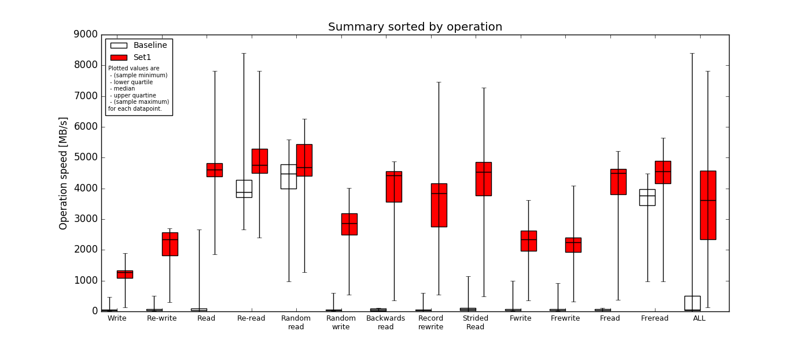
| Operation |
Write |
Re-write |
Read |
Re-read |
Random read |
Random write |
Backwards read |
Record rewrite |
Strided Read |
Fwrite |
Frewrite |
Fread |
Freread |
ALL |
| baeline | first quartile |
37.34 |
37.37 |
39.61 |
3707.18 |
3995.4 |
37.28 |
12.97 |
34.3 |
31.42 |
37.66 |
37.67 |
39.27 |
3455.69 |
37.79 |
| median |
38.75 |
38.86 |
46.5 |
3877.22 |
4481.92 |
37.81 |
51.64 |
37.7 |
70.7 |
41.08 |
41.32 |
41.55 |
3760.95 |
53.72 |
| third quartile |
63.71 |
65.8 |
95.4 |
4282.51 |
4778.74 |
49.5 |
86.78 |
56.6 |
108.58 |
75.6 |
75.19 |
78.59 |
3965.83 |
501.78 |
| minimum |
10.5 |
10.58 |
4.58 |
2671.54 |
974.91 |
10.79 |
1.54 |
5.3 |
4.05 |
10.73 |
10.53 |
3.72 |
974.91 |
1.54 |
| maximum |
468.12 |
514.4 |
2653.91 |
8395.92 |
5586.4 |
606.83 |
110.84 |
608.33 |
1142.39 |
994.0 |
919.52 |
110.88 |
4486.82 |
8395.92 |
| mean val. |
73.44 |
75.78 |
143.75 |
4034.02 |
4359.09 |
75.79 |
51.14 |
84.21 |
135.34 |
102.35 |
99.94 |
54.96 |
3644.7 |
994.96 |
| standard dev. |
87.21 |
91.17 |
397.64 |
663.67 |
743.0 |
105.38 |
37.28 |
123.01 |
214.02 |
158.25 |
152.04 |
28.41 |
533.62 |
1695.11 |
| ci. min. 90% |
68.11 |
70.2 |
119.43 |
3993.42 |
4313.64 |
69.34 |
48.86 |
76.69 |
122.25 |
92.67 |
90.64 |
53.22 |
3612.06 |
966.24 |
| ci. max. 90% |
78.78 |
81.36 |
168.07 |
4074.61 |
4404.53 |
82.23 |
53.42 |
91.74 |
148.43 |
112.03 |
109.24 |
56.7 |
3677.34 |
1023.68 |
| geom. mean |
52.38 |
53.61 |
63.4 |
3986.77 |
4274.39 |
49.2 |
30.03 |
48.77 |
63.34 |
61.54 |
61.03 |
46.84 |
3594.84 |
141.06 |
| set1 | first quartile |
1089.32 |
1827.74 |
4393.6 |
4493.15 |
4405.81 |
2487.75 |
3571.3 |
2765.14 |
3765.55 |
1961.99 |
1924.35 |
3804.54 |
4167.44 |
2349.59 |
| median |
1275.79 |
2347.38 |
4606.87 |
4756.19 |
4684.87 |
2867.26 |
4416.61 |
3843.67 |
4540.82 |
2336.11 |
2242.51 |
4501.7 |
4562.88 |
3610.54 |
| third quartile |
1326.01 |
2567.96 |
4814.27 |
5283.95 |
5435.77 |
3189.82 |
4557.03 |
4156.35 |
4860.35 |
2617.51 |
2394.48 |
4637.28 |
4889.02 |
4566.87 |
| minimum |
126.22 |
298.95 |
1860.61 |
2409.29 |
1279.43 |
549.69 |
357.68 |
549.69 |
484.65 |
354.43 |
322.48 |
382.75 |
974.91 |
126.22 |
| maximum |
1887.04 |
2694.87 |
7812.5 |
7812.5 |
6270.53 |
4008.47 |
4869.38 |
7460.08 |
7268.09 |
3619.64 |
4084.81 |
5213.87 |
5649.63 |
7812.5 |
| mean val. |
1146.44 |
2120.53 |
4532.55 |
4775.36 |
4732.27 |
2724.91 |
3937.52 |
3437.02 |
4305.07 |
2261.49 |
2141.29 |
4118.03 |
4456.45 |
3437.61 |
| standard dev. |
292.82 |
588.05 |
567.31 |
670.1 |
795.07 |
677.89 |
970.15 |
975.19 |
1015.32 |
563.96 |
594.95 |
868.07 |
756.94 |
1384.87 |
| ci. min. 90% |
1128.53 |
2084.56 |
4497.85 |
4734.38 |
4683.64 |
2683.45 |
3878.17 |
3377.37 |
4242.96 |
2227.0 |
2104.9 |
4064.93 |
4410.15 |
3414.15 |
| ci. max. 90% |
1164.35 |
2156.5 |
4567.25 |
4816.35 |
4780.9 |
2766.38 |
3996.86 |
3496.67 |
4367.17 |
2295.99 |
2177.68 |
4171.13 |
4502.75 |
3461.08 |
| geom. mean |
1085.2 |
1998.74 |
4494.3 |
4727.82 |
4654.41 |
2610.74 |
3722.51 |
3245.61 |
4116.75 |
2173.98 |
2034.39 |
3955.48 |
4371.38 |
3067.62 |
| linear regression slope 90% |
15.84 - 16.11 |
29.33 - 29.6 |
31.06 - 31.34 |
1.12 - 1.24 |
1.03 - 1.14 |
33.5 - 33.76 |
76.38 - 76.64 |
41.99 - 42.27 |
31.07 - 31.34 |
19.97 - 20.23 |
18.74 - 18.99 |
75.93 - 76.2 |
1.19 - 1.27 |
3.38 - 3.58 |
| ttest equality |
DIFF |
DIFF |
DIFF |
DIFF |
DIFF |
DIFF |
DIFF |
DIFF |
DIFF |
DIFF |
DIFF |
DIFF |
DIFF |
DIFF |
| baseline set1 difference |
1460.95 % |
2698.24 % |
3053.02 % |
18.38 % |
8.56 % |
3495.52 % |
7598.89 % |
3981.34 % |
3081.01 % |
2109.6 % |
2042.6 % |
7393.15 % |
22.27 % |
245.5 % |
| ttest p-value |
0.0 |
0.0 |
0.0 |
0.0 |
0.0 |
0.0 |
0.0 |
0.0 |
0.0 |
0.0 |
0.0 |
0.0 |
0.0 |
0.0 |
Write
| Write |
File size [kB] |
4 |
8 |
16 |
32 |
64 |
128 |
256 |
512 |
1024 |
2048 |
4096 |
8192 |
16384 |
32768 |
65536 |
131072 |
262144 |
524288 |
1048576 |
|---|
| baseline | first quartile |
10.73 |
13.32 |
16.37 |
25.8 |
35.7 |
62.16 |
72.47 |
85.24 |
86.88 |
67.37 |
47.12 |
39.56 |
38.35 |
37.74 |
37.5 |
37.38 |
37.31 |
37.28 |
37.27 |
| median |
10.73 |
18.13 |
24.3 |
35.59 |
65.8 |
96.93 |
120.83 |
168.79 |
208.41 |
70.41 |
48.19 |
40.11 |
38.55 |
37.8 |
37.53 |
37.39 |
37.32 |
37.29 |
37.27 |
| third quartile |
11.99 |
21.4 |
41.83 |
61.29 |
93.26 |
161.33 |
289.24 |
369.3 |
374.23 |
72.53 |
48.81 |
40.73 |
39.02 |
37.89 |
37.59 |
37.42 |
37.33 |
37.29 |
37.27 |
| mean val. |
11.53 |
17.41 |
27.3 |
44.72 |
77.66 |
126.07 |
172.04 |
210.32 |
233.93 |
67.93 |
47.96 |
40.18 |
38.67 |
37.83 |
37.39 |
37.36 |
37.1 |
37.06 |
37.01 |
| standard dev. |
1.35 |
4.58 |
11.89 |
27.48 |
53.33 |
94.48 |
118.81 |
142.54 |
144.66 |
7.51 |
1.2 |
0.74 |
0.41 |
0.12 |
0.82 |
0.27 |
0.95 |
0.9 |
1.5 |
| ci. min. 90% |
10.24 |
14.75 |
21.9 |
34.1 |
59.41 |
96.76 |
138.09 |
172.34 |
197.69 |
66.15 |
47.69 |
40.02 |
38.58 |
37.8 |
37.18 |
37.29 |
36.87 |
36.84 |
36.63 |
| ci. max. 90% |
12.82 |
20.06 |
32.71 |
55.35 |
95.91 |
155.37 |
206.0 |
248.29 |
270.16 |
69.71 |
48.24 |
40.34 |
38.75 |
37.86 |
37.59 |
37.43 |
37.34 |
37.29 |
37.39 |
| geom. mean |
11.47 |
16.84 |
24.92 |
37.28 |
62.61 |
98.97 |
133.32 |
159.57 |
180.77 |
67.46 |
47.95 |
40.17 |
38.67 |
37.83 |
37.38 |
37.36 |
37.09 |
37.05 |
36.97 |
| minimum |
10.5 |
11.55 |
13.55 |
14.21 |
24.25 |
33.94 |
42.66 |
37.12 |
36.39 |
47.77 |
45.07 |
38.78 |
38.04 |
37.65 |
33.63 |
35.59 |
31.19 |
32.39 |
27.2 |
| maximum |
13.71 |
22.77 |
44.62 |
98.56 |
182.7 |
382.19 |
389.98 |
458.31 |
468.12 |
75.51 |
50.19 |
42.02 |
39.7 |
38.17 |
37.81 |
37.54 |
37.39 |
37.32 |
37.28 |
| set1 | first quartile |
126.22 |
239.56 |
303.71 |
456.53 |
672.5 |
740.73 |
929.76 |
1033.03 |
1132.74 |
1175.44 |
1161.9 |
1189.78 |
1193.39 |
1256.62 |
1254.21 |
1256.58 |
1252.93 |
1256.63 |
1336.57 |
| median |
126.22 |
273.03 |
390.55 |
558.38 |
726.55 |
893.46 |
1086.83 |
1233.05 |
1292.22 |
1318.01 |
1316.6 |
1297.33 |
1267.33 |
1308.52 |
1305.64 |
1303.49 |
1307.8 |
1309.9 |
1371.15 |
| third quartile |
126.22 |
301.16 |
429.55 |
580.46 |
790.05 |
995.73 |
1160.18 |
1275.79 |
1331.61 |
1360.73 |
1348.4 |
1335.36 |
1321.23 |
1321.67 |
1320.84 |
1323.97 |
1325.46 |
1326.48 |
1460.16 |
| mean val. |
126.22 |
273.02 |
377.84 |
522.01 |
682.39 |
869.58 |
1020.53 |
1135.54 |
1194.94 |
1224.65 |
1221.09 |
1216.12 |
1203.95 |
1291.3 |
1289.53 |
1290.55 |
1292.23 |
1296.14 |
1407.41 |
| standard dev. |
0.0 |
34.88 |
66.33 |
105.82 |
128.58 |
193.98 |
184.48 |
196.82 |
208.16 |
206.22 |
192.01 |
182.55 |
172.13 |
37.7 |
39.5 |
37.8 |
39.13 |
40.51 |
123.32 |
| ci. min. 90% |
126.22 |
252.8 |
347.67 |
481.09 |
638.39 |
809.41 |
967.8 |
1083.11 |
1142.8 |
1175.75 |
1177.76 |
1176.74 |
1168.31 |
1281.85 |
1279.63 |
1281.08 |
1282.43 |
1285.99 |
1376.52 |
| ci. max. 90% |
126.22 |
293.24 |
408.0 |
562.92 |
726.38 |
929.76 |
1073.26 |
1187.97 |
1247.08 |
1273.54 |
1264.42 |
1255.51 |
1239.58 |
1300.74 |
1299.42 |
1300.02 |
1302.03 |
1306.28 |
1438.29 |
| geom. mean |
126.22 |
271.01 |
372.27 |
510.68 |
668.12 |
846.3 |
1001.74 |
1115.81 |
1173.45 |
1203.82 |
1203.12 |
1199.69 |
1189.23 |
1290.75 |
1288.93 |
1290.0 |
1291.64 |
1295.51 |
1402.67 |
| minimum |
126.22 |
236.07 |
283.94 |
354.43 |
386.18 |
482.41 |
590.81 |
703.08 |
707.21 |
712.24 |
738.96 |
734.28 |
731.19 |
1222.41 |
1199.08 |
1221.99 |
1220.16 |
1219.26 |
1236.73 |
| maximum |
126.22 |
312.65 |
475.57 |
652.73 |
802.14 |
1192.09 |
1269.76 |
1333.38 |
1388.93 |
1395.82 |
1387.03 |
1356.62 |
1339.69 |
1338.25 |
1334.64 |
1335.91 |
1336.54 |
1341.49 |
1887.04 |
| ttest equality |
DIFF |
DIFF |
DIFF |
DIFF |
DIFF |
DIFF |
DIFF |
DIFF |
DIFF |
DIFF |
DIFF |
DIFF |
DIFF |
DIFF |
DIFF |
DIFF |
DIFF |
DIFF |
DIFF |
| baseline set1 difference |
1076.27 % |
1405.74 % |
1507.14 % |
1468.99 % |
1004.15 % |
821.74 % |
799.44 % |
630.51 % |
520.03 % |
1771.81 % |
2632.36 % |
3134.52 % |
3187.77 % |
3362.08 % |
3378.63 % |
3386.4 % |
3404.17 % |
3412.92 % |
3578.9 % |
| ttest p-value |
0.0 |
0.0 |
0.0 |
0.0 |
0.0 |
0.0 |
0.0 |
0.0 |
0.0 |
0.0 |
0.0 |
0.0 |
0.0 |
0.0 |
0.0 |
0.0 |
0.0 |
0.0 |
0.0 |
| Write |
Block size [kB] |
4 |
8 |
16 |
32 |
64 |
128 |
256 |
512 |
1024 |
2048 |
4096 |
8192 |
16384 |
|---|
| baseline | first quartile |
16.67 |
31.03 |
42.6 |
48.28 |
37.45 |
37.39 |
37.39 |
37.32 |
37.33 |
37.32 |
37.32 |
37.31 |
37.3 |
| median |
38.04 |
45.14 |
60.27 |
83.92 |
40.05 |
39.47 |
38.66 |
38.23 |
37.79 |
37.68 |
37.55 |
37.47 |
37.39 |
| third quartile |
45.81 |
63.59 |
84.93 |
110.88 |
172.71 |
283.22 |
74.73 |
54.83 |
48.28 |
39.63 |
39.02 |
38.21 |
37.75 |
| mean val. |
32.86 |
47.96 |
65.47 |
88.02 |
90.53 |
120.03 |
119.59 |
106.45 |
76.24 |
42.02 |
38.96 |
37.91 |
37.6 |
| standard dev. |
13.74 |
18.55 |
24.66 |
40.07 |
70.63 |
124.72 |
142.38 |
145.52 |
108.05 |
10.67 |
3.12 |
0.91 |
0.48 |
| ci. min. 90% |
30.02 |
43.95 |
59.91 |
78.52 |
76.94 |
95.18 |
90.12 |
75.06 |
51.86 |
39.48 |
38.18 |
37.67 |
37.47 |
| ci. max. 90% |
35.71 |
51.96 |
71.04 |
97.52 |
104.11 |
144.89 |
149.07 |
137.84 |
100.63 |
44.55 |
39.74 |
38.15 |
37.74 |
| geom. mean |
29.24 |
44.18 |
61.21 |
79.02 |
67.94 |
73.88 |
68.98 |
60.81 |
51.21 |
41.0 |
38.85 |
37.9 |
37.6 |
| minimum |
10.5 |
20.89 |
38.28 |
38.23 |
32.39 |
37.03 |
35.59 |
31.19 |
37.27 |
27.2 |
36.33 |
37.08 |
36.8 |
| maximum |
49.36 |
76.86 |
118.4 |
184.06 |
212.22 |
382.19 |
399.02 |
468.12 |
434.43 |
74.72 |
49.92 |
40.27 |
39.03 |
| set1 | first quartile |
359.29 |
643.1 |
730.62 |
982.13 |
1248.51 |
1285.03 |
1301.93 |
1320.42 |
1327.25 |
1329.29 |
1318.61 |
1239.82 |
1222.73 |
| median |
661.64 |
925.4 |
1084.11 |
1204.44 |
1266.61 |
1293.19 |
1309.35 |
1325.09 |
1334.64 |
1333.79 |
1323.39 |
1243.07 |
1225.54 |
| third quartile |
734.44 |
958.4 |
1122.69 |
1254.63 |
1297.83 |
1318.98 |
1335.08 |
1354.09 |
1340.29 |
1338.26 |
1329.29 |
1258.93 |
1229.4 |
| mean val. |
544.63 |
776.25 |
943.96 |
1096.19 |
1218.38 |
1280.45 |
1312.26 |
1343.98 |
1342.47 |
1334.45 |
1336.86 |
1263.74 |
1264.3 |
| standard dev. |
217.49 |
240.64 |
245.59 |
219.26 |
157.98 |
73.71 |
48.93 |
70.97 |
39.55 |
16.71 |
47.15 |
54.84 |
129.14 |
| ci. min. 90% |
499.6 |
724.34 |
888.54 |
1044.2 |
1188.0 |
1265.77 |
1302.13 |
1328.67 |
1333.54 |
1330.49 |
1325.05 |
1249.13 |
1227.39 |
| ci. max. 90% |
589.65 |
828.17 |
999.38 |
1148.18 |
1248.77 |
1295.14 |
1322.39 |
1359.3 |
1351.39 |
1338.41 |
1348.67 |
1278.35 |
1301.21 |
| geom. mean |
484.39 |
728.04 |
904.54 |
1070.32 |
1206.19 |
1278.22 |
1311.35 |
1342.42 |
1341.93 |
1334.35 |
1336.1 |
1262.67 |
1259.09 |
| minimum |
126.22 |
301.16 |
412.68 |
577.9 |
726.55 |
1016.25 |
1162.75 |
1255.92 |
1295.18 |
1292.98 |
1308.52 |
1232.94 |
1193.39 |
| maximum |
754.72 |
1012.04 |
1186.24 |
1314.08 |
1492.21 |
1403.08 |
1453.17 |
1833.71 |
1575.03 |
1401.93 |
1517.12 |
1472.97 |
1887.04 |
| ttest equality |
DIFF |
DIFF |
DIFF |
DIFF |
DIFF |
DIFF |
DIFF |
DIFF |
DIFF |
DIFF |
DIFF |
DIFF |
DIFF |
| baseline set1 difference |
1639.33 % |
1949.91 % |
1698.88 % |
1335.22 % |
3062.27 % |
3176.66 % |
3287.26 % |
3366.49 % |
3431.44 % |
3440.05 % |
3424.45 % |
3217.13 % |
3177.83 % |
| ttest p-value |
0.0 |
0.0 |
0.0 |
0.0 |
0.0 |
0.0 |
0.0 |
0.0 |
0.0 |
0.0 |
0.0 |
0.0 |
0.0 |
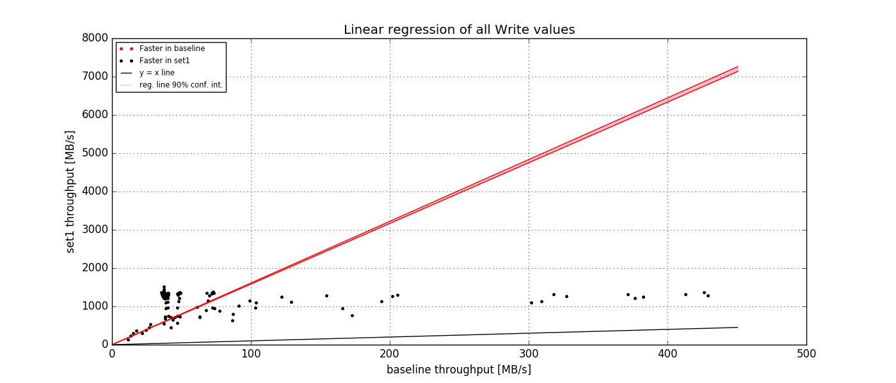
| Regression line |
|---|
| slope | 15.97615 |
| std. error | 0.08302 |
| ci. max 90% | 15.8387 |
| ci. min. 90% | 16.11359 |
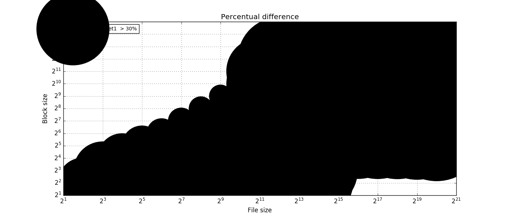
Back on top
Re-write
| Re-write |
File size [kB] |
4 |
8 |
16 |
32 |
64 |
128 |
256 |
512 |
1024 |
2048 |
4096 |
8192 |
16384 |
32768 |
65536 |
131072 |
262144 |
524288 |
1048576 |
|---|
| baseline | first quartile |
10.79 |
15.06 |
20.67 |
28.17 |
45.39 |
62.45 |
75.68 |
92.82 |
86.24 |
66.44 |
47.09 |
39.63 |
38.4 |
37.77 |
37.51 |
37.38 |
37.31 |
37.28 |
37.26 |
| median |
10.97 |
20.28 |
26.49 |
44.25 |
71.51 |
108.77 |
129.94 |
157.63 |
201.94 |
70.4 |
48.21 |
40.06 |
38.55 |
37.8 |
37.53 |
37.39 |
37.32 |
37.29 |
37.27 |
| third quartile |
11.36 |
24.64 |
46.43 |
58.46 |
127.58 |
200.55 |
308.56 |
379.07 |
369.0 |
73.42 |
48.99 |
40.7 |
38.8 |
37.87 |
37.61 |
37.42 |
37.33 |
37.29 |
37.27 |
| mean val. |
11.77 |
19.9 |
32.83 |
47.87 |
91.58 |
133.91 |
183.93 |
219.68 |
236.74 |
68.37 |
48.04 |
40.26 |
38.62 |
37.85 |
37.56 |
37.31 |
37.1 |
36.78 |
36.98 |
| standard dev. |
1.91 |
5.5 |
16.59 |
25.09 |
57.86 |
90.8 |
134.72 |
152.05 |
146.37 |
7.6 |
1.41 |
0.79 |
0.29 |
0.13 |
0.08 |
0.4 |
1.19 |
1.88 |
0.96 |
| ci. min. 90% |
9.95 |
16.72 |
25.29 |
38.17 |
71.78 |
105.74 |
145.43 |
179.18 |
200.08 |
66.57 |
47.72 |
40.09 |
38.56 |
37.82 |
37.54 |
37.21 |
36.8 |
36.31 |
36.74 |
| ci. max. 90% |
13.59 |
23.09 |
40.37 |
57.57 |
111.38 |
162.08 |
222.44 |
260.19 |
273.4 |
70.17 |
48.36 |
40.44 |
38.68 |
37.88 |
37.58 |
37.42 |
37.4 |
37.25 |
37.22 |
| geom. mean |
11.66 |
19.19 |
29.28 |
42.03 |
74.86 |
106.96 |
138.3 |
166.28 |
183.83 |
67.9 |
48.02 |
40.26 |
38.62 |
37.85 |
37.56 |
37.31 |
37.08 |
36.73 |
36.97 |
| minimum |
10.58 |
12.83 |
12.7 |
17.71 |
26.29 |
38.62 |
40.7 |
43.32 |
44.38 |
46.6 |
43.93 |
39.27 |
38.18 |
37.71 |
37.47 |
35.41 |
29.45 |
28.12 |
32.59 |
| maximum |
15.14 |
27.82 |
68.21 |
103.47 |
204.35 |
327.92 |
480.82 |
496.51 |
514.4 |
77.65 |
50.15 |
42.74 |
39.54 |
38.26 |
37.81 |
37.52 |
37.39 |
37.33 |
37.29 |
| set1 | first quartile |
322.48 |
462.79 |
625.31 |
942.25 |
917.21 |
1214.17 |
1313.14 |
1538.86 |
1639.16 |
1921.11 |
2020.69 |
2218.81 |
2149.9 |
2416.0 |
2408.27 |
2419.43 |
2420.82 |
2422.18 |
2427.58 |
| median |
328.96 |
530.34 |
782.0 |
1080.74 |
1359.63 |
1569.48 |
1840.23 |
2071.09 |
2177.95 |
2338.32 |
2455.39 |
2502.02 |
2372.78 |
2542.73 |
2543.72 |
2539.67 |
2550.11 |
2548.75 |
2549.82 |
| third quartile |
328.96 |
597.89 |
912.68 |
1241.97 |
1562.19 |
1867.08 |
2084.66 |
2248.25 |
2398.38 |
2586.04 |
2615.39 |
2620.77 |
2592.4 |
2585.0 |
2578.98 |
2580.07 |
2585.08 |
2582.66 |
2591.83 |
| mean val. |
325.88 |
529.05 |
781.78 |
1078.42 |
1300.82 |
1514.86 |
1732.83 |
1894.69 |
2067.82 |
2179.52 |
2258.92 |
2309.19 |
2267.76 |
2481.66 |
2476.58 |
2480.12 |
2484.12 |
2487.22 |
2491.26 |
| standard dev. |
18.3 |
72.6 |
146.14 |
243.79 |
349.65 |
403.3 |
429.14 |
487.41 |
475.17 |
471.4 |
457.87 |
444.08 |
420.89 |
137.35 |
135.77 |
136.0 |
137.7 |
137.59 |
139.62 |
| ci. min. 90% |
308.43 |
486.96 |
715.32 |
984.16 |
1181.18 |
1389.75 |
1610.17 |
1764.84 |
1948.8 |
2067.75 |
2155.6 |
2213.38 |
2180.63 |
2447.26 |
2442.58 |
2446.06 |
2449.63 |
2452.76 |
2456.29 |
| ci. max. 90% |
343.33 |
571.14 |
848.24 |
1172.68 |
1420.46 |
1639.97 |
1855.48 |
2024.53 |
2186.83 |
2291.29 |
2362.25 |
2404.99 |
2354.89 |
2516.06 |
2510.59 |
2514.19 |
2518.61 |
2521.69 |
2526.23 |
| geom. mean |
325.46 |
524.55 |
768.92 |
1050.84 |
1251.21 |
1456.89 |
1675.85 |
1824.09 |
2005.92 |
2118.36 |
2201.82 |
2255.51 |
2219.44 |
2477.8 |
2472.82 |
2476.34 |
2480.25 |
2483.36 |
2487.29 |
| minimum |
298.95 |
456.34 |
602.32 |
724.93 |
780.64 |
850.0 |
987.54 |
900.91 |
1076.34 |
1088.04 |
1164.13 |
1189.92 |
1182.39 |
2184.29 |
2204.54 |
2207.99 |
2209.81 |
2225.13 |
2214.25 |
| maximum |
350.04 |
597.89 |
980.99 |
1427.71 |
1738.29 |
2049.55 |
2275.53 |
2564.36 |
2631.63 |
2694.87 |
2661.44 |
2679.04 |
2651.71 |
2623.35 |
2613.94 |
2615.07 |
2611.39 |
2617.13 |
2617.3 |
| ttest equality |
DIFF |
DIFF |
DIFF |
DIFF |
DIFF |
DIFF |
DIFF |
DIFF |
DIFF |
DIFF |
DIFF |
DIFF |
DIFF |
DIFF |
DIFF |
DIFF |
DIFF |
DIFF |
DIFF |
| baseline set1 difference |
2897.45 % |
2515.62 % |
2851.92 % |
2342.31 % |
1801.32 % |
1342.89 % |
1316.25 % |
1213.87 % |
978.5 % |
3221.67 % |
4993.33 % |
6146.27 % |
6054.79 % |
6626.15 % |
6678.13 % |
6692.27 % |
6732.67 % |
6735.65 % |
6741.74 % |
| ttest p-value |
0.0 |
0.0 |
0.0 |
0.0 |
0.0 |
0.0 |
0.0 |
0.0 |
0.0 |
0.0 |
0.0 |
0.0 |
0.0 |
0.0 |
0.0 |
0.0 |
0.0 |
0.0 |
0.0 |
| Re-write |
Block size [kB] |
4 |
8 |
16 |
32 |
64 |
128 |
256 |
512 |
1024 |
2048 |
4096 |
8192 |
16384 |
|---|
| baseline | first quartile |
21.23 |
38.4 |
48.62 |
48.26 |
37.41 |
37.41 |
37.39 |
37.36 |
37.33 |
37.32 |
37.3 |
37.31 |
37.28 |
| median |
40.12 |
48.01 |
65.8 |
104.14 |
40.37 |
39.25 |
38.54 |
38.26 |
37.79 |
37.73 |
37.52 |
37.46 |
37.39 |
| third quartile |
45.74 |
66.85 |
85.67 |
128.15 |
187.61 |
287.15 |
74.77 |
55.69 |
46.55 |
40.23 |
38.66 |
37.96 |
37.78 |
| mean val. |
34.72 |
50.7 |
67.61 |
94.79 |
94.78 |
121.6 |
123.93 |
107.36 |
79.99 |
42.03 |
38.76 |
37.85 |
37.37 |
| standard dev. |
13.19 |
18.2 |
24.57 |
43.46 |
77.2 |
127.21 |
150.95 |
146.64 |
120.84 |
10.55 |
3.05 |
0.89 |
1.21 |
| ci. min. 90% |
31.99 |
46.77 |
62.07 |
84.49 |
79.93 |
96.25 |
92.68 |
75.73 |
52.72 |
39.53 |
38.0 |
37.62 |
37.02 |
| ci. max. 90% |
37.45 |
54.63 |
73.16 |
105.1 |
109.63 |
146.94 |
155.18 |
139.0 |
107.25 |
44.53 |
39.52 |
38.09 |
37.71 |
| geom. mean |
31.43 |
47.29 |
63.45 |
84.09 |
69.35 |
74.06 |
69.75 |
61.58 |
51.52 |
41.05 |
38.65 |
37.84 |
37.35 |
| minimum |
10.58 |
20.83 |
38.26 |
38.24 |
29.45 |
29.2 |
32.59 |
37.0 |
36.81 |
28.12 |
35.55 |
36.75 |
33.04 |
| maximum |
50.12 |
83.81 |
122.99 |
193.72 |
260.98 |
377.13 |
480.82 |
496.51 |
514.4 |
74.53 |
49.57 |
40.07 |
39.25 |
| set1 | first quartile |
728.96 |
1009.75 |
1389.06 |
1696.45 |
2149.97 |
2313.23 |
2426.69 |
2573.44 |
2600.17 |
2604.24 |
2557.22 |
2275.2 |
2214.47 |
| median |
1014.19 |
1313.75 |
1613.43 |
1982.79 |
2414.05 |
2516.41 |
2540.31 |
2584.9 |
2610.34 |
2610.84 |
2575.71 |
2282.03 |
2225.13 |
| third quartile |
1184.96 |
1623.04 |
1961.44 |
2253.85 |
2427.91 |
2543.29 |
2550.11 |
2605.47 |
2621.09 |
2622.72 |
2592.4 |
2309.05 |
2229.25 |
| mean val. |
907.57 |
1279.18 |
1613.97 |
1941.56 |
2270.31 |
2417.6 |
2481.62 |
2586.55 |
2602.85 |
2616.56 |
2573.44 |
2307.91 |
2219.64 |
| standard dev. |
293.22 |
349.94 |
345.65 |
306.28 |
227.92 |
180.62 |
106.89 |
34.19 |
60.2 |
25.14 |
39.24 |
56.19 |
21.23 |
| ci. min. 90% |
846.87 |
1203.68 |
1535.97 |
1868.94 |
2226.47 |
2381.61 |
2459.5 |
2579.18 |
2589.26 |
2610.6 |
2563.61 |
2292.94 |
2213.57 |
| ci. max. 90% |
968.27 |
1354.67 |
1691.97 |
2014.18 |
2314.15 |
2453.6 |
2503.75 |
2593.93 |
2616.43 |
2622.52 |
2583.27 |
2322.88 |
2225.71 |
| geom. mean |
847.68 |
1223.2 |
1573.58 |
1916.31 |
2257.99 |
2410.49 |
2479.28 |
2586.32 |
2602.11 |
2616.44 |
2573.14 |
2307.26 |
2219.54 |
| minimum |
298.95 |
597.89 |
912.68 |
1353.97 |
1693.37 |
1979.9 |
2243.41 |
2405.53 |
2264.86 |
2567.36 |
2403.32 |
2265.37 |
2124.85 |
| maximum |
1224.71 |
1684.86 |
2027.26 |
2313.49 |
2489.24 |
2590.83 |
2596.11 |
2640.25 |
2662.25 |
2694.87 |
2643.83 |
2467.45 |
2261.17 |
| ttest equality |
DIFF |
DIFF |
DIFF |
DIFF |
DIFF |
DIFF |
DIFF |
DIFF |
DIFF |
DIFF |
DIFF |
DIFF |
DIFF |
| baseline set1 difference |
2428.13 % |
2636.43 % |
2352.04 % |
1803.94 % |
5879.52 % |
6311.96 % |
6491.53 % |
6655.32 % |
6806.94 % |
6819.07 % |
6764.63 % |
5992.15 % |
5851.03 % |
| ttest p-value |
0.0 |
0.0 |
0.0 |
0.0 |
0.0 |
0.0 |
0.0 |
0.0 |
0.0 |
0.0 |
0.0 |
0.0 |
0.0 |
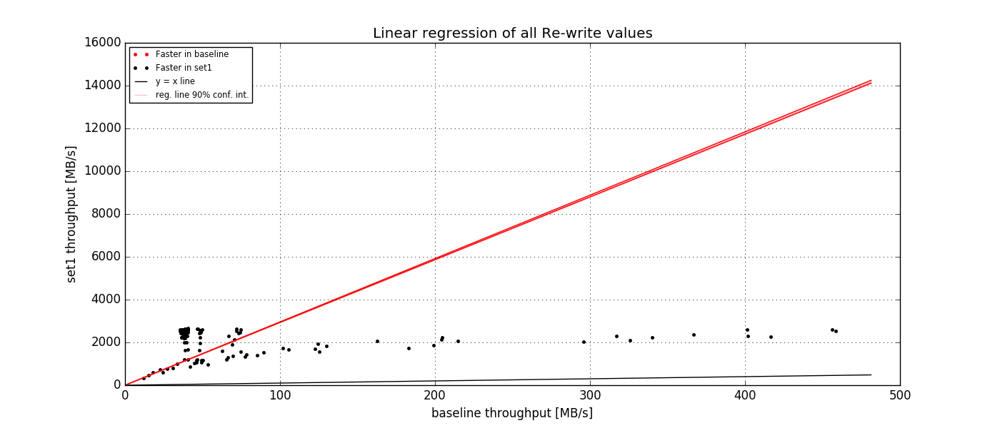
| Regression line |
|---|
| slope | 29.46545 |
| std. error | 0.08423 |
| ci. max 90% | 29.32601 |
| ci. min. 90% | 29.60489 |
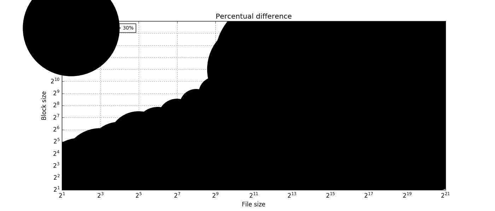
Back on top
Read
| Read |
File size [kB] |
4 |
8 |
16 |
32 |
64 |
128 |
256 |
512 |
1024 |
2048 |
4096 |
8192 |
16384 |
32768 |
65536 |
131072 |
262144 |
524288 |
1048576 |
|---|
| baseline | first quartile |
6.24 |
13.07 |
25.67 |
14.84 |
25.08 |
24.28 |
40.82 |
48.15 |
43.86 |
40.91 |
39.92 |
39.58 |
39.6 |
39.77 |
39.75 |
39.73 |
39.68 |
39.61 |
39.61 |
| median |
6.31 |
13.32 |
26.84 |
15.58 |
26.19 |
41.88 |
61.51 |
65.93 |
47.92 |
42.76 |
41.06 |
40.41 |
40.26 |
67.4 |
66.5 |
66.03 |
65.65 |
65.61 |
65.58 |
| third quartile |
6.35 |
13.86 |
27.85 |
50.03 |
95.57 |
197.71 |
216.03 |
88.51 |
56.05 |
63.4 |
84.45 |
82.36 |
93.6 |
107.94 |
101.07 |
97.97 |
96.51 |
95.78 |
95.34 |
| mean val. |
6.28 |
12.5 |
26.1 |
30.09 |
52.84 |
92.55 |
130.91 |
152.87 |
183.71 |
237.0 |
280.17 |
268.17 |
260.03 |
85.01 |
74.7 |
71.09 |
70.02 |
69.31 |
68.95 |
| standard dev. |
0.17 |
2.95 |
5.44 |
19.02 |
37.92 |
86.64 |
134.17 |
231.12 |
367.47 |
558.11 |
710.74 |
687.87 |
673.92 |
54.48 |
36.49 |
30.69 |
29.09 |
28.2 |
27.77 |
| ci. min. 90% |
6.12 |
10.79 |
23.63 |
22.73 |
39.87 |
65.67 |
92.56 |
91.3 |
91.67 |
104.67 |
119.78 |
119.77 |
120.52 |
71.36 |
65.56 |
63.4 |
62.73 |
62.25 |
61.99 |
| ci. max. 90% |
6.44 |
14.21 |
28.57 |
37.44 |
65.82 |
119.43 |
169.25 |
214.44 |
275.76 |
369.33 |
440.56 |
416.57 |
399.54 |
98.66 |
83.84 |
78.78 |
77.3 |
76.37 |
75.9 |
| geom. mean |
6.28 |
11.99 |
25.14 |
24.83 |
41.69 |
59.51 |
85.1 |
85.01 |
74.13 |
71.11 |
72.99 |
74.36 |
76.39 |
71.33 |
66.52 |
64.69 |
64.09 |
63.64 |
63.4 |
| minimum |
6.02 |
4.58 |
7.74 |
13.89 |
23.12 |
21.18 |
27.67 |
38.66 |
36.94 |
37.92 |
38.69 |
38.68 |
38.95 |
39.3 |
39.22 |
39.17 |
39.3 |
39.19 |
39.16 |
| maximum |
6.48 |
14.54 |
33.04 |
61.51 |
123.78 |
241.29 |
443.41 |
836.25 |
1253.23 |
1980.4 |
2564.22 |
2562.42 |
2653.91 |
207.52 |
142.33 |
121.82 |
113.97 |
110.42 |
108.74 |
| set1 | first quartile |
1860.61 |
4197.96 |
4022.99 |
3537.64 |
4173.89 |
4450.45 |
4465.72 |
4490.46 |
4589.93 |
4653.09 |
4653.49 |
4706.22 |
4473.09 |
4324.33 |
4324.94 |
4312.08 |
4332.16 |
4374.09 |
4410.05 |
| median |
1860.61 |
4197.96 |
5117.72 |
4397.55 |
4457.8 |
4606.87 |
4814.27 |
4672.74 |
4761.89 |
4750.58 |
4728.9 |
4810.12 |
4657.81 |
4544.08 |
4502.6 |
4499.77 |
4503.48 |
4510.7 |
4515.85 |
| third quartile |
3409.29 |
4197.96 |
5117.72 |
4550.21 |
4783.15 |
4818.57 |
5046.41 |
4951.31 |
4976.6 |
4956.19 |
4872.42 |
4848.34 |
4810.39 |
4612.32 |
4568.43 |
4542.87 |
4533.62 |
4553.7 |
4557.33 |
| mean val. |
2480.08 |
4873.19 |
4705.25 |
4266.58 |
4616.8 |
4629.05 |
4757.36 |
4732.25 |
4754.6 |
4796.67 |
4724.02 |
4693.74 |
4495.49 |
4360.91 |
4334.6 |
4320.09 |
4334.07 |
4339.41 |
4344.86 |
| standard dev. |
848.24 |
1556.27 |
855.93 |
783.13 |
778.95 |
563.47 |
616.35 |
488.31 |
404.09 |
360.12 |
332.4 |
293.47 |
469.15 |
452.71 |
447.27 |
462.34 |
448.06 |
454.11 |
457.35 |
| ci. min. 90% |
1671.38 |
3971.06 |
4315.99 |
3963.79 |
4350.26 |
4454.25 |
4581.2 |
4602.16 |
4653.38 |
4711.29 |
4649.01 |
4630.42 |
4398.37 |
4247.52 |
4222.57 |
4204.29 |
4221.84 |
4225.67 |
4230.3 |
| ci. max. 90% |
3288.79 |
5775.33 |
5094.5 |
4569.38 |
4883.34 |
4803.85 |
4933.52 |
4862.33 |
4855.81 |
4882.05 |
4799.03 |
4757.05 |
4592.61 |
4474.3 |
4446.63 |
4435.9 |
4446.3 |
4453.15 |
4459.41 |
| geom. mean |
2370.6 |
4696.27 |
4622.12 |
4201.88 |
4558.35 |
4595.5 |
4715.48 |
4707.55 |
4737.67 |
4783.39 |
4712.01 |
4684.08 |
4468.47 |
4335.9 |
4310.09 |
4293.6 |
4309.47 |
4314.14 |
4319.21 |
| minimum |
1860.61 |
3721.23 |
3005.45 |
3135.27 |
3504.33 |
3365.01 |
3014.83 |
3706.49 |
3877.13 |
4008.31 |
3643.41 |
3934.71 |
3034.29 |
3419.84 |
3423.19 |
3196.25 |
3466.63 |
3462.79 |
3463.11 |
| maximum |
3409.29 |
7812.5 |
5551.22 |
6299.81 |
6933.98 |
5710.84 |
5704.81 |
5686.33 |
5646.57 |
5668.72 |
5362.18 |
5009.02 |
5026.58 |
4927.63 |
4840.0 |
4831.46 |
4837.05 |
4819.23 |
4832.63 |
| ttest equality |
DIFF |
DIFF |
DIFF |
DIFF |
DIFF |
DIFF |
DIFF |
DIFF |
DIFF |
DIFF |
DIFF |
DIFF |
DIFF |
DIFF |
DIFF |
DIFF |
DIFF |
DIFF |
DIFF |
| baseline set1 difference |
29393.31 % |
31420.1 % |
18968.32 % |
28134.3 % |
16918.81 % |
10901.48 % |
7726.22 % |
6986.93 % |
9838.2 % |
11011.08 % |
11416.89 % |
11804.1 % |
11469.4 % |
6642.32 % |
6671.03 % |
6714.6 % |
6760.1 % |
6775.29 % |
6785.7 % |
| ttest p-value |
0.0002 |
0.0 |
0.0 |
0.0 |
0.0 |
0.0 |
0.0 |
0.0 |
0.0 |
0.0 |
0.0 |
0.0 |
0.0 |
0.0 |
0.0 |
0.0 |
0.0 |
0.0 |
0.0 |
| Read |
Block size [kB] |
4 |
8 |
16 |
32 |
64 |
128 |
256 |
512 |
1024 |
2048 |
4096 |
8192 |
16384 |
|---|
| baseline | first quartile |
23.35 |
24.54 |
38.83 |
39.95 |
39.49 |
39.61 |
39.69 |
46.5 |
65.69 |
83.09 |
96.45 |
104.32 |
110.42 |
| median |
37.83 |
38.56 |
40.52 |
43.67 |
39.77 |
39.99 |
40.21 |
47.49 |
67.4 |
85.1 |
101.05 |
113.01 |
121.8 |
| third quartile |
39.54 |
39.59 |
43.68 |
52.87 |
66.81 |
52.57 |
47.12 |
56.51 |
84.45 |
107.69 |
124.97 |
149.57 |
207.17 |
| mean val. |
30.21 |
31.87 |
39.11 |
50.66 |
61.17 |
70.23 |
77.04 |
113.16 |
177.26 |
274.78 |
378.43 |
424.35 |
481.93 |
| standard dev. |
12.44 |
11.01 |
9.86 |
18.5 |
46.61 |
67.12 |
98.35 |
194.95 |
329.88 |
545.34 |
760.69 |
805.18 |
866.02 |
| ci. min. 90% |
27.64 |
29.49 |
36.88 |
46.27 |
52.21 |
56.85 |
56.68 |
71.1 |
102.82 |
145.48 |
187.9 |
209.85 |
234.41 |
| ci. max. 90% |
32.79 |
34.24 |
41.34 |
55.05 |
70.14 |
83.6 |
97.4 |
155.22 |
251.7 |
404.08 |
568.96 |
638.85 |
729.46 |
| geom. mean |
26.41 |
29.4 |
37.7 |
48.31 |
52.32 |
54.74 |
54.58 |
66.22 |
93.7 |
125.46 |
155.63 |
176.66 |
199.31 |
| minimum |
4.58 |
7.74 |
14.67 |
24.44 |
39.17 |
39.27 |
39.16 |
46.09 |
46.16 |
56.04 |
95.3 |
92.47 |
108.69 |
| maximum |
52.43 |
53.09 |
66.3 |
123.78 |
241.29 |
360.24 |
443.41 |
836.25 |
1253.23 |
1980.4 |
2564.22 |
2562.42 |
2653.91 |
| set1 | first quartile |
3706.49 |
4606.87 |
4461.76 |
4606.87 |
4778.74 |
4697.91 |
4497.54 |
4515.17 |
4532.75 |
4520.68 |
4368.58 |
3596.69 |
3457.68 |
| median |
4052.66 |
4890.78 |
4660.84 |
4672.74 |
4809.15 |
4744.19 |
4555.81 |
4569.64 |
4561.07 |
4548.45 |
4410.73 |
3611.72 |
3468.13 |
| third quartile |
4130.68 |
4980.23 |
4791.98 |
4823.09 |
4835.36 |
4856.7 |
4739.85 |
4794.41 |
4824.99 |
4841.72 |
4574.0 |
3682.02 |
3473.7 |
| mean val. |
3817.09 |
4850.86 |
4648.79 |
4721.03 |
4818.38 |
4833.9 |
4705.23 |
4724.77 |
4720.49 |
4696.53 |
4536.58 |
3662.92 |
3457.42 |
| standard dev. |
534.71 |
683.14 |
279.43 |
310.73 |
391.76 |
262.13 |
326.89 |
324.63 |
310.16 |
359.07 |
295.46 |
170.33 |
50.98 |
| ci. min. 90% |
3706.39 |
4703.48 |
4585.74 |
4647.36 |
4743.03 |
4781.66 |
4637.55 |
4654.74 |
4650.49 |
4611.4 |
4462.57 |
3617.55 |
3442.85 |
| ci. max. 90% |
3927.78 |
4998.24 |
4711.85 |
4794.71 |
4893.73 |
4886.13 |
4772.9 |
4794.81 |
4790.48 |
4781.67 |
4610.59 |
3708.3 |
3471.99 |
| geom. mean |
3766.94 |
4809.88 |
4640.49 |
4711.85 |
4803.35 |
4827.33 |
4694.93 |
4714.61 |
4711.1 |
4683.43 |
4527.8 |
3659.01 |
3457.04 |
| minimum |
1860.61 |
3417.72 |
3877.22 |
4065.78 |
3365.01 |
4482.02 |
4449.24 |
4451.9 |
4292.16 |
3643.41 |
4294.72 |
3034.29 |
3196.25 |
| maximum |
4197.96 |
7812.5 |
5551.22 |
6299.81 |
6933.98 |
5710.84 |
5704.81 |
5686.33 |
5646.57 |
5668.72 |
5362.18 |
4052.56 |
3515.8 |
| ttest equality |
DIFF |
DIFF |
DIFF |
DIFF |
DIFF |
DIFF |
DIFF |
DIFF |
DIFF |
DIFF |
DIFF |
DIFF |
DIFF |
| baseline set1 difference |
10611.96 % |
12584.83 % |
11402.15 % |
10600.73 % |
11991.05 % |
11764.38 % |
11230.59 % |
9522.28 % |
6667.13 % |
5244.54 % |
4265.08 % |
3095.96 % |
2747.4 % |
| ttest p-value |
0.0 |
0.0 |
0.0 |
0.0 |
0.0 |
0.0 |
0.0 |
0.0 |
0.0 |
0.0 |
0.0 |
0.0 |
0.0 |
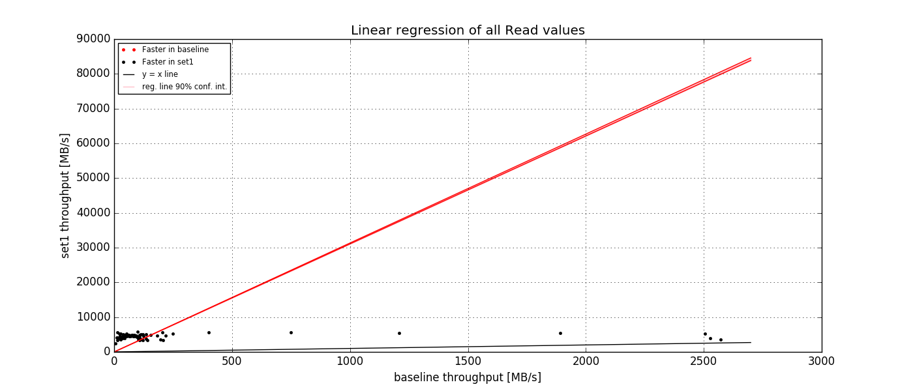
| Regression line |
|---|
| slope | 31.20122 |
| std. error | 0.08319 |
| ci. max 90% | 31.06351 |
| ci. min. 90% | 31.33894 |
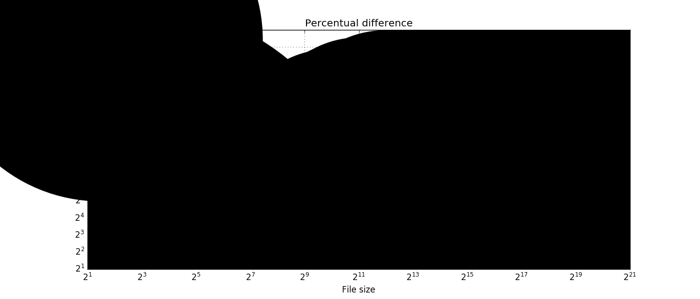
Back on top
Re-read
| Re-read |
File size [kB] |
4 |
8 |
16 |
32 |
64 |
128 |
256 |
512 |
1024 |
2048 |
4096 |
8192 |
16384 |
32768 |
65536 |
131072 |
262144 |
524288 |
1048576 |
|---|
| baseline | first quartile |
3409.29 |
4853.11 |
4508.68 |
3774.66 |
4173.89 |
3889.21 |
3872.27 |
3870.71 |
4014.43 |
4168.22 |
4248.14 |
3935.17 |
3542.9 |
3622.04 |
3626.49 |
3664.68 |
3579.98 |
3675.39 |
3690.85 |
| median |
3409.29 |
6818.58 |
5117.72 |
3936.31 |
4457.8 |
4103.23 |
4099.11 |
4200.14 |
4467.7 |
4406.25 |
4395.62 |
4014.02 |
3683.29 |
3707.18 |
3717.9 |
3757.87 |
3769.18 |
3780.52 |
3795.45 |
| third quartile |
3906.25 |
7812.5 |
5117.72 |
4435.71 |
4872.05 |
4807.6 |
4814.27 |
4693.94 |
4671.73 |
4574.43 |
4550.61 |
4099.37 |
3750.61 |
3761.62 |
3777.12 |
3797.77 |
3808.06 |
3807.6 |
3815.95 |
| mean val. |
3608.07 |
6334.61 |
5040.34 |
4089.57 |
4508.57 |
4306.95 |
4296.26 |
4308.84 |
4443.02 |
4455.63 |
4422.17 |
3991.15 |
3635.35 |
3598.78 |
3604.31 |
3627.42 |
3631.13 |
3646.72 |
3658.97 |
| standard dev. |
272.2 |
1753.22 |
1094.78 |
504.04 |
549.76 |
636.87 |
622.76 |
587.42 |
537.55 |
483.0 |
381.58 |
188.88 |
186.27 |
270.59 |
288.18 |
307.04 |
327.03 |
319.3 |
334.99 |
| ci. min. 90% |
3348.56 |
5318.3 |
4542.47 |
3894.69 |
4320.45 |
4109.38 |
4118.27 |
4152.35 |
4308.38 |
4341.11 |
4336.06 |
3950.41 |
3596.79 |
3531.01 |
3532.12 |
3550.52 |
3549.22 |
3566.75 |
3575.06 |
| ci. max. 90% |
3867.58 |
7350.92 |
5538.22 |
4284.46 |
4696.68 |
4504.51 |
4474.26 |
4465.33 |
4577.67 |
4570.15 |
4508.28 |
4031.9 |
3673.91 |
3666.56 |
3676.49 |
3704.33 |
3713.04 |
3726.7 |
3742.88 |
| geom. mean |
3600.0 |
6076.66 |
4946.33 |
4060.62 |
4475.83 |
4263.13 |
4253.23 |
4272.34 |
4412.26 |
4431.1 |
4406.31 |
3986.57 |
3630.5 |
3587.94 |
3592.28 |
3613.78 |
3615.67 |
3632.03 |
3642.8 |
| minimum |
3409.29 |
3721.23 |
3899.63 |
3466.99 |
3702.3 |
3365.01 |
3041.06 |
3598.37 |
3558.1 |
3697.37 |
3676.95 |
3445.44 |
3170.18 |
2671.54 |
3008.09 |
2988.0 |
2954.75 |
3016.18 |
3004.82 |
| maximum |
3906.25 |
7812.5 |
8395.92 |
5283.95 |
5263.33 |
5472.41 |
5553.73 |
5625.32 |
5654.18 |
5649.63 |
5346.8 |
4321.9 |
3930.29 |
3900.45 |
3927.32 |
3953.54 |
3986.35 |
3988.0 |
3999.72 |
| set1 | first quartile |
3906.25 |
3721.23 |
4508.68 |
4397.55 |
4457.8 |
4679.45 |
4543.11 |
4756.82 |
4833.23 |
4962.04 |
5088.68 |
4954.12 |
4493.15 |
4414.94 |
4375.13 |
4370.39 |
4394.71 |
4406.92 |
4438.72 |
| median |
3906.25 |
5269.9 |
5117.72 |
5079.19 |
4783.15 |
5002.48 |
4904.34 |
5007.46 |
5153.94 |
5479.86 |
5449.26 |
5249.19 |
4692.33 |
4559.06 |
4519.81 |
4546.72 |
4544.81 |
4543.96 |
4547.72 |
| third quartile |
3906.25 |
7564.02 |
5334.47 |
5283.95 |
5263.33 |
5458.28 |
5673.94 |
5625.32 |
5654.18 |
5634.45 |
5570.48 |
5387.84 |
4810.74 |
4643.76 |
4610.25 |
4586.65 |
4568.96 |
4585.88 |
4587.82 |
| mean val. |
3906.25 |
5568.08 |
5160.66 |
4808.15 |
4759.02 |
4999.13 |
5015.21 |
5118.36 |
5161.93 |
5236.8 |
5293.09 |
5092.98 |
4514.51 |
4389.89 |
4366.61 |
4362.08 |
4364.72 |
4363.8 |
4372.22 |
| standard dev. |
0.0 |
1980.29 |
1104.92 |
566.18 |
694.8 |
559.24 |
565.18 |
559.31 |
537.62 |
497.84 |
430.19 |
427.54 |
470.23 |
457.96 |
455.91 |
455.77 |
453.21 |
467.77 |
462.2 |
| ci. min. 90% |
3906.25 |
4420.14 |
4658.18 |
4589.24 |
4521.28 |
4825.65 |
4853.67 |
4969.36 |
5027.27 |
5118.76 |
5196.02 |
5000.75 |
4417.17 |
4275.18 |
4252.41 |
4247.92 |
4251.2 |
4246.64 |
4256.45 |
| ci. max. 90% |
3906.25 |
6716.02 |
5663.14 |
5027.06 |
4996.76 |
5172.62 |
5176.74 |
5267.36 |
5296.59 |
5354.84 |
5390.17 |
5185.22 |
4611.86 |
4504.6 |
4480.8 |
4476.24 |
4478.24 |
4480.96 |
4487.99 |
| geom. mean |
3906.25 |
5247.09 |
5058.12 |
4774.63 |
4698.68 |
4968.16 |
4983.77 |
5087.41 |
5133.13 |
5212.08 |
5274.52 |
5073.82 |
4487.47 |
4364.31 |
4341.23 |
4336.68 |
4339.68 |
4337.01 |
4346.17 |
| minimum |
3906.25 |
3721.23 |
3899.63 |
3877.22 |
2409.29 |
4039.02 |
4099.11 |
4129.83 |
3935.34 |
4046.98 |
4148.87 |
3994.19 |
3082.23 |
3419.92 |
3436.25 |
3456.02 |
3482.0 |
3437.14 |
3479.16 |
| maximum |
3906.25 |
7812.5 |
7442.46 |
5283.95 |
5722.96 |
5971.0 |
5704.81 |
5748.68 |
5715.82 |
5750.33 |
5813.7 |
5548.2 |
4989.21 |
4884.76 |
4873.57 |
4850.67 |
4846.57 |
4848.81 |
4854.69 |
| ttest equality |
DIFF |
SAME |
SAME |
DIFF |
SAME |
DIFF |
DIFF |
DIFF |
DIFF |
DIFF |
DIFF |
DIFF |
DIFF |
DIFF |
DIFF |
DIFF |
DIFF |
DIFF |
DIFF |
| baseline set1 difference |
14.58 % |
-22.71 % |
0.0 % |
29.03 % |
7.3 % |
21.92 % |
19.64 % |
19.22 % |
15.36 % |
24.37 % |
23.97 % |
30.77 % |
27.4 % |
22.98 % |
21.57 % |
20.99 % |
20.58 % |
20.19 % |
19.82 % |
| ttest p-value |
0.04 |
0.3715 |
0.7667 |
0.0001 |
0.164 |
0.0 |
0.0 |
0.0 |
0.0 |
0.0 |
0.0 |
0.0 |
0.0 |
0.0 |
0.0 |
0.0 |
0.0 |
0.0 |
0.0 |
| Re-read |
Block size [kB] |
4 |
8 |
16 |
32 |
64 |
128 |
256 |
512 |
1024 |
2048 |
4096 |
8192 |
16384 |
|---|
| baseline | first quartile |
3510.32 |
3939.53 |
3918.5 |
3877.37 |
3939.49 |
3862.34 |
3746.85 |
3758.13 |
3766.27 |
3772.83 |
3669.02 |
3116.42 |
3013.97 |
| median |
3702.3 |
4208.19 |
4039.02 |
4022.15 |
4003.72 |
3937.91 |
3797.77 |
3797.4 |
3805.5 |
3800.68 |
3690.85 |
3134.28 |
3040.47 |
| third quartile |
3845.14 |
4474.77 |
4436.65 |
4167.44 |
4311.66 |
4584.91 |
4415.51 |
4468.2 |
4535.28 |
4137.28 |
3876.93 |
3259.47 |
3088.91 |
| mean val. |
3820.18 |
4466.21 |
4291.91 |
4015.24 |
4174.8 |
4225.21 |
4128.06 |
4127.88 |
4123.27 |
4097.89 |
3921.95 |
3265.43 |
3083.16 |
| standard dev. |
711.8 |
992.33 |
711.7 |
298.16 |
396.15 |
506.33 |
531.76 |
569.87 |
581.59 |
587.06 |
516.16 |
271.51 |
159.57 |
| ci. min. 90% |
3672.83 |
4252.13 |
4131.3 |
3944.55 |
4098.6 |
4124.31 |
4017.97 |
4004.94 |
3992.02 |
3958.7 |
3792.66 |
3193.1 |
3037.55 |
| ci. max. 90% |
3967.54 |
4680.29 |
4452.51 |
4085.93 |
4250.99 |
4326.11 |
4238.14 |
4250.83 |
4254.51 |
4237.09 |
4051.23 |
3337.76 |
3128.77 |
| geom. mean |
3774.48 |
4381.34 |
4248.3 |
4004.65 |
4157.57 |
4197.04 |
4096.79 |
4092.88 |
4087.23 |
4061.88 |
3893.34 |
3255.36 |
3079.26 |
| minimum |
3170.18 |
3041.06 |
3598.37 |
3466.99 |
3619.91 |
3533.57 |
3545.33 |
3542.9 |
3639.47 |
3694.52 |
3527.13 |
3044.77 |
2671.54 |
| maximum |
7812.5 |
7812.5 |
8395.92 |
5159.74 |
5263.33 |
5472.41 |
5553.73 |
5625.32 |
5654.18 |
5649.63 |
5346.8 |
4006.11 |
3489.65 |
| set1 | first quartile |
3906.25 |
4889.67 |
4543.11 |
4904.34 |
4839.3 |
4754.74 |
4530.25 |
4543.15 |
4569.86 |
4557.46 |
4410.15 |
3612.51 |
3468.13 |
| median |
4149.07 |
4995.84 |
4783.15 |
4981.94 |
5128.73 |
5121.04 |
4662.02 |
4609.09 |
4615.02 |
4586.26 |
4451.8 |
3630.49 |
3483.04 |
| third quartile |
4175.72 |
5263.33 |
5005.17 |
5125.08 |
5605.48 |
5673.19 |
5586.4 |
5558.37 |
5423.75 |
5194.8 |
4621.57 |
3693.07 |
3490.49 |
| mean val. |
4183.48 |
5120.26 |
4875.0 |
5007.81 |
5191.87 |
5185.12 |
4984.37 |
4968.92 |
4929.75 |
4854.34 |
4604.84 |
3681.44 |
3476.73 |
| standard dev. |
514.61 |
741.21 |
580.99 |
211.43 |
409.42 |
446.93 |
498.55 |
498.81 |
457.61 |
424.37 |
311.13 |
182.79 |
26.05 |
| ci. min. 90% |
4076.94 |
4960.35 |
4743.89 |
4957.69 |
5113.12 |
5096.06 |
4881.16 |
4861.3 |
4826.49 |
4753.72 |
4526.91 |
3632.74 |
3469.28 |
| ci. max. 90% |
4290.01 |
5280.17 |
5006.11 |
5057.94 |
5270.62 |
5274.18 |
5087.58 |
5076.53 |
5033.02 |
4954.96 |
4682.77 |
3730.14 |
3484.18 |
| geom. mean |
4160.98 |
5067.4 |
4847.21 |
5003.39 |
5175.91 |
5166.19 |
4960.23 |
4944.86 |
4909.66 |
4837.12 |
4595.17 |
3677.02 |
3476.63 |
| minimum |
3721.23 |
2409.29 |
4406.68 |
4397.55 |
4287.34 |
4640.42 |
4463.97 |
4498.15 |
4520.49 |
4514.04 |
4353.73 |
3082.23 |
3378.28 |
| maximum |
7812.5 |
7812.5 |
7442.46 |
5435.77 |
5813.7 |
5971.0 |
5673.94 |
5686.33 |
5715.82 |
5715.07 |
5398.41 |
4106.62 |
3513.4 |
| ttest equality |
DIFF |
DIFF |
DIFF |
DIFF |
DIFF |
DIFF |
DIFF |
DIFF |
DIFF |
DIFF |
DIFF |
DIFF |
DIFF |
| baseline set1 difference |
12.07 % |
18.72 % |
18.42 % |
23.86 % |
28.1 % |
30.04 % |
22.76 % |
21.37 % |
21.27 % |
20.67 % |
20.62 % |
15.83 % |
14.56 % |
| ttest p-value |
0.0011 |
0.0001 |
0.0 |
0.0 |
0.0 |
0.0 |
0.0 |
0.0 |
0.0 |
0.0 |
0.0 |
0.0 |
0.0 |
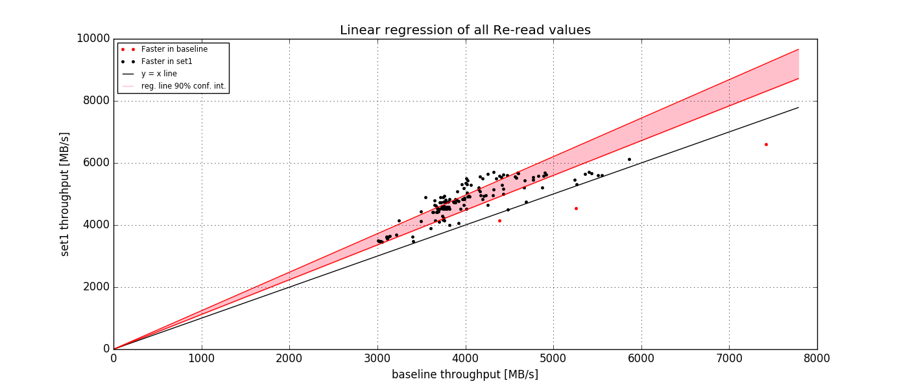
| Regression line |
|---|
| slope | 1.18038 |
| std. error | 0.03651 |
| ci. max 90% | 1.11994 |
| ci. min. 90% | 1.24082 |
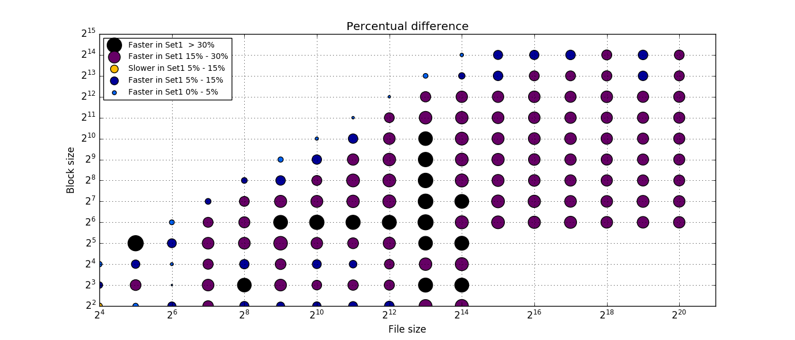
Back on top
Random read
| Random read |
File size [kB] |
4 |
8 |
16 |
32 |
64 |
128 |
256 |
512 |
1024 |
2048 |
4096 |
8192 |
16384 |
32768 |
65536 |
131072 |
262144 |
524288 |
1048576 |
|---|
| baseline | first quartile |
974.91 |
1949.81 |
2539.59 |
3116.95 |
3650.74 |
4008.14 |
4164.23 |
4334.75 |
4630.47 |
4796.76 |
4763.82 |
4585.95 |
4164.68 |
4232.15 |
4264.41 |
4310.18 |
4305.49 |
4340.04 |
4361.83 |
| median |
974.91 |
1949.81 |
2641.97 |
3466.99 |
3923.98 |
4235.87 |
4543.11 |
4714.76 |
5000.33 |
5077.2 |
5202.55 |
4984.49 |
4466.54 |
4426.59 |
4415.87 |
4458.51 |
4467.88 |
4477.36 |
4484.6 |
| third quartile |
974.91 |
1949.81 |
3077.68 |
3466.99 |
4173.89 |
4606.87 |
4859.31 |
5095.68 |
5153.94 |
5411.84 |
5346.81 |
5134.93 |
4572.75 |
4473.65 |
4495.97 |
4506.57 |
4511.96 |
4525.36 |
4539.35 |
| mean val. |
974.91 |
1966.01 |
2675.19 |
3305.21 |
3895.23 |
4229.2 |
4432.09 |
4673.05 |
4840.57 |
5002.04 |
5004.07 |
4805.32 |
4280.18 |
4232.38 |
4237.29 |
4269.05 |
4279.45 |
4289.99 |
4327.12 |
| standard dev. |
0.0 |
251.26 |
384.2 |
353.29 |
405.87 |
421.94 |
521.48 |
556.39 |
516.72 |
488.8 |
473.1 |
462.63 |
441.83 |
408.5 |
412.97 |
426.59 |
426.59 |
425.41 |
394.06 |
| ci. min. 90% |
974.91 |
1820.36 |
2500.47 |
3168.61 |
3756.35 |
4098.31 |
4283.04 |
4524.83 |
4711.14 |
4886.15 |
4897.3 |
4705.51 |
4188.72 |
4130.06 |
4133.85 |
4162.2 |
4172.6 |
4183.44 |
4228.42 |
| ci. max. 90% |
974.91 |
2111.66 |
2849.92 |
3441.81 |
4034.11 |
4360.1 |
4581.14 |
4821.27 |
4969.99 |
5117.94 |
5110.83 |
4905.13 |
4371.65 |
4334.7 |
4340.73 |
4375.9 |
4386.3 |
4396.54 |
4425.82 |
| geom. mean |
974.91 |
1952.03 |
2648.48 |
3286.88 |
3874.2 |
4208.12 |
4400.91 |
4638.85 |
4811.36 |
4976.5 |
4980.15 |
4781.75 |
4256.0 |
4211.46 |
4215.87 |
4246.33 |
4256.79 |
4267.53 |
4308.03 |
| minimum |
974.91 |
1502.73 |
1938.61 |
2631.67 |
3128.0 |
3365.01 |
3521.01 |
3598.37 |
3663.77 |
3697.37 |
3742.57 |
3827.44 |
3378.28 |
3367.67 |
3390.93 |
3398.29 |
3426.76 |
3458.34 |
3450.38 |
| maximum |
974.91 |
2558.86 |
3149.91 |
3995.4 |
4457.8 |
4818.57 |
5119.86 |
5507.14 |
5586.4 |
5574.54 |
5555.73 |
5311.93 |
4852.83 |
4681.66 |
4649.46 |
4696.92 |
4680.76 |
4704.58 |
4705.45 |
| set1 | first quartile |
1279.43 |
2558.86 |
3149.91 |
3774.66 |
4457.8 |
5002.48 |
5170.85 |
5155.17 |
5257.3 |
5330.99 |
5266.26 |
4995.41 |
4392.0 |
4321.41 |
4330.73 |
4344.25 |
4369.19 |
4393.6 |
4422.81 |
| median |
1279.43 |
2775.61 |
3899.63 |
4397.55 |
5159.74 |
5415.88 |
5553.73 |
5492.72 |
5586.4 |
5519.54 |
5531.91 |
5381.39 |
4704.51 |
4510.94 |
4493.41 |
4504.03 |
4518.19 |
4513.15 |
4519.23 |
| third quartile |
1860.61 |
3721.23 |
3899.63 |
4397.55 |
5263.33 |
5710.84 |
5704.81 |
5686.33 |
5677.14 |
5633.51 |
5614.29 |
5533.83 |
4826.31 |
4584.59 |
4566.18 |
4544.83 |
4554.43 |
4570.61 |
4570.9 |
| mean val. |
1511.9 |
3162.5 |
3706.69 |
4230.97 |
5001.44 |
5216.52 |
5312.0 |
5305.39 |
5363.69 |
5346.06 |
5349.83 |
5158.57 |
4479.18 |
4340.32 |
4315.14 |
4316.05 |
4324.88 |
4327.41 |
4337.42 |
| standard dev. |
318.33 |
709.12 |
602.63 |
695.27 |
874.23 |
701.93 |
609.14 |
597.4 |
581.1 |
526.9 |
491.33 |
594.15 |
557.42 |
443.09 |
428.37 |
426.89 |
426.42 |
433.25 |
421.84 |
| ci. min. 90% |
1208.41 |
2751.44 |
3432.63 |
3962.14 |
4702.3 |
4998.77 |
5137.9 |
5146.24 |
5218.14 |
5221.13 |
5238.96 |
5030.39 |
4363.78 |
4229.34 |
4207.84 |
4209.13 |
4218.07 |
4218.89 |
4231.76 |
| ci. max. 90% |
1815.39 |
3573.56 |
3980.75 |
4499.79 |
5300.58 |
5434.27 |
5486.1 |
5464.54 |
5509.24 |
5470.99 |
5460.71 |
5286.75 |
4594.57 |
4451.3 |
4422.43 |
4422.98 |
4431.68 |
4435.93 |
4443.08 |
| geom. mean |
1486.18 |
3094.82 |
3660.38 |
4176.13 |
4925.32 |
5166.33 |
5273.51 |
5268.6 |
5327.72 |
5316.57 |
5324.17 |
5121.43 |
4441.36 |
4316.24 |
4292.51 |
4293.54 |
4302.46 |
4304.22 |
4315.51 |
| minimum |
1279.43 |
2558.86 |
2539.59 |
3135.27 |
3650.74 |
3777.14 |
3915.44 |
3936.05 |
3758.99 |
3844.8 |
3921.92 |
3873.84 |
3007.64 |
3423.94 |
3429.44 |
3452.93 |
3483.46 |
3479.21 |
3475.12 |
| maximum |
1860.61 |
4197.96 |
5117.72 |
5283.95 |
6270.53 |
6255.99 |
5964.4 |
5961.11 |
5993.53 |
5916.61 |
5874.77 |
5907.67 |
5128.37 |
4818.48 |
4751.67 |
4727.61 |
4720.1 |
4702.91 |
4717.37 |
| ttest equality |
DIFF |
DIFF |
DIFF |
DIFF |
DIFF |
DIFF |
DIFF |
DIFF |
DIFF |
DIFF |
DIFF |
DIFF |
DIFF |
SAME |
SAME |
SAME |
SAME |
SAME |
SAME |
| baseline set1 difference |
31.24 % |
42.35 % |
47.6 % |
26.84 % |
31.49 % |
27.86 % |
22.25 % |
16.5 % |
11.72 % |
8.71 % |
6.33 % |
7.96 % |
5.33 % |
1.91 % |
1.76 % |
1.02 % |
1.13 % |
0.8 % |
0.77 % |
| ttest p-value |
0.0054 |
0.0001 |
0.0 |
0.0 |
0.0 |
0.0 |
0.0 |
0.0 |
0.0 |
0.001 |
0.0003 |
0.0004 |
0.0258 |
0.2328 |
0.3825 |
0.6026 |
0.6146 |
0.6803 |
0.905 |
| Random read |
Block size [kB] |
4 |
8 |
16 |
32 |
64 |
128 |
256 |
512 |
1024 |
2048 |
4096 |
8192 |
16384 |
|---|
| baseline | first quartile |
2800.34 |
3495.0 |
3895.04 |
4340.56 |
4622.23 |
4609.25 |
4431.68 |
4467.17 |
4490.16 |
4481.5 |
4292.0 |
3567.18 |
3427.36 |
| median |
3568.94 |
4318.94 |
4272.03 |
4637.87 |
4682.85 |
4673.28 |
4469.44 |
4505.82 |
4522.95 |
4504.02 |
4331.87 |
3577.83 |
3450.38 |
| third quartile |
3697.37 |
4615.72 |
4528.02 |
4777.78 |
4950.73 |
5085.17 |
5155.17 |
5380.7 |
5261.15 |
4933.0 |
4363.93 |
3614.24 |
3462.74 |
| mean val. |
3149.81 |
4024.75 |
4140.63 |
4538.49 |
4754.38 |
4820.73 |
4757.13 |
4842.4 |
4812.53 |
4721.82 |
4411.98 |
3637.67 |
3452.68 |
| standard dev. |
892.74 |
866.54 |
581.95 |
410.29 |
244.55 |
266.32 |
383.09 |
459.74 |
436.59 |
385.57 |
289.68 |
139.37 |
54.79 |
| ci. min. 90% |
2965.0 |
3837.81 |
4009.31 |
4441.21 |
4707.34 |
4767.66 |
4677.83 |
4743.21 |
4714.01 |
4630.4 |
4339.42 |
3600.55 |
3437.02 |
| ci. max. 90% |
3334.62 |
4211.7 |
4271.95 |
4635.77 |
4801.41 |
4873.8 |
4836.43 |
4941.58 |
4911.05 |
4813.24 |
4484.53 |
3674.8 |
3468.34 |
| geom. mean |
2964.29 |
3910.39 |
4096.58 |
4518.87 |
4748.1 |
4813.58 |
4742.06 |
4821.44 |
4793.78 |
4707.26 |
4403.45 |
3635.17 |
3452.27 |
| minimum |
974.91 |
1949.81 |
2641.97 |
3466.99 |
3843.67 |
4430.83 |
4020.53 |
4232.15 |
4325.22 |
4381.79 |
4051.78 |
3485.85 |
3367.67 |
| maximum |
4130.68 |
5207.71 |
5115.61 |
5280.17 |
5428.1 |
5311.93 |
5406.38 |
5570.84 |
5586.4 |
5523.16 |
5311.25 |
3991.82 |
3633.59 |
| set1 | first quartile |
3149.91 |
4442.74 |
4892.81 |
5283.95 |
4712.09 |
4679.39 |
4487.28 |
4515.35 |
4543.08 |
4536.86 |
4369.19 |
3608.53 |
3468.56 |
| median |
3777.14 |
5002.48 |
5263.33 |
5553.73 |
5689.5 |
5013.06 |
4716.74 |
4625.96 |
4576.62 |
4568.39 |
4425.89 |
3621.44 |
3482.86 |
| third quartile |
3929.27 |
5121.81 |
5327.2 |
5649.55 |
5905.59 |
5709.33 |
5492.72 |
5542.13 |
5492.8 |
5245.5 |
4458.21 |
3700.53 |
3494.55 |
| mean val. |
3469.64 |
4712.07 |
5062.7 |
5429.0 |
5374.25 |
5192.26 |
4965.07 |
4953.37 |
4925.76 |
4841.62 |
4544.03 |
3677.12 |
3477.87 |
| standard dev. |
709.91 |
541.35 |
442.67 |
315.33 |
600.16 |
515.53 |
497.3 |
499.83 |
480.59 |
432.22 |
307.47 |
184.59 |
28.68 |
| ci. min. 90% |
3322.68 |
4595.28 |
4962.81 |
5354.24 |
5258.81 |
5089.53 |
4862.12 |
4845.54 |
4817.31 |
4739.14 |
4467.02 |
3627.94 |
3469.67 |
| ci. max. 90% |
3616.6 |
4828.86 |
5162.59 |
5503.77 |
5489.68 |
5294.99 |
5068.02 |
5061.2 |
5034.21 |
4944.1 |
4621.04 |
3726.29 |
3486.07 |
| geom. mean |
3366.39 |
4677.63 |
5041.74 |
5419.39 |
5340.93 |
5167.0 |
4940.72 |
4929.1 |
4903.48 |
4823.64 |
4534.58 |
3672.55 |
3477.76 |
| minimum |
1279.43 |
2775.61 |
3899.63 |
4397.55 |
4663.71 |
4504.03 |
4410.72 |
4448.73 |
4406.97 |
4472.08 |
4312.44 |
3007.64 |
3379.13 |
| maximum |
4018.28 |
5221.84 |
5472.41 |
5748.68 |
6270.53 |
5971.0 |
5704.81 |
5634.45 |
5677.14 |
5664.89 |
5414.09 |
4096.6 |
3538.22 |
| ttest equality |
DIFF |
DIFF |
DIFF |
DIFF |
DIFF |
DIFF |
DIFF |
SAME |
SAME |
SAME |
DIFF |
SAME |
DIFF |
| baseline set1 difference |
5.83 % |
15.83 % |
23.2 % |
19.75 % |
21.5 % |
7.27 % |
5.53 % |
2.67 % |
1.19 % |
1.43 % |
2.17 % |
1.22 % |
0.94 % |
| ttest p-value |
0.0255 |
0.0 |
0.0 |
0.0 |
0.0 |
0.0 |
0.0086 |
0.2081 |
0.1986 |
0.1468 |
0.0389 |
0.2841 |
0.0187 |
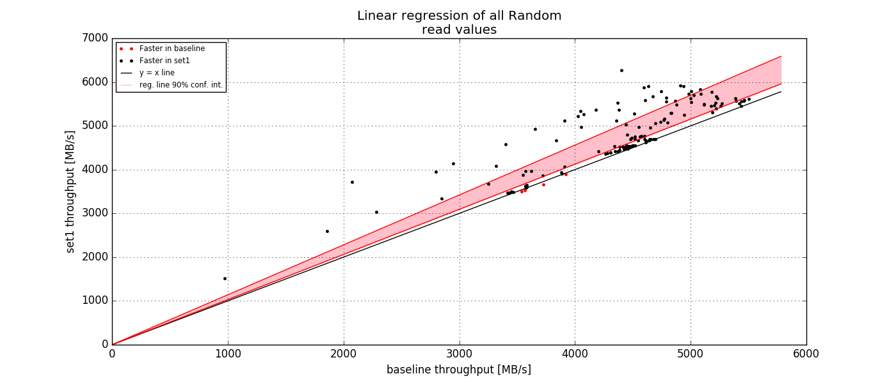
| Regression line |
|---|
| slope | 1.08557 |
| std. error | 0.03293 |
| ci. max 90% | 1.03105 |
| ci. min. 90% | 1.14009 |
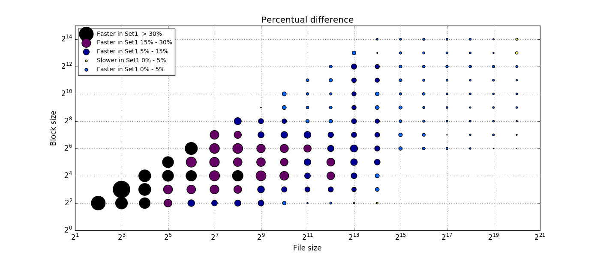
Back on top
Random write
| Random write |
File size [kB] |
4 |
8 |
16 |
32 |
64 |
128 |
256 |
512 |
1024 |
2048 |
4096 |
8192 |
16384 |
32768 |
65536 |
131072 |
262144 |
524288 |
1048576 |
|---|
| baseline | first quartile |
10.88 |
16.15 |
20.02 |
26.31 |
30.53 |
37.47 |
39.03 |
61.01 |
51.39 |
66.61 |
46.03 |
39.04 |
38.13 |
37.75 |
37.48 |
37.37 |
37.29 |
37.23 |
37.01 |
| median |
10.95 |
21.69 |
31.88 |
42.61 |
70.23 |
92.84 |
125.75 |
168.71 |
214.5 |
68.89 |
47.66 |
39.72 |
38.45 |
37.8 |
37.52 |
37.39 |
37.32 |
37.29 |
37.26 |
| third quartile |
15.27 |
32.7 |
62.01 |
75.55 |
124.78 |
193.53 |
362.9 |
386.61 |
434.02 |
72.29 |
48.47 |
40.22 |
38.66 |
37.82 |
37.57 |
37.42 |
37.33 |
37.29 |
37.27 |
| mean val. |
13.16 |
24.12 |
39.18 |
50.56 |
94.29 |
133.18 |
184.45 |
223.18 |
248.07 |
61.47 |
43.59 |
37.84 |
36.68 |
37.49 |
37.38 |
37.31 |
36.73 |
37.03 |
36.61 |
| standard dev. |
3.27 |
9.69 |
22.51 |
31.93 |
80.02 |
118.88 |
166.93 |
187.33 |
193.16 |
19.62 |
9.81 |
6.39 |
5.82 |
1.49 |
1.0 |
0.42 |
2.11 |
0.64 |
2.42 |
| ci. min. 90% |
10.04 |
18.5 |
28.94 |
38.22 |
66.9 |
96.3 |
136.74 |
173.28 |
199.69 |
56.82 |
41.38 |
36.46 |
35.48 |
37.12 |
37.13 |
37.21 |
36.2 |
36.87 |
36.0 |
| ci. max. 90% |
16.28 |
29.74 |
49.41 |
62.91 |
121.67 |
170.06 |
232.16 |
273.09 |
296.45 |
66.12 |
45.81 |
39.21 |
37.89 |
37.87 |
37.63 |
37.42 |
37.26 |
37.19 |
37.22 |
| geom. mean |
12.86 |
22.31 |
33.43 |
41.26 |
64.21 |
83.85 |
108.6 |
132.7 |
148.82 |
56.41 |
41.95 |
37.02 |
35.99 |
37.46 |
37.37 |
37.31 |
36.65 |
37.03 |
36.51 |
| minimum |
10.79 |
11.72 |
14.18 |
14.47 |
15.42 |
15.84 |
15.33 |
16.75 |
16.88 |
17.5 |
17.02 |
16.83 |
16.59 |
30.67 |
30.82 |
35.32 |
26.39 |
34.08 |
23.21 |
| maximum |
17.91 |
36.5 |
81.84 |
118.42 |
318.99 |
408.7 |
532.05 |
546.45 |
606.83 |
77.75 |
49.9 |
42.2 |
39.53 |
38.08 |
37.74 |
37.52 |
37.39 |
37.32 |
37.29 |
| set1 | first quartile |
568.78 |
804.55 |
1043.47 |
1544.45 |
1888.57 |
2010.26 |
2138.8 |
2531.88 |
2625.04 |
2689.69 |
2694.58 |
2666.21 |
2274.66 |
2636.8 |
2655.84 |
2654.77 |
2659.44 |
2650.5 |
2865.32 |
| median |
634.9 |
918.03 |
1430.74 |
1857.08 |
2323.85 |
2535.41 |
3085.81 |
3154.56 |
3310.93 |
3469.51 |
3475.12 |
3214.87 |
2778.74 |
2824.34 |
2847.25 |
2853.0 |
2863.66 |
2862.53 |
3004.96 |
| third quartile |
634.9 |
969.3 |
1549.32 |
2122.43 |
2855.42 |
3181.6 |
3406.76 |
3450.37 |
3495.82 |
3542.78 |
3524.03 |
3428.98 |
2924.03 |
2890.95 |
2901.45 |
2912.27 |
2912.3 |
2920.06 |
3152.06 |
| mean val. |
609.75 |
904.32 |
1352.0 |
1830.77 |
2265.87 |
2504.45 |
2753.64 |
2883.88 |
2973.84 |
3071.24 |
3096.31 |
2965.57 |
2530.05 |
2755.94 |
2772.15 |
2779.83 |
2784.7 |
2787.38 |
3075.39 |
| standard dev. |
47.76 |
108.57 |
262.83 |
451.39 |
628.54 |
712.52 |
748.92 |
737.95 |
717.78 |
715.56 |
690.13 |
641.65 |
533.36 |
162.24 |
166.17 |
170.54 |
170.92 |
174.76 |
336.31 |
| ci. min. 90% |
564.21 |
841.39 |
1232.47 |
1656.24 |
2050.8 |
2283.42 |
2539.58 |
2687.29 |
2794.06 |
2901.58 |
2940.57 |
2827.15 |
2419.64 |
2715.3 |
2730.53 |
2737.12 |
2741.89 |
2743.6 |
2991.16 |
| ci. max. 90% |
655.29 |
967.26 |
1471.53 |
2005.29 |
2480.95 |
2725.49 |
2967.69 |
3080.47 |
3153.63 |
3240.9 |
3252.05 |
3104.0 |
2640.47 |
2796.57 |
2813.77 |
2822.55 |
2827.51 |
2831.15 |
3159.63 |
| geom. mean |
608.23 |
898.49 |
1327.21 |
1774.34 |
2172.95 |
2391.1 |
2631.41 |
2766.78 |
2863.92 |
2962.98 |
2994.84 |
2876.75 |
2457.73 |
2751.11 |
2767.11 |
2774.54 |
2779.4 |
2781.84 |
3058.66 |
| minimum |
549.69 |
765.5 |
980.99 |
1161.93 |
1298.99 |
1237.09 |
1282.18 |
1362.84 |
1402.4 |
1421.36 |
1403.03 |
1352.96 |
1154.41 |
2424.99 |
2440.79 |
2449.86 |
2465.35 |
2479.26 |
2627.01 |
| maximum |
660.49 |
1099.39 |
1733.5 |
2579.87 |
3128.0 |
3386.75 |
3521.01 |
3598.37 |
3676.62 |
3690.86 |
3663.3 |
3587.25 |
2997.43 |
2940.09 |
2955.59 |
2955.45 |
2958.86 |
2961.81 |
4008.47 |
| ttest equality |
DIFF |
DIFF |
DIFF |
DIFF |
DIFF |
DIFF |
DIFF |
DIFF |
DIFF |
DIFF |
DIFF |
DIFF |
DIFF |
DIFF |
DIFF |
DIFF |
DIFF |
DIFF |
DIFF |
| baseline set1 difference |
5700.64 % |
4133.35 % |
4388.18 % |
4257.93 % |
3209.08 % |
2630.91 % |
2354.0 % |
1769.83 % |
1443.56 % |
4936.48 % |
7191.46 % |
7994.79 % |
7126.31 % |
7372.61 % |
7487.93 % |
7531.04 % |
7574.01 % |
7577.39 % |
7964.04 % |
| ttest p-value |
0.0 |
0.0 |
0.0 |
0.0 |
0.0 |
0.0 |
0.0 |
0.0 |
0.0 |
0.0 |
0.0 |
0.0 |
0.0 |
0.0 |
0.0 |
0.0 |
0.0 |
0.0 |
0.0 |
| Random write |
Block size [kB] |
4 |
8 |
16 |
32 |
64 |
128 |
256 |
512 |
1024 |
2048 |
4096 |
8192 |
16384 |
|---|
| baseline | first quartile |
16.31 |
31.11 |
47.97 |
47.91 |
37.35 |
37.39 |
37.37 |
37.37 |
37.32 |
37.29 |
37.31 |
37.29 |
37.3 |
| median |
17.08 |
36.52 |
63.52 |
102.01 |
39.75 |
39.27 |
38.55 |
38.16 |
37.79 |
37.58 |
37.61 |
37.47 |
37.42 |
| third quartile |
17.75 |
38.41 |
69.37 |
122.18 |
193.81 |
319.59 |
74.91 |
54.56 |
46.98 |
40.18 |
38.79 |
37.95 |
37.78 |
| mean val. |
16.72 |
34.57 |
59.42 |
89.36 |
97.74 |
134.45 |
136.51 |
116.15 |
87.18 |
41.91 |
38.86 |
37.8 |
37.55 |
| standard dev. |
1.85 |
5.35 |
13.65 |
36.72 |
82.37 |
148.16 |
174.55 |
166.97 |
145.43 |
11.09 |
2.98 |
0.85 |
0.71 |
| ci. min. 90% |
16.34 |
33.41 |
56.34 |
80.65 |
81.89 |
104.92 |
100.37 |
80.12 |
54.36 |
39.28 |
38.12 |
37.57 |
37.34 |
| ci. max. 90% |
17.11 |
35.72 |
62.5 |
98.06 |
113.58 |
163.97 |
172.64 |
152.17 |
120.0 |
44.54 |
39.61 |
38.02 |
37.75 |
| geom. mean |
16.61 |
34.12 |
57.78 |
80.63 |
69.67 |
77.1 |
71.77 |
62.46 |
51.73 |
40.82 |
38.76 |
37.79 |
37.54 |
| minimum |
10.79 |
22.25 |
37.67 |
38.07 |
23.21 |
36.34 |
34.08 |
36.29 |
28.7 |
28.03 |
36.33 |
36.28 |
34.94 |
| maximum |
21.06 |
44.11 |
92.05 |
141.25 |
318.99 |
461.74 |
541.23 |
546.45 |
606.83 |
75.05 |
47.84 |
39.83 |
39.35 |
| set1 | first quartile |
1161.93 |
1728.29 |
2148.22 |
2766.01 |
2668.31 |
2828.32 |
2860.03 |
2903.25 |
2941.54 |
2944.37 |
2876.04 |
2534.12 |
2459.65 |
| median |
1331.99 |
2039.5 |
2559.93 |
3085.81 |
3086.76 |
2936.0 |
3004.96 |
2963.74 |
2954.74 |
2955.52 |
2905.15 |
2546.13 |
2470.34 |
| third quartile |
1403.03 |
2132.48 |
2658.64 |
3186.27 |
3438.02 |
3539.85 |
3483.92 |
3450.37 |
3457.32 |
3331.35 |
3059.36 |
2605.64 |
2483.21 |
| mean val. |
1223.78 |
1874.85 |
2395.74 |
2959.87 |
3061.64 |
3163.28 |
3173.66 |
3165.33 |
3162.97 |
3094.82 |
2988.87 |
2628.0 |
2519.51 |
| standard dev. |
252.58 |
354.88 |
340.82 |
294.6 |
367.06 |
365.15 |
323.67 |
297.42 |
282.13 |
243.61 |
185.98 |
241.83 |
167.11 |
| ci. min. 90% |
1171.5 |
1798.29 |
2318.83 |
2890.02 |
2991.04 |
3090.52 |
3106.65 |
3101.16 |
3099.3 |
3037.06 |
2942.29 |
2563.57 |
2471.75 |
| ci. max. 90% |
1276.07 |
1951.41 |
2472.65 |
3029.72 |
3132.24 |
3236.04 |
3240.67 |
3229.49 |
3226.63 |
3152.58 |
3035.45 |
2692.42 |
2567.28 |
| geom. mean |
1190.71 |
1833.35 |
2368.73 |
2944.39 |
3039.96 |
3142.65 |
3157.54 |
3151.96 |
3151.04 |
3085.79 |
2983.52 |
2618.53 |
2514.63 |
| minimum |
549.69 |
969.3 |
1531.01 |
2228.9 |
2631.11 |
2498.92 |
2799.89 |
2852.56 |
2898.57 |
2687.27 |
2821.86 |
2191.18 |
2274.66 |
| maximum |
1452.62 |
2201.96 |
2709.67 |
3274.49 |
3628.59 |
3690.86 |
3852.52 |
4008.47 |
3931.99 |
3542.63 |
3421.96 |
3522.51 |
3134.24 |
| ttest equality |
DIFF |
DIFF |
DIFF |
DIFF |
DIFF |
DIFF |
DIFF |
DIFF |
DIFF |
DIFF |
DIFF |
DIFF |
DIFF |
| baseline set1 difference |
7698.07 % |
5483.86 % |
3930.39 % |
2925.06 % |
7664.85 % |
7376.63 % |
7695.4 % |
7665.69 % |
7719.63 % |
7764.59 % |
7624.94 % |
6694.72 % |
6502.02 % |
| ttest p-value |
0.0 |
0.0 |
0.0 |
0.0 |
0.0 |
0.0 |
0.0 |
0.0 |
0.0 |
0.0 |
0.0 |
0.0 |
0.0 |
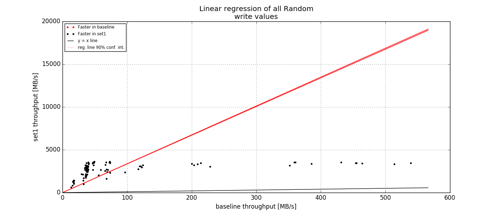
| Regression line |
|---|
| slope | 33.63007 |
| std. error | 0.07859 |
| ci. max 90% | 33.49995 |
| ci. min. 90% | 33.76018 |
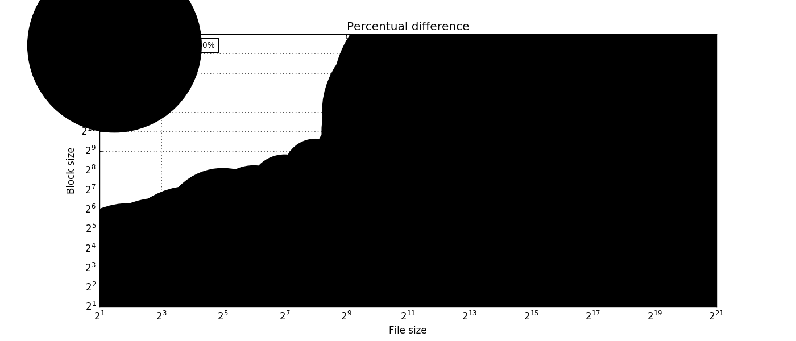
Back on top
Backwards read
| Backwards read |
File size [kB] |
4 |
8 |
16 |
32 |
64 |
128 |
256 |
512 |
1024 |
2048 |
4096 |
8192 |
16384 |
32768 |
65536 |
131072 |
262144 |
524288 |
1048576 |
|---|
| baseline | first quartile |
4.1 |
3.45 |
3.64 |
5.06 |
4.52 |
3.83 |
5.57 |
6.28 |
6.68 |
7.87 |
6.77 |
11.14 |
13.25 |
51.95 |
51.85 |
51.61 |
51.5 |
51.65 |
51.45 |
| median |
4.29 |
5.57 |
6.22 |
8.2 |
8.96 |
13.55 |
13.86 |
24.79 |
25.8 |
42.34 |
49.83 |
51.33 |
52.9 |
71.89 |
71.37 |
71.1 |
71.31 |
71.26 |
70.79 |
| third quartile |
4.31 |
7.73 |
14.47 |
15.78 |
19.26 |
28.55 |
54.55 |
58.94 |
72.34 |
69.98 |
76.79 |
80.6 |
90.46 |
99.98 |
98.8 |
98.19 |
97.93 |
97.79 |
97.62 |
| mean val. |
4.24 |
5.74 |
8.23 |
11.68 |
15.47 |
19.58 |
27.28 |
34.45 |
40.85 |
45.0 |
47.11 |
50.94 |
54.74 |
75.1 |
74.4 |
73.57 |
74.17 |
74.14 |
74.03 |
| standard dev. |
0.15 |
2.53 |
5.45 |
9.59 |
13.97 |
19.95 |
27.0 |
32.12 |
35.63 |
37.21 |
38.4 |
39.44 |
40.15 |
27.45 |
27.24 |
26.42 |
26.55 |
26.48 |
26.42 |
| ci. min. 90% |
4.1 |
4.28 |
5.75 |
7.97 |
10.69 |
13.39 |
19.56 |
25.89 |
31.93 |
36.17 |
38.44 |
42.43 |
46.43 |
68.23 |
67.57 |
66.95 |
67.52 |
67.51 |
67.41 |
| ci. max. 90% |
4.39 |
7.21 |
10.71 |
15.39 |
20.25 |
25.77 |
35.0 |
43.0 |
49.78 |
53.82 |
55.77 |
59.45 |
63.05 |
81.98 |
81.22 |
80.19 |
80.82 |
80.77 |
80.65 |
| geom. mean |
4.24 |
5.23 |
6.67 |
8.39 |
9.94 |
10.85 |
14.16 |
17.72 |
21.28 |
24.13 |
25.08 |
27.36 |
30.36 |
69.1 |
68.29 |
67.79 |
68.4 |
68.4 |
68.34 |
| minimum |
4.08 |
3.13 |
2.92 |
2.56 |
2.12 |
1.56 |
1.57 |
1.54 |
1.57 |
1.55 |
1.6 |
1.58 |
1.55 |
25.51 |
24.36 |
24.47 |
24.89 |
24.67 |
25.32 |
| maximum |
4.43 |
9.41 |
16.78 |
28.67 |
41.98 |
59.38 |
78.39 |
92.23 |
100.9 |
106.17 |
108.61 |
110.01 |
110.84 |
110.73 |
109.29 |
108.56 |
108.23 |
108.06 |
107.98 |
| set1 | first quartile |
382.75 |
597.89 |
1043.47 |
1707.39 |
2225.22 |
2928.23 |
3268.7 |
3617.02 |
3786.14 |
4337.88 |
4373.29 |
4437.41 |
4363.16 |
4281.57 |
4295.87 |
4312.22 |
4333.4 |
4394.93 |
4392.85 |
| median |
382.75 |
597.89 |
1114.45 |
1729.05 |
2409.29 |
3016.92 |
3568.94 |
3966.73 |
4272.03 |
4480.37 |
4510.24 |
4587.19 |
4547.96 |
4516.56 |
4509.26 |
4502.45 |
4503.56 |
4526.05 |
4533.92 |
| third quartile |
391.91 |
657.92 |
1164.76 |
1770.47 |
2501.24 |
3349.12 |
3915.44 |
4272.88 |
4506.1 |
4583.82 |
4600.52 |
4653.35 |
4636.57 |
4564.95 |
4555.17 |
4558.57 |
4563.85 |
4558.61 |
4570.8 |
| mean val. |
381.4 |
633.39 |
1107.74 |
1729.49 |
2369.57 |
3066.39 |
3565.09 |
3894.64 |
4142.66 |
4350.0 |
4386.61 |
4458.61 |
4348.2 |
4315.12 |
4313.16 |
4316.85 |
4329.29 |
4337.85 |
4346.06 |
| standard dev. |
14.03 |
49.67 |
92.56 |
93.97 |
260.2 |
322.48 |
458.41 |
437.27 |
409.42 |
375.5 |
345.14 |
328.45 |
465.79 |
447.43 |
449.36 |
432.92 |
438.6 |
448.13 |
448.84 |
| ci. min. 90% |
368.03 |
604.6 |
1065.65 |
1693.15 |
2280.54 |
2966.35 |
3434.06 |
3778.15 |
4040.11 |
4260.97 |
4308.73 |
4387.75 |
4251.77 |
4203.05 |
4200.61 |
4208.41 |
4219.43 |
4225.61 |
4233.64 |
| ci. max. 90% |
394.77 |
662.19 |
1149.84 |
1765.82 |
2458.61 |
3166.43 |
3696.11 |
4011.13 |
4245.21 |
4439.03 |
4464.5 |
4529.47 |
4444.62 |
4427.19 |
4425.71 |
4425.28 |
4439.15 |
4450.1 |
4458.49 |
| geom. mean |
381.19 |
631.71 |
1104.2 |
1727.02 |
2354.8 |
3049.72 |
3533.49 |
3869.16 |
4121.8 |
4332.4 |
4371.99 |
4445.71 |
4321.09 |
4290.53 |
4288.12 |
4293.77 |
4305.65 |
4313.12 |
4321.28 |
| minimum |
357.68 |
597.89 |
966.53 |
1564.0 |
1640.39 |
2452.17 |
2295.45 |
2905.42 |
3334.62 |
3273.21 |
3389.47 |
3592.24 |
3016.56 |
3430.15 |
3226.78 |
3448.93 |
3479.73 |
3467.87 |
3478.85 |
| maximum |
391.91 |
715.37 |
1315.83 |
1851.15 |
2736.2 |
3571.3 |
4164.23 |
4541.2 |
4610.11 |
4705.28 |
4755.71 |
4807.36 |
4869.38 |
4790.44 |
4797.62 |
4778.1 |
4761.02 |
4769.62 |
4777.86 |
| ttest equality |
DIFF |
DIFF |
DIFF |
DIFF |
DIFF |
DIFF |
DIFF |
DIFF |
DIFF |
DIFF |
DIFF |
DIFF |
DIFF |
DIFF |
DIFF |
DIFF |
DIFF |
DIFF |
DIFF |
| baseline set1 difference |
8825.94 % |
10626.05 % |
17817.98 % |
20996.8 % |
26774.81 % |
22162.18 % |
25649.3 % |
15898.17 % |
16457.76 % |
10481.31 % |
8950.53 % |
8837.09 % |
8497.22 % |
6182.37 % |
6218.14 % |
6232.33 % |
6215.33 % |
6251.31 % |
6304.74 % |
| ttest p-value |
0.0 |
0.0 |
0.0 |
0.0 |
0.0 |
0.0 |
0.0 |
0.0 |
0.0 |
0.0 |
0.0 |
0.0 |
0.0 |
0.0 |
0.0 |
0.0 |
0.0 |
0.0 |
0.0 |
| Backwards read |
Block size [kB] |
4 |
8 |
16 |
32 |
64 |
128 |
256 |
512 |
1024 |
2048 |
4096 |
8192 |
16384 |
|---|
| baseline | first quartile |
1.62 |
3.24 |
6.53 |
12.92 |
25.17 |
50.03 |
70.0 |
51.72 |
70.83 |
86.86 |
97.85 |
104.4 |
108.06 |
| median |
1.69 |
3.37 |
6.71 |
13.49 |
25.78 |
51.33 |
70.97 |
52.42 |
71.85 |
87.63 |
98.77 |
105.1 |
108.54 |
| third quartile |
3.4 |
6.16 |
10.38 |
18.98 |
27.14 |
52.4 |
71.58 |
59.29 |
78.86 |
94.65 |
102.39 |
107.34 |
110.39 |
| mean val. |
2.64 |
4.83 |
8.97 |
16.35 |
27.41 |
51.63 |
71.26 |
59.55 |
77.58 |
91.76 |
100.9 |
105.53 |
109.0 |
| standard dev. |
1.35 |
2.32 |
3.78 |
5.43 |
4.41 |
2.71 |
2.18 |
13.39 |
10.75 |
6.99 |
4.06 |
4.93 |
1.16 |
| ci. min. 90% |
2.36 |
4.33 |
8.12 |
15.06 |
26.56 |
51.09 |
70.81 |
56.66 |
75.16 |
90.1 |
99.88 |
104.22 |
108.67 |
| ci. max. 90% |
2.92 |
5.33 |
9.83 |
17.64 |
28.26 |
52.17 |
71.72 |
62.44 |
80.01 |
93.41 |
101.92 |
106.84 |
109.34 |
| geom. mean |
2.36 |
4.41 |
8.35 |
15.63 |
27.12 |
51.57 |
71.23 |
58.33 |
76.93 |
91.51 |
100.82 |
105.4 |
109.0 |
| minimum |
1.54 |
3.06 |
6.04 |
12.07 |
23.99 |
47.33 |
67.47 |
51.04 |
70.5 |
86.56 |
97.51 |
78.2 |
107.29 |
| maximum |
6.27 |
11.85 |
18.07 |
29.42 |
41.98 |
59.38 |
78.39 |
92.23 |
100.9 |
106.17 |
108.61 |
110.01 |
110.84 |
| set1 | first quartile |
1564.0 |
2165.62 |
2366.57 |
3168.64 |
4081.62 |
4386.14 |
4447.84 |
4501.48 |
4520.99 |
4508.14 |
4331.58 |
3596.17 |
3461.44 |
| median |
2905.42 |
3568.94 |
3519.86 |
4162.62 |
4673.82 |
4653.97 |
4499.71 |
4527.4 |
4550.61 |
4537.48 |
4373.99 |
3608.21 |
3477.76 |
| third quartile |
3424.46 |
4297.01 |
4410.8 |
4534.73 |
4749.68 |
4704.75 |
4526.15 |
4561.62 |
4586.62 |
4564.89 |
4416.61 |
3654.27 |
3487.3 |
| mean val. |
2448.98 |
3146.45 |
3276.95 |
3772.77 |
4346.43 |
4463.78 |
4449.29 |
4519.85 |
4530.7 |
4531.52 |
4364.45 |
3640.14 |
3464.18 |
| standard dev. |
1154.5 |
1314.18 |
1141.05 |
965.79 |
615.48 |
413.89 |
168.64 |
95.97 |
144.84 |
90.42 |
119.56 |
156.11 |
49.01 |
| ci. min. 90% |
2209.98 |
2862.93 |
3019.46 |
3543.78 |
4228.05 |
4381.3 |
4414.37 |
4499.14 |
4498.02 |
4510.08 |
4334.5 |
3598.55 |
3450.17 |
| ci. max. 90% |
2687.98 |
3429.97 |
3534.44 |
4001.76 |
4464.81 |
4546.25 |
4484.2 |
4540.55 |
4563.39 |
4552.96 |
4394.4 |
3681.73 |
3478.19 |
| geom. mean |
2023.72 |
2744.4 |
3032.85 |
3621.88 |
4295.06 |
4440.88 |
4445.99 |
4518.83 |
4528.27 |
4530.58 |
4362.73 |
3636.78 |
3463.83 |
| minimum |
357.68 |
597.89 |
1114.45 |
1729.05 |
2600.49 |
2452.17 |
3906.72 |
4229.79 |
3891.0 |
3996.5 |
3703.74 |
3016.56 |
3226.78 |
| maximum |
3698.76 |
4584.69 |
4755.71 |
4779.22 |
4869.38 |
4807.36 |
4700.94 |
4714.15 |
4711.51 |
4656.58 |
4539.53 |
3960.25 |
3501.62 |
| ttest equality |
DIFF |
DIFF |
DIFF |
DIFF |
DIFF |
DIFF |
DIFF |
DIFF |
DIFF |
DIFF |
DIFF |
DIFF |
DIFF |
| baseline set1 difference |
172073.26 % |
105937.95 % |
52334.32 % |
30762.13 % |
18030.15 % |
8967.53 % |
6240.68 % |
8537.12 % |
6233.35 % |
5077.77 % |
4328.66 % |
3333.27 % |
3104.22 % |
| ttest p-value |
0.0 |
0.0 |
0.0 |
0.0 |
0.0 |
0.0 |
0.0 |
0.0 |
0.0 |
0.0 |
0.0 |
0.0 |
0.0 |
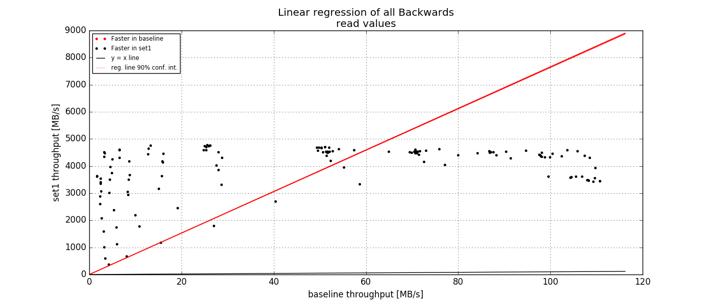
| Regression line |
|---|
| slope | 76.51081 |
| std. error | 0.07738 |
| ci. max 90% | 76.38271 |
| ci. min. 90% | 76.6389 |
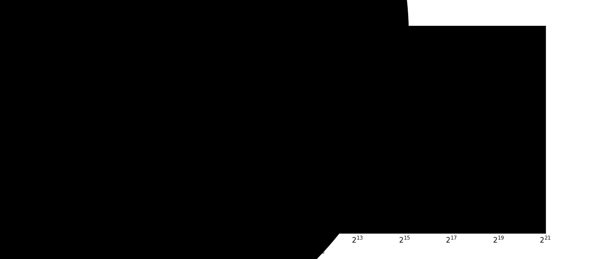
Back on top
Record rewrite
| Record rewrite |
File size [kB] |
4 |
8 |
16 |
32 |
64 |
128 |
256 |
512 |
1024 |
2048 |
4096 |
8192 |
16384 |
32768 |
65536 |
131072 |
262144 |
524288 |
1048576 |
|---|
| baseline | first quartile |
10.73 |
17.78 |
20.78 |
28.46 |
50.16 |
66.13 |
81.02 |
113.79 |
106.76 |
30.47 |
21.03 |
22.94 |
23.22 |
37.7 |
37.46 |
35.42 |
35.33 |
36.24 |
36.22 |
| median |
11.03 |
23.93 |
31.06 |
45.41 |
76.21 |
112.11 |
179.46 |
249.19 |
374.67 |
61.31 |
42.58 |
37.81 |
38.35 |
37.79 |
37.54 |
37.39 |
37.32 |
37.29 |
37.27 |
| third quartile |
16.76 |
36.57 |
58.64 |
72.05 |
149.13 |
204.0 |
377.16 |
463.59 |
511.01 |
71.27 |
47.87 |
40.45 |
39.12 |
38.19 |
37.69 |
37.43 |
37.33 |
37.29 |
37.27 |
| mean val. |
13.6 |
28.3 |
39.88 |
55.34 |
109.89 |
151.01 |
218.54 |
283.86 |
327.8 |
51.53 |
35.33 |
30.96 |
30.12 |
36.28 |
35.82 |
35.65 |
35.45 |
35.43 |
35.42 |
| standard dev. |
3.91 |
15.08 |
24.22 |
35.95 |
79.94 |
115.21 |
154.34 |
193.34 |
197.96 |
23.36 |
15.1 |
12.61 |
11.85 |
3.39 |
3.5 |
3.34 |
3.32 |
3.31 |
3.32 |
| ci. min. 90% |
9.87 |
19.56 |
28.87 |
41.44 |
82.54 |
115.26 |
174.43 |
232.35 |
278.21 |
45.99 |
31.92 |
28.24 |
27.66 |
35.43 |
34.94 |
34.81 |
34.62 |
34.6 |
34.59 |
| ci. max. 90% |
17.33 |
37.04 |
50.9 |
69.24 |
137.24 |
186.75 |
262.66 |
335.36 |
377.38 |
57.07 |
38.74 |
33.68 |
32.57 |
37.13 |
36.69 |
36.48 |
36.28 |
36.26 |
36.25 |
| geom. mean |
13.18 |
24.89 |
33.82 |
46.16 |
85.58 |
116.07 |
163.7 |
208.66 |
240.95 |
43.88 |
30.45 |
26.93 |
26.34 |
36.11 |
35.63 |
35.47 |
35.28 |
35.26 |
35.25 |
| minimum |
10.62 |
11.83 |
15.38 |
17.25 |
31.79 |
38.12 |
37.42 |
42.7 |
31.21 |
10.26 |
6.78 |
5.69 |
5.3 |
27.97 |
27.12 |
27.21 |
27.39 |
27.51 |
27.5 |
| maximum |
18.86 |
57.51 |
81.84 |
154.78 |
268.09 |
412.56 |
523.03 |
602.32 |
608.33 |
77.41 |
50.23 |
42.87 |
39.85 |
38.5 |
37.86 |
37.55 |
37.4 |
37.33 |
37.28 |
| set1 | first quartile |
549.69 |
783.82 |
1114.45 |
1635.28 |
2225.22 |
2547.49 |
2703.94 |
3027.58 |
3077.7 |
3185.37 |
3260.07 |
3099.76 |
2786.47 |
3868.97 |
3873.65 |
3932.89 |
3983.57 |
3933.47 |
3956.45 |
| median |
568.78 |
876.56 |
1430.74 |
1893.68 |
2501.24 |
3208.32 |
3474.34 |
3470.35 |
3676.62 |
3820.37 |
3887.39 |
3938.87 |
3924.54 |
4121.56 |
4153.69 |
4137.71 |
4148.09 |
4147.96 |
4148.96 |
| third quartile |
660.49 |
998.85 |
1567.63 |
2122.43 |
2855.42 |
3470.85 |
3747.71 |
3786.8 |
4029.86 |
4136.3 |
4119.53 |
4122.76 |
4148.46 |
4253.75 |
4243.72 |
4214.69 |
4214.84 |
4284.23 |
4299.87 |
| mean val. |
623.23 |
912.3 |
1365.84 |
1856.1 |
2443.67 |
2913.29 |
3165.97 |
3275.66 |
3456.44 |
3525.78 |
3607.98 |
3596.07 |
3534.15 |
3866.27 |
3890.32 |
3892.97 |
3897.79 |
3904.77 |
4012.68 |
| standard dev. |
102.65 |
143.96 |
219.47 |
376.42 |
562.32 |
695.62 |
746.16 |
785.17 |
809.74 |
814.48 |
780.17 |
807.02 |
857.88 |
647.88 |
634.41 |
629.0 |
637.26 |
636.96 |
849.35 |
| ci. min. 90% |
525.36 |
828.85 |
1266.03 |
1710.56 |
2251.26 |
2697.5 |
2952.71 |
3066.49 |
3253.62 |
3332.67 |
3431.92 |
3421.96 |
3356.55 |
3704.0 |
3731.42 |
3735.42 |
3738.17 |
3745.22 |
3799.94 |
| ci. max. 90% |
721.09 |
995.75 |
1465.65 |
2001.64 |
2636.08 |
3129.08 |
3379.24 |
3484.83 |
3659.26 |
3718.9 |
3784.03 |
3770.17 |
3711.74 |
4028.55 |
4049.23 |
4050.51 |
4057.41 |
4064.31 |
4225.42 |
| geom. mean |
616.96 |
902.33 |
1348.97 |
1816.32 |
2372.04 |
2814.26 |
3058.6 |
3158.85 |
3338.09 |
3405.96 |
3498.52 |
3483.31 |
3409.67 |
3804.6 |
3831.8 |
3835.78 |
3838.82 |
3846.15 |
3927.0 |
| minimum |
549.69 |
783.82 |
1043.47 |
1250.62 |
1449.87 |
1580.11 |
1623.67 |
1567.61 |
1647.53 |
1652.67 |
1631.26 |
1667.07 |
1671.38 |
2535.86 |
2609.16 |
2639.28 |
2642.22 |
2646.17 |
2640.96 |
| maximum |
787.48 |
1137.55 |
1733.5 |
2391.58 |
3128.0 |
3671.34 |
3959.79 |
4204.35 |
4388.24 |
4505.63 |
4513.88 |
4571.57 |
4593.73 |
4591.18 |
4604.63 |
4599.69 |
4612.04 |
4616.48 |
7460.08 |
| ttest equality |
DIFF |
DIFF |
DIFF |
DIFF |
DIFF |
DIFF |
DIFF |
DIFF |
DIFF |
DIFF |
DIFF |
DIFF |
DIFF |
DIFF |
DIFF |
DIFF |
DIFF |
DIFF |
DIFF |
| baseline set1 difference |
5054.68 % |
3563.21 % |
4506.0 % |
4070.12 % |
3182.12 % |
2761.7 % |
1835.96 % |
1292.66 % |
881.31 % |
6130.88 % |
9029.39 % |
10317.65 % |
10132.8 % |
10805.34 % |
10964.11 % |
10967.03 % |
11015.14 % |
11024.98 % |
11032.59 % |
| ttest p-value |
0.0 |
0.0 |
0.0 |
0.0 |
0.0 |
0.0 |
0.0 |
0.0 |
0.0 |
0.0 |
0.0 |
0.0 |
0.0 |
0.0 |
0.0 |
0.0 |
0.0 |
0.0 |
0.0 |
| Record rewrite |
Block size [kB] |
4 |
8 |
16 |
32 |
64 |
128 |
256 |
512 |
1024 |
2048 |
4096 |
8192 |
16384 |
|---|
| baseline | first quartile |
10.39 |
17.43 |
21.03 |
28.44 |
27.79 |
31.83 |
37.53 |
37.36 |
37.35 |
37.32 |
37.32 |
37.3 |
37.29 |
| median |
18.86 |
36.44 |
66.22 |
117.73 |
30.78 |
34.64 |
39.85 |
38.9 |
37.89 |
37.78 |
37.49 |
37.45 |
37.41 |
| third quartile |
41.09 |
70.49 |
106.6 |
154.76 |
225.24 |
353.74 |
71.51 |
55.36 |
47.83 |
40.26 |
38.46 |
38.06 |
37.71 |
| mean val. |
23.51 |
43.46 |
70.55 |
112.22 |
112.3 |
147.23 |
146.57 |
130.15 |
85.02 |
42.19 |
38.78 |
37.93 |
37.56 |
| standard dev. |
15.06 |
28.5 |
47.02 |
81.21 |
121.59 |
179.75 |
192.13 |
197.59 |
136.58 |
10.4 |
2.98 |
1.01 |
0.56 |
| ci. min. 90% |
20.39 |
37.31 |
59.94 |
92.97 |
88.91 |
111.41 |
106.8 |
87.52 |
54.2 |
39.72 |
38.04 |
37.67 |
37.4 |
| ci. max. 90% |
26.62 |
49.61 |
81.17 |
131.48 |
135.68 |
183.05 |
186.34 |
172.78 |
115.85 |
44.65 |
39.53 |
38.2 |
37.72 |
| geom. mean |
18.19 |
33.34 |
53.76 |
80.22 |
63.43 |
72.35 |
74.02 |
64.37 |
52.11 |
41.26 |
38.68 |
37.92 |
37.56 |
| minimum |
5.3 |
9.81 |
16.23 |
23.04 |
27.12 |
31.33 |
37.28 |
34.3 |
35.33 |
36.78 |
36.04 |
36.78 |
36.47 |
| maximum |
46.78 |
96.71 |
180.9 |
277.17 |
425.01 |
608.33 |
552.84 |
602.32 |
561.43 |
74.46 |
47.77 |
40.65 |
39.27 |
| set1 | first quartile |
1250.62 |
2018.74 |
2654.21 |
3402.65 |
4166.35 |
4299.47 |
4090.2 |
3975.96 |
3978.19 |
3986.6 |
3743.49 |
2797.32 |
2594.79 |
| median |
1604.28 |
2662.67 |
3122.57 |
3786.8 |
4320.0 |
4487.88 |
4201.86 |
4073.35 |
4131.57 |
4120.04 |
3902.29 |
2847.12 |
2646.17 |
| third quartile |
1667.07 |
2721.78 |
3208.25 |
3893.91 |
4399.5 |
4579.75 |
4247.34 |
4110.36 |
4144.62 |
4153.07 |
3969.95 |
2884.06 |
2695.94 |
| mean val. |
1425.6 |
2320.83 |
2860.45 |
3536.31 |
4155.09 |
4342.26 |
4101.0 |
4043.82 |
4029.55 |
4024.03 |
3842.29 |
2832.61 |
2627.69 |
| standard dev. |
356.39 |
572.92 |
536.66 |
528.28 |
427.3 |
347.85 |
246.88 |
499.87 |
210.57 |
200.57 |
188.11 |
90.83 |
91.91 |
| ci. min. 90% |
1351.83 |
2197.23 |
2739.34 |
3411.05 |
4072.9 |
4272.94 |
4049.89 |
3935.98 |
3982.03 |
3976.48 |
3795.17 |
2808.41 |
2601.42 |
| ci. max. 90% |
1499.38 |
2444.43 |
2981.55 |
3661.57 |
4237.27 |
4411.57 |
4152.11 |
4151.67 |
4077.07 |
4071.58 |
3889.41 |
2856.81 |
2653.96 |
| geom. mean |
1365.96 |
2228.95 |
2798.61 |
3490.02 |
4130.67 |
4327.12 |
4093.09 |
4021.2 |
4023.77 |
4018.83 |
3837.61 |
2831.08 |
2626.08 |
| minimum |
549.69 |
969.3 |
1567.63 |
2228.9 |
2855.42 |
3365.01 |
3378.11 |
3126.32 |
3345.26 |
3466.64 |
3395.64 |
2377.74 |
2355.29 |
| maximum |
1713.38 |
2776.2 |
3329.83 |
3960.99 |
5183.76 |
4656.96 |
4303.06 |
7460.08 |
4192.88 |
4175.4 |
4071.25 |
2953.12 |
2732.86 |
| ttest equality |
DIFF |
DIFF |
DIFF |
DIFF |
DIFF |
DIFF |
DIFF |
DIFF |
DIFF |
DIFF |
DIFF |
DIFF |
DIFF |
| baseline set1 difference |
8407.42 % |
7207.31 % |
4615.6 % |
3116.58 % |
13934.08 % |
12855.35 % |
10444.56 % |
10372.01 % |
10804.79 % |
10805.97 % |
10308.81 % |
7503.3 % |
6974.33 % |
| ttest p-value |
0.0 |
0.0 |
0.0 |
0.0 |
0.0 |
0.0 |
0.0 |
0.0 |
0.0 |
0.0 |
0.0 |
0.0 |
0.0 |
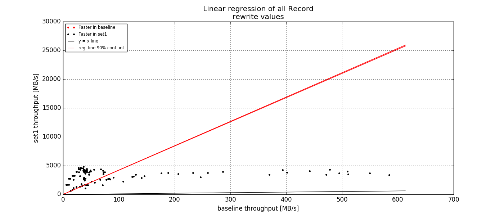
| Regression line |
|---|
| slope | 42.12761 |
| std. error | 0.08311 |
| ci. max 90% | 41.99003 |
| ci. min. 90% | 42.26519 |
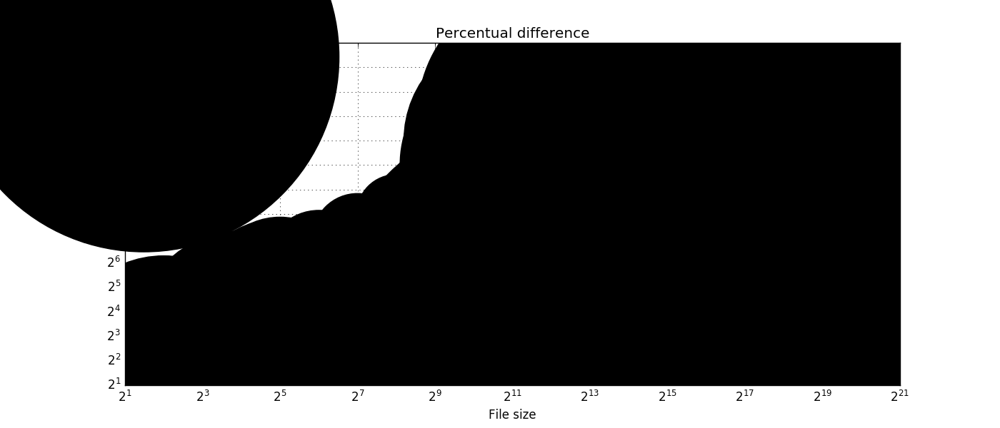
Back on top
Strided Read
| Strided Read |
File size [kB] |
4 |
8 |
16 |
32 |
64 |
128 |
256 |
512 |
1024 |
2048 |
4096 |
8192 |
16384 |
32768 |
65536 |
131072 |
262144 |
524288 |
1048576 |
|---|
| baseline | first quartile |
4.06 |
5.25 |
9.47 |
17.28 |
29.82 |
46.66 |
23.33 |
23.72 |
21.67 |
19.37 |
20.36 |
27.8 |
29.9 |
53.71 |
53.2 |
52.76 |
52.65 |
52.74 |
52.53 |
| median |
4.25 |
6.58 |
9.98 |
17.82 |
30.61 |
48.19 |
78.94 |
91.07 |
98.71 |
88.43 |
68.37 |
65.78 |
55.76 |
76.84 |
78.32 |
78.13 |
77.44 |
77.73 |
76.67 |
| third quartile |
4.84 |
8.1 |
14.89 |
20.44 |
33.16 |
51.38 |
96.56 |
114.49 |
112.84 |
147.76 |
217.59 |
202.84 |
192.24 |
364.98 |
382.71 |
103.35 |
100.55 |
99.1 |
98.37 |
| mean val. |
4.44 |
6.72 |
11.6 |
19.31 |
32.7 |
44.25 |
67.67 |
87.74 |
105.12 |
107.49 |
127.03 |
147.83 |
173.45 |
276.03 |
284.65 |
253.3 |
191.41 |
77.74 |
77.1 |
| standard dev. |
0.46 |
1.66 |
3.53 |
5.94 |
4.79 |
15.85 |
35.52 |
66.69 |
106.82 |
103.21 |
137.81 |
171.23 |
232.05 |
315.71 |
363.31 |
363.42 |
336.77 |
25.33 |
24.36 |
| ci. min. 90% |
4.01 |
5.76 |
10.0 |
17.01 |
31.06 |
39.33 |
57.52 |
69.97 |
78.36 |
83.02 |
95.93 |
110.89 |
125.41 |
196.96 |
193.65 |
162.27 |
107.06 |
71.39 |
71.0 |
| ci. max. 90% |
4.88 |
7.69 |
13.2 |
21.61 |
34.34 |
49.17 |
77.83 |
105.51 |
131.87 |
131.97 |
158.13 |
184.77 |
221.49 |
355.11 |
375.65 |
344.32 |
275.77 |
84.08 |
83.21 |
| geom. mean |
4.43 |
6.54 |
11.11 |
18.4 |
32.4 |
38.92 |
51.35 |
56.6 |
58.66 |
59.68 |
61.18 |
65.65 |
68.09 |
146.71 |
136.4 |
117.16 |
95.48 |
73.39 |
73.03 |
| minimum |
4.05 |
4.88 |
5.83 |
8.74 |
28.18 |
6.48 |
8.96 |
8.49 |
8.57 |
7.0 |
6.01 |
6.14 |
5.38 |
42.27 |
40.08 |
39.7 |
39.9 |
38.83 |
39.3 |
| maximum |
5.02 |
8.99 |
17.29 |
31.41 |
42.89 |
60.79 |
100.36 |
204.17 |
369.84 |
359.5 |
578.03 |
551.77 |
781.21 |
992.07 |
1136.06 |
1119.8 |
1142.39 |
114.62 |
111.2 |
| set1 | first quartile |
484.65 |
866.75 |
1480.87 |
2228.9 |
2985.5 |
3500.26 |
3937.61 |
4181.45 |
4289.51 |
4460.13 |
4525.45 |
4755.05 |
4507.03 |
4534.57 |
4439.53 |
4367.54 |
4360.27 |
4391.95 |
4403.94 |
| median |
484.65 |
866.75 |
1567.63 |
2228.9 |
3128.0 |
3777.14 |
4231.44 |
4541.2 |
4697.89 |
4919.19 |
5064.35 |
5209.41 |
4888.54 |
4660.69 |
4539.3 |
4533.05 |
4523.44 |
4526.89 |
4521.97 |
| third quartile |
484.65 |
969.3 |
1650.56 |
2391.58 |
3128.0 |
4488.55 |
4354.75 |
4733.42 |
5030.31 |
5287.31 |
5323.33 |
5427.28 |
5018.68 |
4825.23 |
4718.68 |
4567.68 |
4556.94 |
4559.58 |
4576.31 |
| mean val. |
487.61 |
913.68 |
1568.03 |
2314.0 |
3153.49 |
3856.25 |
4145.33 |
4484.74 |
4743.37 |
4916.09 |
4951.9 |
4967.09 |
4664.31 |
4565.06 |
4420.42 |
4327.34 |
4314.35 |
4332.97 |
4439.43 |
| standard dev. |
6.61 |
61.38 |
116.2 |
131.76 |
284.54 |
684.65 |
454.24 |
612.94 |
753.96 |
753.31 |
601.49 |
589.61 |
665.43 |
615.42 |
515.03 |
459.46 |
455.22 |
436.83 |
704.09 |
| ci. min. 90% |
481.31 |
878.1 |
1515.19 |
2263.05 |
3056.13 |
3643.86 |
4015.5 |
4321.46 |
4554.52 |
4737.48 |
4816.17 |
4839.89 |
4526.56 |
4410.92 |
4291.42 |
4212.26 |
4200.33 |
4223.56 |
4263.08 |
| ci. max. 90% |
493.9 |
949.26 |
1620.88 |
2364.94 |
3250.86 |
4068.64 |
4275.16 |
4648.03 |
4932.21 |
5094.7 |
5087.63 |
5094.3 |
4802.06 |
4719.21 |
4549.42 |
4442.42 |
4428.37 |
4442.38 |
4615.79 |
| geom. mean |
487.57 |
911.86 |
1564.07 |
2310.6 |
3141.89 |
3795.8 |
4119.47 |
4442.86 |
4684.91 |
4860.47 |
4913.85 |
4929.09 |
4613.01 |
4521.57 |
4388.77 |
4301.04 |
4288.47 |
4309.44 |
4390.66 |
| minimum |
484.65 |
866.75 |
1430.74 |
2228.9 |
2824.65 |
2610.92 |
3208.56 |
3335.13 |
3438.5 |
3502.83 |
3574.33 |
3632.69 |
3118.18 |
3180.91 |
3344.83 |
3333.67 |
3322.17 |
3469.61 |
3474.97 |
| maximum |
499.42 |
998.85 |
1733.5 |
2631.67 |
3702.3 |
5002.48 |
4904.34 |
5748.68 |
6290.14 |
6621.86 |
6221.14 |
5543.62 |
5559.6 |
5537.31 |
5326.23 |
4768.63 |
4731.02 |
4736.66 |
7268.09 |
| ttest equality |
DIFF |
DIFF |
DIFF |
DIFF |
DIFF |
DIFF |
DIFF |
DIFF |
DIFF |
DIFF |
DIFF |
DIFF |
DIFF |
DIFF |
DIFF |
DIFF |
DIFF |
DIFF |
DIFF |
| baseline set1 difference |
11303.56 % |
13082.07 % |
15611.62 % |
12406.61 % |
10120.06 % |
7738.26 % |
5260.63 % |
4886.72 % |
4659.05 % |
5463.02 % |
7307.26 % |
7819.12 % |
8666.68 % |
5965.46 % |
5696.04 % |
5702.09 % |
5740.89 % |
5724.12 % |
5798.12 % |
| ttest p-value |
0.0 |
0.0 |
0.0 |
0.0 |
0.0 |
0.0 |
0.0 |
0.0 |
0.0 |
0.0 |
0.0 |
0.0 |
0.0 |
0.0 |
0.0 |
0.0 |
0.0 |
0.0 |
0.0 |
| Strided Read |
Block size [kB] |
4 |
8 |
16 |
32 |
64 |
128 |
256 |
512 |
1024 |
2048 |
4096 |
8192 |
16384 |
|---|
| baseline | first quartile |
7.2 |
6.74 |
18.73 |
30.58 |
40.53 |
51.42 |
77.05 |
52.85 |
71.24 |
87.89 |
100.47 |
109.34 |
111.19 |
| median |
8.59 |
9.41 |
20.29 |
33.19 |
43.53 |
57.56 |
78.17 |
53.76 |
74.13 |
98.27 |
108.57 |
150.16 |
202.45 |
| third quartile |
10.53 |
17.85 |
30.96 |
48.29 |
59.05 |
76.14 |
91.78 |
111.73 |
217.59 |
286.54 |
338.23 |
438.43 |
678.71 |
| mean val. |
10.96 |
15.56 |
31.16 |
56.35 |
78.45 |
88.95 |
120.91 |
128.41 |
187.2 |
250.86 |
309.97 |
345.33 |
390.49 |
| standard dev. |
6.91 |
12.95 |
23.55 |
48.57 |
85.19 |
79.11 |
105.92 |
142.54 |
214.77 |
283.48 |
339.88 |
346.64 |
364.11 |
| ci. min. 90% |
9.53 |
12.77 |
25.85 |
44.83 |
62.06 |
73.19 |
98.98 |
97.66 |
138.73 |
183.64 |
224.83 |
252.99 |
286.42 |
| ci. max. 90% |
12.39 |
18.35 |
36.48 |
67.86 |
94.84 |
104.72 |
142.83 |
159.16 |
235.66 |
318.07 |
395.1 |
437.68 |
494.56 |
| geom. mean |
9.47 |
12.03 |
25.8 |
44.89 |
58.7 |
72.32 |
99.71 |
89.07 |
124.27 |
162.59 |
197.96 |
227.12 |
261.6 |
| minimum |
4.05 |
5.38 |
8.74 |
25.06 |
38.83 |
49.2 |
70.5 |
52.43 |
70.51 |
86.84 |
98.23 |
105.74 |
108.58 |
| maximum |
33.16 |
53.7 |
99.96 |
204.17 |
369.84 |
359.5 |
578.03 |
551.77 |
781.21 |
992.07 |
1136.06 |
1119.8 |
1142.39 |
| set1 | first quartile |
2228.9 |
3395.97 |
2985.5 |
4231.44 |
4701.37 |
4668.4 |
4483.79 |
4524.76 |
4550.22 |
4542.01 |
4406.34 |
3601.24 |
3397.07 |
| median |
3248.32 |
4238.19 |
4164.23 |
4587.91 |
4737.59 |
4738.81 |
4577.25 |
4576.06 |
4587.17 |
4566.21 |
4478.93 |
3625.88 |
3457.9 |
| third quartile |
3581.85 |
4509.11 |
4647.44 |
4971.99 |
5011.73 |
5524.23 |
5290.99 |
5152.44 |
5182.69 |
5304.16 |
4982.91 |
3765.67 |
3481.56 |
| mean val. |
2766.87 |
3681.12 |
3801.18 |
4284.15 |
4690.79 |
5051.99 |
4861.27 |
4833.1 |
4822.81 |
4858.84 |
4676.41 |
3675.7 |
3431.65 |
| standard dev. |
1075.46 |
1262.19 |
1067.67 |
929.87 |
681.23 |
698.98 |
507.98 |
440.41 |
382.68 |
404.44 |
316.74 |
151.32 |
68.68 |
| ci. min. 90% |
2544.24 |
3408.82 |
3560.25 |
4063.67 |
4559.76 |
4912.7 |
4756.11 |
4738.09 |
4736.46 |
4762.94 |
4597.07 |
3635.39 |
3412.02 |
| ci. max. 90% |
2989.51 |
3953.42 |
4042.12 |
4504.62 |
4821.81 |
5191.28 |
4966.43 |
4928.11 |
4909.17 |
4954.73 |
4755.74 |
3716.01 |
3451.28 |
| geom. mean |
2415.66 |
3344.23 |
3609.21 |
4160.11 |
4636.6 |
5005.76 |
4836.42 |
4814.86 |
4808.5 |
4842.85 |
4666.15 |
3672.57 |
3430.96 |
| minimum |
484.65 |
866.75 |
1531.01 |
2228.9 |
2824.65 |
3571.3 |
4164.23 |
4317.01 |
4311.55 |
4474.39 |
4325.35 |
3118.18 |
3180.91 |
| maximum |
3802.97 |
5002.48 |
5181.66 |
5324.03 |
7268.09 |
6621.86 |
6221.14 |
6650.51 |
5559.6 |
5537.31 |
5326.23 |
3981.87 |
3501.85 |
| ttest equality |
DIFF |
DIFF |
DIFF |
DIFF |
DIFF |
DIFF |
DIFF |
DIFF |
DIFF |
DIFF |
DIFF |
DIFF |
DIFF |
| baseline set1 difference |
37715.81 % |
44938.44 % |
20428.44 % |
13722.58 % |
10783.92 % |
8132.26 % |
5755.29 % |
8411.67 % |
6087.6 % |
4546.43 % |
4025.23 % |
2314.7 % |
1608.07 % |
| ttest p-value |
0.0 |
0.0 |
0.0 |
0.0 |
0.0 |
0.0 |
0.0 |
0.0 |
0.0 |
0.0 |
0.0 |
0.0 |
0.0 |
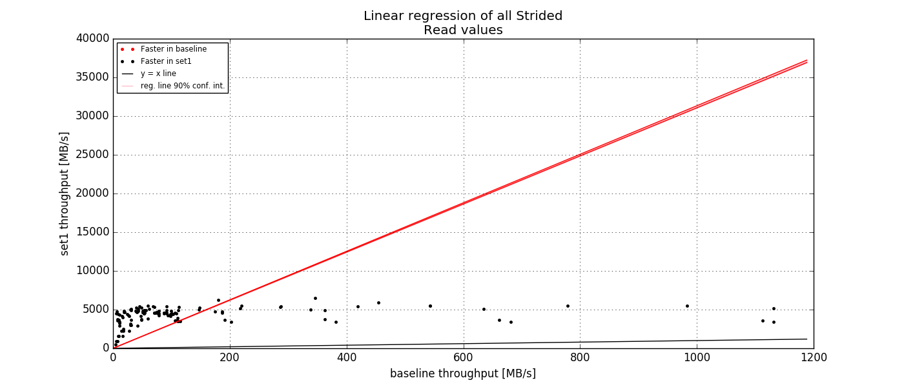
| Regression line |
|---|
| slope | 31.20232 |
| std. error | 0.08177 |
| ci. max 90% | 31.06695 |
| ci. min. 90% | 31.33768 |
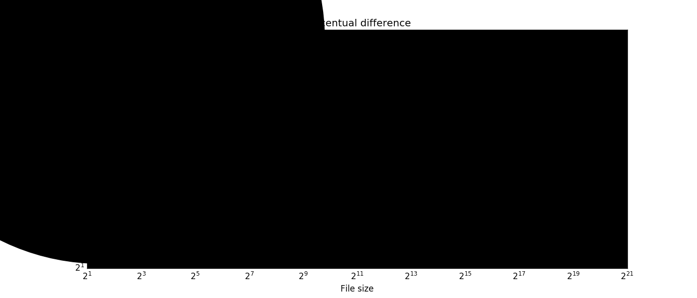
Back on top
Fwrite
| Fwrite |
File size [kB] |
4 |
8 |
16 |
32 |
64 |
128 |
256 |
512 |
1024 |
2048 |
4096 |
8192 |
16384 |
32768 |
65536 |
131072 |
262144 |
524288 |
1048576 |
|---|
| baseline | first quartile |
13.51 |
26.59 |
26.25 |
30.18 |
48.07 |
54.77 |
75.77 |
105.31 |
85.11 |
68.91 |
47.51 |
39.92 |
38.55 |
38.13 |
37.67 |
37.47 |
37.36 |
37.29 |
37.27 |
| median |
18.77 |
29.35 |
45.3 |
61.6 |
92.73 |
108.75 |
159.22 |
200.07 |
229.2 |
73.4 |
50.24 |
40.96 |
38.97 |
39.02 |
38.14 |
37.66 |
37.42 |
37.34 |
37.29 |
| third quartile |
19.84 |
32.74 |
71.68 |
100.22 |
230.6 |
318.48 |
419.64 |
511.07 |
506.57 |
93.39 |
56.11 |
44.7 |
42.13 |
43.19 |
40.04 |
38.59 |
37.9 |
37.57 |
37.36 |
| mean val. |
17.01 |
30.1 |
50.04 |
70.83 |
131.84 |
173.74 |
251.69 |
312.73 |
325.63 |
154.82 |
59.57 |
45.81 |
43.81 |
44.54 |
40.08 |
38.39 |
37.44 |
37.22 |
36.89 |
| standard dev. |
4.74 |
4.73 |
23.57 |
47.89 |
96.58 |
142.03 |
220.89 |
270.06 |
269.52 |
232.87 |
25.91 |
12.1 |
11.76 |
11.65 |
3.92 |
1.64 |
1.53 |
1.39 |
1.66 |
| ci. min. 90% |
12.49 |
27.36 |
39.32 |
52.31 |
98.8 |
129.68 |
188.56 |
240.79 |
258.12 |
99.61 |
53.73 |
43.2 |
41.38 |
41.62 |
39.1 |
37.97 |
37.05 |
36.87 |
36.48 |
| ci. max. 90% |
21.53 |
32.84 |
60.76 |
89.34 |
164.89 |
217.8 |
314.83 |
384.68 |
393.14 |
210.03 |
65.42 |
48.42 |
46.25 |
47.45 |
41.07 |
38.8 |
37.82 |
37.57 |
37.31 |
| geom. mean |
16.43 |
29.77 |
44.49 |
55.44 |
96.63 |
119.53 |
166.22 |
207.18 |
217.14 |
95.95 |
56.1 |
44.67 |
42.71 |
43.4 |
39.92 |
38.35 |
37.4 |
37.19 |
36.85 |
| minimum |
10.73 |
24.03 |
20.46 |
17.92 |
24.06 |
29.4 |
40.37 |
41.83 |
43.74 |
35.8 |
34.9 |
36.1 |
34.07 |
37.79 |
37.56 |
35.56 |
29.61 |
28.71 |
29.47 |
| maximum |
22.21 |
38.11 |
86.82 |
169.82 |
325.32 |
516.64 |
704.31 |
994.0 |
938.99 |
936.77 |
143.28 |
85.67 |
83.59 |
75.6 |
50.25 |
42.76 |
39.79 |
38.48 |
37.86 |
| set1 | first quartile |
391.91 |
804.55 |
1012.23 |
1293.63 |
1682.51 |
1867.08 |
1946.14 |
2166.27 |
2221.79 |
2370.13 |
2372.62 |
2367.61 |
2075.76 |
2098.34 |
2028.98 |
1977.66 |
1943.28 |
1937.86 |
1942.38 |
| median |
391.91 |
866.75 |
1430.74 |
1492.75 |
1959.14 |
2361.86 |
2655.93 |
2710.2 |
2778.04 |
2776.54 |
2820.74 |
2659.61 |
2331.97 |
2178.79 |
2139.46 |
2132.45 |
2130.94 |
2124.51 |
2136.84 |
| third quartile |
433.37 |
866.75 |
1499.19 |
1770.47 |
2083.72 |
2663.99 |
2968.51 |
3058.02 |
3123.54 |
2974.63 |
2926.27 |
2775.43 |
2394.2 |
2367.58 |
2346.71 |
2347.2 |
2350.2 |
2348.22 |
2363.04 |
| mean val. |
408.49 |
837.9 |
1317.04 |
1481.81 |
1909.97 |
2262.26 |
2477.47 |
2594.72 |
2648.42 |
2648.9 |
2615.44 |
2492.32 |
2198.59 |
2215.5 |
2185.64 |
2154.63 |
2144.59 |
2135.92 |
2179.98 |
| standard dev. |
22.71 |
60.4 |
298.88 |
409.21 |
427.77 |
573.53 |
643.95 |
670.23 |
650.64 |
599.52 |
530.72 |
423.01 |
330.44 |
168.73 |
152.86 |
185.51 |
200.79 |
211.15 |
320.37 |
| ci. min. 90% |
386.84 |
802.89 |
1181.12 |
1323.59 |
1763.6 |
2084.34 |
2293.41 |
2416.17 |
2485.45 |
2506.75 |
2495.68 |
2401.06 |
2130.19 |
2173.24 |
2147.35 |
2108.16 |
2094.3 |
2083.03 |
2099.74 |
| ci. max. 90% |
430.15 |
872.91 |
1452.96 |
1640.03 |
2056.35 |
2440.18 |
2661.52 |
2773.27 |
2811.39 |
2791.04 |
2735.21 |
2583.58 |
2267.0 |
2257.77 |
2223.93 |
2201.09 |
2194.89 |
2188.8 |
2260.23 |
| geom. mean |
408.0 |
835.84 |
1283.02 |
1403.38 |
1860.59 |
2184.48 |
2385.24 |
2496.59 |
2556.82 |
2569.77 |
2551.01 |
2447.53 |
2167.89 |
2208.64 |
2180.4 |
2146.79 |
2135.35 |
2125.6 |
2159.98 |
| minimum |
391.91 |
715.37 |
864.53 |
354.43 |
1226.08 |
1314.64 |
1342.94 |
1315.81 |
1354.83 |
1357.64 |
1363.36 |
1359.15 |
1252.83 |
1531.02 |
1967.11 |
1888.21 |
1872.66 |
1817.75 |
1840.09 |
| maximum |
433.37 |
890.3 |
1733.5 |
2086.94 |
2501.24 |
3280.78 |
3330.87 |
3450.37 |
3558.1 |
3502.83 |
3433.87 |
2847.99 |
2499.23 |
2407.63 |
2379.27 |
2378.96 |
2379.89 |
2380.06 |
3619.64 |
| ttest equality |
DIFF |
DIFF |
DIFF |
DIFF |
DIFF |
DIFF |
DIFF |
DIFF |
DIFF |
DIFF |
DIFF |
DIFF |
DIFF |
DIFF |
DIFF |
DIFF |
DIFF |
DIFF |
DIFF |
| baseline set1 difference |
1987.78 % |
2853.08 % |
3058.58 % |
2323.41 % |
2012.63 % |
2071.93 % |
1568.12 % |
1254.6 % |
1112.06 % |
3682.51 % |
5514.4 % |
6392.88 % |
5884.34 % |
5484.42 % |
5509.97 % |
5562.2 % |
5594.51 % |
5589.51 % |
5630.79 % |
| ttest p-value |
0.0 |
0.0 |
0.0 |
0.0 |
0.0 |
0.0 |
0.0 |
0.0 |
0.0 |
0.0 |
0.0 |
0.0 |
0.0 |
0.0 |
0.0 |
0.0 |
0.0 |
0.0 |
0.0 |
| Fwrite |
Block size [kB] |
4 |
8 |
16 |
32 |
64 |
128 |
256 |
512 |
1024 |
2048 |
4096 |
8192 |
16384 |
|---|
| baseline | first quartile |
26.78 |
39.03 |
47.62 |
48.72 |
37.49 |
37.44 |
37.46 |
37.43 |
37.47 |
37.5 |
37.89 |
37.88 |
38.48 |
| median |
38.29 |
48.29 |
80.9 |
119.32 |
40.29 |
39.87 |
39.07 |
39.14 |
39.02 |
39.53 |
40.03 |
39.88 |
39.76 |
| third quartile |
44.79 |
68.91 |
96.98 |
169.77 |
227.32 |
319.57 |
95.13 |
77.44 |
69.13 |
54.13 |
47.53 |
44.83 |
49.92 |
| mean val. |
35.56 |
53.41 |
78.45 |
118.64 |
119.68 |
163.85 |
177.08 |
159.26 |
158.86 |
53.46 |
46.09 |
46.09 |
45.76 |
| standard dev. |
10.13 |
17.02 |
30.3 |
70.2 |
117.0 |
204.52 |
257.84 |
259.24 |
259.32 |
30.37 |
14.19 |
14.32 |
12.92 |
| ci. min. 90% |
33.46 |
49.74 |
71.61 |
102.0 |
97.17 |
123.09 |
123.7 |
103.33 |
100.34 |
46.26 |
42.53 |
42.27 |
42.07 |
| ci. max. 90% |
37.66 |
57.09 |
85.29 |
135.29 |
142.18 |
204.6 |
230.45 |
215.18 |
217.37 |
60.66 |
49.64 |
49.9 |
49.46 |
| geom. mean |
33.84 |
50.71 |
72.57 |
97.91 |
77.42 |
82.96 |
79.08 |
71.01 |
69.2 |
48.2 |
44.48 |
44.48 |
44.36 |
| minimum |
10.73 |
24.03 |
38.28 |
38.26 |
36.77 |
36.74 |
36.57 |
28.71 |
37.04 |
29.47 |
31.85 |
37.3 |
33.55 |
| maximum |
49.48 |
84.9 |
161.06 |
325.32 |
516.64 |
704.31 |
994.0 |
938.99 |
936.77 |
143.28 |
85.67 |
83.59 |
75.6 |
| set1 | first quartile |
1076.07 |
1690.66 |
2072.4 |
2341.47 |
2345.11 |
2370.25 |
2347.25 |
2374.06 |
2130.97 |
2016.89 |
1948.07 |
1878.0 |
1884.6 |
| median |
1314.64 |
1871.53 |
2232.86 |
2645.69 |
2481.03 |
2568.25 |
2394.2 |
2404.1 |
2156.32 |
2058.6 |
2013.02 |
1927.13 |
1977.66 |
| third quartile |
1369.37 |
1960.25 |
2341.34 |
2686.75 |
2867.12 |
2936.36 |
2873.58 |
2861.02 |
2586.04 |
2491.12 |
2359.6 |
2178.0 |
2124.44 |
| mean val. |
1168.78 |
1752.33 |
2114.0 |
2486.45 |
2611.44 |
2677.23 |
2648.88 |
2671.94 |
2412.75 |
2307.2 |
2226.79 |
2060.73 |
2040.77 |
| standard dev. |
302.3 |
324.15 |
324.4 |
286.15 |
308.96 |
333.8 |
359.02 |
385.67 |
433.67 |
451.75 |
452.52 |
296.51 |
201.5 |
| ci. min. 90% |
1106.19 |
1682.4 |
2040.79 |
2418.6 |
2552.02 |
2610.71 |
2574.56 |
2588.74 |
2314.89 |
2200.09 |
2113.44 |
1981.74 |
1983.17 |
| ci. max. 90% |
1231.36 |
1822.26 |
2187.2 |
2554.29 |
2670.87 |
2743.75 |
2723.21 |
2755.14 |
2510.61 |
2414.31 |
2340.13 |
2139.72 |
2098.36 |
| geom. mean |
1109.81 |
1711.42 |
2084.98 |
2468.67 |
2594.35 |
2657.45 |
2626.24 |
2646.43 |
2379.67 |
2270.75 |
2189.88 |
2042.03 |
2031.69 |
| minimum |
354.43 |
715.37 |
1315.83 |
1825.37 |
2306.27 |
2344.28 |
2318.68 |
2296.85 |
1993.14 |
2008.42 |
1888.21 |
1531.02 |
1817.75 |
| maximum |
1416.61 |
2020.18 |
2410.93 |
2782.8 |
3619.64 |
3400.02 |
3355.96 |
3450.37 |
3558.1 |
3502.83 |
3433.87 |
2803.96 |
2499.23 |
| ttest equality |
DIFF |
DIFF |
DIFF |
DIFF |
DIFF |
DIFF |
DIFF |
DIFF |
DIFF |
DIFF |
DIFF |
DIFF |
DIFF |
| baseline set1 difference |
3333.39 % |
3775.56 % |
2660.08 % |
2117.31 % |
6057.92 % |
6341.62 % |
6028.38 % |
6042.43 % |
5426.82 % |
5107.45 % |
4928.24 % |
4732.75 % |
4873.9 % |
| ttest p-value |
0.0 |
0.0 |
0.0 |
0.0 |
0.0 |
0.0 |
0.0 |
0.0 |
0.0 |
0.0 |
0.0 |
0.0 |
0.0 |
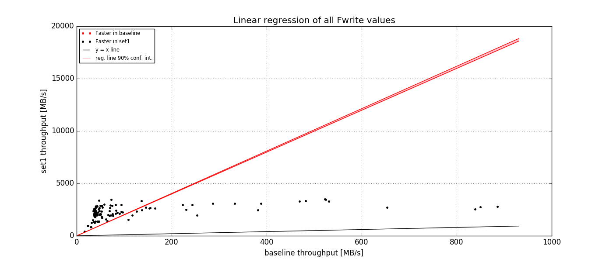
| Regression line |
|---|
| slope | 20.09831 |
| std. error | 0.07827 |
| ci. max 90% | 19.96873 |
| ci. min. 90% | 20.22788 |
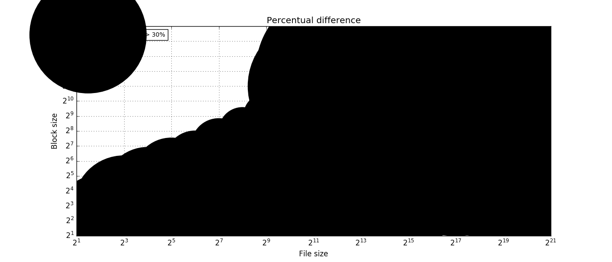
Back on top
Frewrite
| Frewrite |
File size [kB] |
4 |
8 |
16 |
32 |
64 |
128 |
256 |
512 |
1024 |
2048 |
4096 |
8192 |
16384 |
32768 |
65536 |
131072 |
262144 |
524288 |
1048576 |
|---|
| baseline | first quartile |
12.13 |
24.62 |
26.83 |
30.43 |
50.24 |
61.91 |
74.12 |
82.8 |
91.87 |
68.62 |
47.74 |
40.16 |
38.48 |
38.25 |
37.7 |
37.46 |
37.36 |
37.3 |
37.27 |
| median |
12.57 |
29.7 |
42.23 |
74.16 |
97.68 |
123.78 |
118.47 |
194.14 |
213.9 |
74.45 |
49.46 |
41.1 |
39.06 |
39.09 |
38.07 |
37.68 |
37.46 |
37.35 |
37.29 |
| third quartile |
13.42 |
34.71 |
54.71 |
97.79 |
164.89 |
309.53 |
387.03 |
442.48 |
489.71 |
94.13 |
56.73 |
44.65 |
42.24 |
43.26 |
40.01 |
38.63 |
37.91 |
37.58 |
37.41 |
| mean val. |
13.95 |
30.16 |
44.38 |
69.72 |
125.97 |
195.92 |
235.92 |
284.32 |
317.11 |
152.72 |
59.73 |
46.33 |
43.86 |
44.32 |
39.75 |
38.24 |
37.76 |
37.3 |
36.99 |
| standard dev. |
4.14 |
6.69 |
17.96 |
41.85 |
102.08 |
188.29 |
205.69 |
241.5 |
257.76 |
227.61 |
26.19 |
13.27 |
11.98 |
12.06 |
4.36 |
2.18 |
0.79 |
1.23 |
1.67 |
| ci. min. 90% |
10.0 |
26.29 |
36.21 |
53.54 |
91.04 |
137.51 |
177.13 |
219.99 |
252.55 |
98.75 |
53.82 |
43.47 |
41.38 |
41.3 |
38.66 |
37.69 |
37.56 |
36.99 |
36.57 |
| ci. max. 90% |
17.9 |
34.04 |
52.54 |
85.89 |
160.9 |
254.33 |
294.71 |
348.66 |
381.68 |
206.68 |
65.64 |
49.19 |
46.34 |
47.34 |
40.84 |
38.78 |
37.95 |
37.6 |
37.41 |
| geom. mean |
13.54 |
29.48 |
40.75 |
56.34 |
95.93 |
127.49 |
158.55 |
190.79 |
214.75 |
95.02 |
56.22 |
45.02 |
42.73 |
43.09 |
39.53 |
38.18 |
37.75 |
37.27 |
36.95 |
| minimum |
10.53 |
21.28 |
20.17 |
18.28 |
32.07 |
26.65 |
40.3 |
36.08 |
44.53 |
35.3 |
35.43 |
36.34 |
36.56 |
30.82 |
28.17 |
30.42 |
35.9 |
29.77 |
28.93 |
| maximum |
21.12 |
40.07 |
76.22 |
140.82 |
445.97 |
757.85 |
656.26 |
841.62 |
884.91 |
919.52 |
146.68 |
94.1 |
84.21 |
76.55 |
50.17 |
42.7 |
39.83 |
38.5 |
37.86 |
| set1 | first quartile |
328.96 |
559.63 |
730.12 |
1030.26 |
1298.99 |
1524.95 |
1628.73 |
1805.78 |
1980.5 |
1997.02 |
2012.67 |
2149.25 |
2216.07 |
2168.62 |
2056.7 |
1990.26 |
1954.63 |
1939.72 |
1960.82 |
| median |
328.96 |
597.89 |
925.58 |
1302.29 |
1682.51 |
2008.76 |
2194.57 |
2284.14 |
2352.64 |
2434.74 |
2412.67 |
2411.16 |
2348.45 |
2336.1 |
2260.76 |
2131.09 |
2127.23 |
2129.91 |
2145.83 |
| third quartile |
328.96 |
654.68 |
1047.72 |
1481.38 |
1888.57 |
2271.56 |
2660.53 |
2819.55 |
2899.01 |
2913.53 |
2655.34 |
2530.54 |
2436.0 |
2376.0 |
2351.3 |
2350.01 |
2349.59 |
2346.55 |
2366.34 |
| mean val. |
333.41 |
605.3 |
894.09 |
1278.97 |
1570.97 |
1954.33 |
2214.04 |
2353.17 |
2415.93 |
2399.56 |
2364.75 |
2320.77 |
2241.77 |
2342.65 |
2216.02 |
2166.09 |
2149.26 |
2137.29 |
2155.08 |
| standard dev. |
13.86 |
45.21 |
182.83 |
308.85 |
472.45 |
553.31 |
705.04 |
779.2 |
739.83 |
619.12 |
561.12 |
495.45 |
414.75 |
234.97 |
141.83 |
175.99 |
197.06 |
212.8 |
209.66 |
| ci. min. 90% |
320.2 |
579.09 |
810.94 |
1159.56 |
1409.31 |
1782.68 |
2012.53 |
2145.59 |
2230.62 |
2252.76 |
2238.13 |
2213.88 |
2155.91 |
2283.8 |
2180.5 |
2122.01 |
2099.9 |
2083.98 |
2102.57 |
| ci. max. 90% |
346.62 |
631.51 |
977.23 |
1398.39 |
1732.63 |
2125.97 |
2415.56 |
2560.75 |
2601.23 |
2546.35 |
2491.37 |
2427.66 |
2327.63 |
2401.5 |
2251.55 |
2210.17 |
2198.62 |
2190.59 |
2207.6 |
| geom. mean |
333.19 |
603.79 |
875.6 |
1242.47 |
1498.28 |
1875.23 |
2101.34 |
2225.03 |
2301.14 |
2311.25 |
2290.8 |
2261.75 |
2197.84 |
2331.99 |
2211.54 |
2159.1 |
2140.39 |
2126.79 |
2144.98 |
| minimum |
322.48 |
557.22 |
561.07 |
846.69 |
734.7 |
1127.97 |
1111.01 |
1108.54 |
1207.76 |
1212.79 |
1205.54 |
1224.89 |
1225.31 |
2012.08 |
2009.99 |
1940.57 |
1876.46 |
1756.52 |
1855.96 |
| maximum |
357.68 |
657.92 |
1114.45 |
1752.17 |
2323.85 |
2982.2 |
3521.01 |
3965.83 |
4084.81 |
3483.92 |
3404.6 |
3376.78 |
3143.45 |
2946.81 |
2394.48 |
2387.67 |
2382.24 |
2386.56 |
2388.43 |
| ttest equality |
DIFF |
DIFF |
DIFF |
DIFF |
DIFF |
DIFF |
DIFF |
DIFF |
DIFF |
DIFF |
DIFF |
DIFF |
DIFF |
DIFF |
DIFF |
DIFF |
DIFF |
DIFF |
DIFF |
| baseline set1 difference |
2517.96 % |
1913.1 % |
2091.67 % |
1655.98 % |
1622.54 % |
1522.91 % |
1752.4 % |
1076.54 % |
999.89 % |
3170.23 % |
4778.4 % |
5766.28 % |
5912.93 % |
5876.38 % |
5838.68 % |
5555.67 % |
5578.68 % |
5603.22 % |
5654.29 % |
| ttest p-value |
0.0 |
0.0 |
0.0 |
0.0 |
0.0 |
0.0 |
0.0 |
0.0 |
0.0 |
0.0 |
0.0 |
0.0 |
0.0 |
0.0 |
0.0 |
0.0 |
0.0 |
0.0 |
0.0 |
| Frewrite |
Block size [kB] |
4 |
8 |
16 |
32 |
64 |
128 |
256 |
512 |
1024 |
2048 |
4096 |
8192 |
16384 |
|---|
| baseline | first quartile |
26.65 |
40.3 |
48.69 |
48.35 |
37.39 |
37.45 |
37.39 |
37.42 |
37.49 |
37.61 |
37.91 |
38.35 |
38.4 |
| median |
36.79 |
53.18 |
77.78 |
115.8 |
40.23 |
40.07 |
39.38 |
39.25 |
39.09 |
39.51 |
39.99 |
39.89 |
39.79 |
| third quartile |
43.15 |
68.69 |
98.62 |
151.65 |
197.93 |
309.53 |
96.52 |
76.51 |
68.67 |
54.59 |
47.51 |
44.82 |
49.96 |
| mean val. |
35.21 |
55.1 |
77.13 |
115.03 |
121.27 |
156.62 |
167.51 |
152.93 |
154.62 |
53.48 |
46.81 |
46.23 |
46.04 |
| standard dev. |
10.5 |
16.35 |
29.62 |
79.19 |
140.07 |
190.59 |
236.3 |
246.55 |
250.77 |
30.76 |
15.38 |
14.61 |
13.01 |
| ci. min. 90% |
33.03 |
51.57 |
70.45 |
96.25 |
94.33 |
118.64 |
118.59 |
99.74 |
98.03 |
46.19 |
42.95 |
42.34 |
42.33 |
| ci. max. 90% |
37.38 |
58.62 |
83.82 |
133.8 |
148.21 |
194.6 |
216.43 |
206.12 |
211.21 |
60.77 |
50.66 |
50.12 |
49.76 |
| geom. mean |
33.22 |
52.57 |
71.3 |
94.19 |
75.63 |
81.57 |
77.79 |
70.5 |
68.76 |
48.09 |
45.02 |
44.57 |
44.64 |
| minimum |
10.53 |
21.76 |
38.29 |
38.26 |
29.77 |
34.52 |
30.82 |
30.42 |
37.06 |
28.17 |
36.91 |
37.28 |
35.9 |
| maximum |
50.1 |
87.34 |
140.82 |
445.97 |
757.85 |
656.26 |
841.62 |
884.91 |
919.52 |
146.68 |
94.1 |
84.21 |
76.55 |
| set1 | first quartile |
869.14 |
1332.37 |
1740.61 |
2195.46 |
2321.48 |
2363.02 |
2349.57 |
2380.21 |
2132.15 |
2017.96 |
1960.1 |
1893.53 |
1901.2 |
| median |
1139.26 |
1618.67 |
1975.08 |
2233.26 |
2350.01 |
2381.88 |
2391.21 |
2408.56 |
2177.45 |
2091.94 |
2018.16 |
2016.24 |
2025.76 |
| third quartile |
1224.89 |
1704.31 |
1996.22 |
2245.57 |
2379.37 |
2477.43 |
2618.33 |
2707.56 |
2521.71 |
2525.11 |
2447.19 |
2407.69 |
2408.96 |
| mean val. |
1016.29 |
1445.51 |
1804.95 |
2142.8 |
2351.55 |
2493.94 |
2575.28 |
2626.73 |
2396.98 |
2329.94 |
2300.47 |
2217.5 |
2192.72 |
| standard dev. |
280.63 |
358.55 |
335.85 |
252.31 |
222.44 |
284.91 |
410.8 |
415.98 |
411.9 |
454.65 |
486.71 |
428.49 |
364.1 |
| ci. min. 90% |
958.19 |
1368.15 |
1729.16 |
2082.98 |
2308.76 |
2437.16 |
2490.24 |
2536.99 |
2304.03 |
2222.14 |
2178.56 |
2103.35 |
2088.66 |
| ci. max. 90% |
1074.38 |
1522.86 |
1880.74 |
2202.62 |
2394.33 |
2550.71 |
2660.33 |
2716.47 |
2489.93 |
2437.74 |
2422.38 |
2331.65 |
2296.79 |
| geom. mean |
961.26 |
1382.57 |
1761.64 |
2124.42 |
2339.87 |
2480.39 |
2548.96 |
2599.76 |
2366.79 |
2292.03 |
2256.3 |
2181.13 |
2165.8 |
| minimum |
322.48 |
557.22 |
734.7 |
1353.97 |
1298.99 |
2223.39 |
2282.13 |
2356.04 |
2012.08 |
1985.39 |
1910.92 |
1756.52 |
1822.94 |
| maximum |
1251.73 |
1729.47 |
2015.33 |
2323.85 |
2982.2 |
3521.01 |
3965.83 |
4084.81 |
3483.92 |
3404.6 |
3376.78 |
3143.45 |
2946.81 |
| ttest equality |
DIFF |
DIFF |
DIFF |
DIFF |
DIFF |
DIFF |
DIFF |
DIFF |
DIFF |
DIFF |
DIFF |
DIFF |
DIFF |
| baseline set1 difference |
2996.64 % |
2943.59 % |
2439.4 % |
1828.5 % |
5740.94 % |
5844.25 % |
5972.46 % |
6036.0 % |
5470.52 % |
5194.54 % |
4946.39 % |
4954.74 % |
4991.25 % |
| ttest p-value |
0.0 |
0.0 |
0.0 |
0.0 |
0.0 |
0.0 |
0.0 |
0.0 |
0.0 |
0.0 |
0.0 |
0.0 |
0.0 |
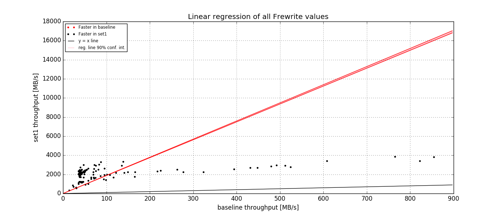
| Regression line |
|---|
| slope | 18.86297 |
| std. error | 0.07596 |
| ci. max 90% | 18.73721 |
| ci. min. 90% | 18.98872 |
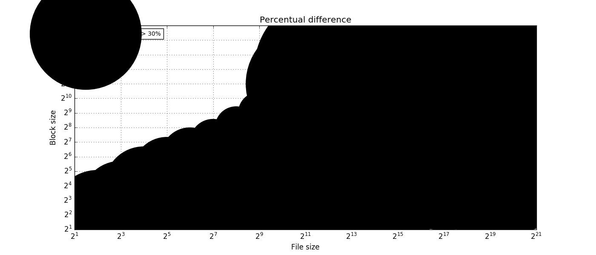
Back on top
Fread
| Fread |
File size [kB] |
4 |
8 |
16 |
32 |
64 |
128 |
256 |
512 |
1024 |
2048 |
4096 |
8192 |
16384 |
32768 |
65536 |
131072 |
262144 |
524288 |
1048576 |
|---|
| baseline | first quartile |
3.78 |
4.94 |
10.25 |
9.59 |
16.09 |
18.87 |
30.97 |
40.92 |
40.42 |
39.17 |
39.17 |
39.34 |
39.46 |
39.62 |
39.69 |
39.68 |
39.58 |
39.65 |
39.67 |
| median |
3.83 |
6.71 |
10.64 |
14.16 |
16.53 |
25.09 |
40.79 |
52.36 |
43.71 |
40.88 |
40.16 |
39.86 |
39.92 |
65.99 |
65.72 |
65.64 |
65.45 |
65.44 |
65.54 |
| third quartile |
3.94 |
8.68 |
15.01 |
20.68 |
32.72 |
46.76 |
69.75 |
60.56 |
47.26 |
54.25 |
69.97 |
72.31 |
84.26 |
96.2 |
95.57 |
95.32 |
95.19 |
95.14 |
95.02 |
| mean val. |
4.14 |
6.86 |
12.08 |
15.71 |
24.44 |
32.27 |
48.06 |
54.23 |
52.09 |
51.68 |
54.1 |
56.9 |
60.51 |
69.24 |
68.92 |
68.72 |
68.68 |
68.67 |
68.64 |
| standard dev. |
0.72 |
1.99 |
2.56 |
6.58 |
10.84 |
15.78 |
19.19 |
17.5 |
19.89 |
21.4 |
23.68 |
26.17 |
27.55 |
27.9 |
27.6 |
27.45 |
27.43 |
27.38 |
27.36 |
| ci. min. 90% |
3.45 |
5.71 |
10.91 |
13.16 |
20.74 |
27.37 |
42.57 |
49.57 |
47.11 |
46.61 |
48.75 |
51.25 |
54.81 |
62.25 |
62.01 |
61.85 |
61.81 |
61.81 |
61.79 |
| ci. max. 90% |
4.83 |
8.02 |
13.24 |
18.25 |
28.15 |
37.16 |
53.54 |
58.89 |
57.07 |
56.75 |
59.44 |
62.54 |
66.22 |
76.23 |
75.83 |
75.6 |
75.55 |
75.52 |
75.49 |
| geom. mean |
4.1 |
6.6 |
11.84 |
14.44 |
22.4 |
28.97 |
44.68 |
51.81 |
49.32 |
48.53 |
50.2 |
52.0 |
55.2 |
63.65 |
63.43 |
63.27 |
63.24 |
63.25 |
63.23 |
| minimum |
3.72 |
4.64 |
9.36 |
9.13 |
15.73 |
16.32 |
27.95 |
35.04 |
36.92 |
37.08 |
37.84 |
21.35 |
38.53 |
39.09 |
39.2 |
39.21 |
39.27 |
39.19 |
39.23 |
| maximum |
5.42 |
9.6 |
16.11 |
26.67 |
43.44 |
61.52 |
78.81 |
93.77 |
101.41 |
106.22 |
108.72 |
110.19 |
110.88 |
108.48 |
107.75 |
107.42 |
107.25 |
107.17 |
107.13 |
| set1 | first quartile |
382.75 |
969.3 |
1499.19 |
2193.41 |
2824.65 |
3483.08 |
3997.66 |
4247.38 |
4254.7 |
4513.51 |
4566.1 |
4519.91 |
4285.15 |
4268.36 |
4283.26 |
4308.9 |
4336.2 |
4385.22 |
4430.66 |
| median |
391.91 |
969.3 |
1567.63 |
2248.18 |
2985.5 |
3671.34 |
4099.11 |
4379.96 |
4501.26 |
4618.5 |
4629.72 |
4681.27 |
4609.5 |
4541.62 |
4495.59 |
4514.49 |
4524.16 |
4533.58 |
4538.91 |
| third quartile |
391.91 |
998.85 |
1567.63 |
2391.58 |
3128.0 |
3777.14 |
4240.02 |
4435.61 |
4630.47 |
4705.28 |
4695.15 |
4805.47 |
4739.39 |
4574.75 |
4578.32 |
4566.87 |
4562.05 |
4574.66 |
4568.25 |
| mean val. |
388.25 |
980.92 |
1562.26 |
2216.55 |
2873.63 |
3590.07 |
4058.34 |
4280.33 |
4431.88 |
4545.28 |
4568.81 |
4583.13 |
4422.39 |
4342.73 |
4327.12 |
4337.93 |
4343.61 |
4351.95 |
4359.61 |
| standard dev. |
5.02 |
56.48 |
109.01 |
276.73 |
462.54 |
365.34 |
255.13 |
263.83 |
291.59 |
281.03 |
268.92 |
314.31 |
463.55 |
460.5 |
450.31 |
452.31 |
451.64 |
455.37 |
464.22 |
| ci. min. 90% |
383.46 |
948.18 |
1512.69 |
2109.55 |
2715.37 |
3476.73 |
3985.42 |
4210.05 |
4358.84 |
4478.65 |
4508.12 |
4515.32 |
4326.43 |
4227.39 |
4214.33 |
4224.64 |
4230.49 |
4237.89 |
4243.34 |
| ci. max. 90% |
393.03 |
1013.66 |
1611.84 |
2323.54 |
3031.9 |
3703.4 |
4131.27 |
4350.62 |
4504.91 |
4611.91 |
4629.49 |
4650.94 |
4518.36 |
4458.08 |
4439.91 |
4451.22 |
4456.73 |
4466.01 |
4475.89 |
| geom. mean |
388.22 |
979.45 |
1558.73 |
2194.09 |
2819.59 |
3570.62 |
4050.09 |
4271.96 |
4422.17 |
4536.21 |
4560.52 |
4571.86 |
4395.89 |
4316.78 |
4302.29 |
4312.89 |
4318.63 |
4326.56 |
4333.17 |
| minimum |
382.75 |
866.75 |
1400.17 |
1161.93 |
1093.15 |
2663.99 |
3289.08 |
3473.22 |
3689.55 |
3669.87 |
3727.6 |
3823.95 |
3012.63 |
3356.38 |
3434.0 |
3453.68 |
3470.86 |
3472.01 |
3353.87 |
| maximum |
391.91 |
1099.39 |
1733.5 |
2436.02 |
3284.78 |
4167.44 |
4390.92 |
4631.46 |
5048.48 |
5115.61 |
5213.87 |
4931.71 |
4935.27 |
4869.88 |
4856.91 |
4842.22 |
4831.74 |
4848.07 |
4839.13 |
| ttest equality |
DIFF |
DIFF |
DIFF |
DIFF |
DIFF |
DIFF |
DIFF |
DIFF |
DIFF |
DIFF |
DIFF |
DIFF |
DIFF |
DIFF |
DIFF |
DIFF |
DIFF |
DIFF |
DIFF |
| baseline set1 difference |
10124.56 % |
14341.54 % |
14639.29 % |
15774.6 % |
17961.88 % |
14533.05 % |
9949.53 % |
8264.65 % |
10196.88 % |
11196.79 % |
11429.27 % |
11643.17 % |
11446.59 % |
6782.06 % |
6740.96 % |
6777.17 % |
6812.89 % |
6828.11 % |
6824.98 % |
| ttest p-value |
0.0 |
0.0 |
0.0 |
0.0 |
0.0 |
0.0 |
0.0 |
0.0 |
0.0 |
0.0 |
0.0 |
0.0 |
0.0 |
0.0 |
0.0 |
0.0 |
0.0 |
0.0 |
0.0 |
| Fread |
Block size [kB] |
4 |
8 |
16 |
32 |
64 |
128 |
256 |
512 |
1024 |
2048 |
4096 |
8192 |
16384 |
|---|
| baseline | first quartile |
10.41 |
14.52 |
18.99 |
32.02 |
39.46 |
39.54 |
39.61 |
46.41 |
65.56 |
82.64 |
95.14 |
102.82 |
107.16 |
| median |
29.71 |
34.75 |
38.97 |
39.53 |
39.77 |
39.72 |
39.71 |
46.8 |
65.99 |
83.07 |
95.54 |
103.01 |
107.38 |
| third quartile |
38.53 |
38.69 |
39.72 |
40.5 |
43.07 |
46.8 |
43.18 |
51.41 |
69.97 |
86.15 |
97.37 |
104.1 |
108.41 |
| mean val. |
25.02 |
27.08 |
31.95 |
36.76 |
42.12 |
45.4 |
45.52 |
52.96 |
70.39 |
86.35 |
97.56 |
104.2 |
107.92 |
| standard dev. |
14.09 |
12.85 |
10.63 |
6.78 |
4.43 |
10.66 |
11.82 |
14.08 |
10.19 |
6.99 |
4.2 |
2.39 |
1.22 |
| ci. min. 90% |
22.1 |
24.31 |
29.55 |
35.16 |
41.27 |
43.28 |
43.07 |
49.92 |
68.09 |
84.69 |
96.51 |
103.57 |
107.57 |
| ci. max. 90% |
27.93 |
29.86 |
34.34 |
38.37 |
42.97 |
47.52 |
47.97 |
56.0 |
72.69 |
88.0 |
98.61 |
104.84 |
108.27 |
| geom. mean |
19.55 |
23.26 |
29.87 |
36.07 |
41.91 |
44.41 |
44.36 |
51.42 |
69.8 |
86.1 |
97.48 |
104.18 |
107.92 |
| minimum |
3.72 |
7.83 |
14.82 |
23.95 |
37.85 |
39.23 |
37.84 |
21.35 |
64.94 |
82.5 |
94.97 |
102.39 |
106.52 |
| maximum |
42.64 |
42.83 |
52.83 |
49.32 |
54.8 |
78.81 |
78.37 |
93.77 |
101.41 |
106.22 |
108.72 |
110.19 |
110.88 |
| set1 | first quartile |
2086.94 |
2424.91 |
3128.0 |
3717.2 |
4407.66 |
4490.66 |
4484.27 |
4521.96 |
4542.26 |
4533.26 |
4308.9 |
3597.09 |
3463.61 |
| median |
3521.01 |
4309.72 |
4307.99 |
4320.05 |
4779.16 |
4701.3 |
4513.39 |
4546.13 |
4561.98 |
4558.32 |
4372.1 |
3606.78 |
3476.47 |
| third quartile |
3925.46 |
4722.79 |
4655.67 |
4670.18 |
4832.05 |
4749.89 |
4569.93 |
4610.85 |
4613.4 |
4605.99 |
4430.66 |
3655.9 |
3483.32 |
| mean val. |
2888.81 |
3625.86 |
3831.0 |
4044.08 |
4503.98 |
4576.62 |
4515.44 |
4541.31 |
4558.78 |
4568.29 |
4377.12 |
3643.85 |
3466.38 |
| standard dev. |
1242.21 |
1365.07 |
1026.25 |
807.93 |
597.94 |
259.73 |
101.53 |
153.85 |
144.93 |
60.27 |
94.16 |
154.28 |
37.92 |
| ci. min. 90% |
2631.66 |
3331.37 |
3599.41 |
3852.52 |
4388.97 |
4524.86 |
4494.42 |
4508.12 |
4526.08 |
4554.0 |
4353.53 |
3602.75 |
3455.54 |
| ci. max. 90% |
3145.97 |
3920.36 |
4062.58 |
4235.64 |
4618.99 |
4628.37 |
4536.46 |
4574.5 |
4591.49 |
4582.58 |
4400.7 |
3684.95 |
3477.22 |
| geom. mean |
2441.98 |
3256.73 |
3655.64 |
3949.56 |
4454.25 |
4568.92 |
4514.3 |
4538.5 |
4556.39 |
4567.91 |
4376.13 |
3640.57 |
3466.17 |
| minimum |
382.75 |
969.3 |
1567.63 |
2228.9 |
2004.07 |
3777.14 |
4164.23 |
3669.87 |
3968.49 |
4462.74 |
4167.78 |
3012.63 |
3353.87 |
| maximum |
4015.98 |
4931.71 |
4851.85 |
4877.94 |
5213.87 |
4842.18 |
4705.28 |
4742.14 |
4795.68 |
4707.92 |
4603.05 |
3958.38 |
3520.41 |
| ttest equality |
DIFF |
DIFF |
DIFF |
DIFF |
DIFF |
DIFF |
DIFF |
DIFF |
DIFF |
DIFF |
DIFF |
DIFF |
DIFF |
| baseline set1 difference |
11751.66 % |
12301.91 % |
10953.87 % |
10827.93 % |
11917.73 % |
11736.61 % |
11267.0 % |
9613.69 % |
6812.91 % |
5387.5 % |
4476.2 % |
3401.23 % |
3137.6 % |
| ttest p-value |
0.0 |
0.0 |
0.0 |
0.0 |
0.0 |
0.0 |
0.0 |
0.0 |
0.0 |
0.0 |
0.0 |
0.0 |
0.0 |
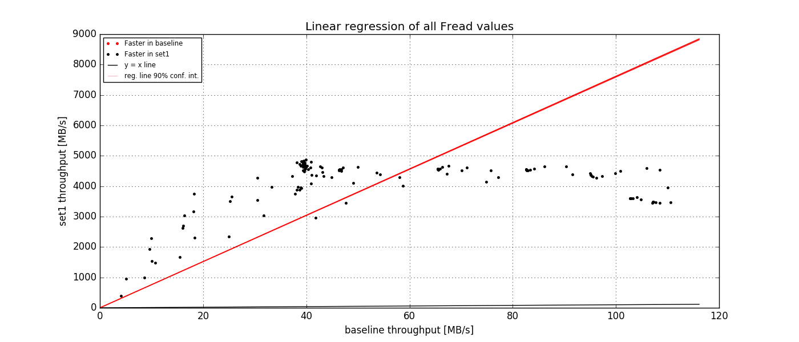
| Regression line |
|---|
| slope | 76.06129 |
| std. error | 0.08136 |
| ci. max 90% | 75.9266 |
| ci. min. 90% | 76.19598 |
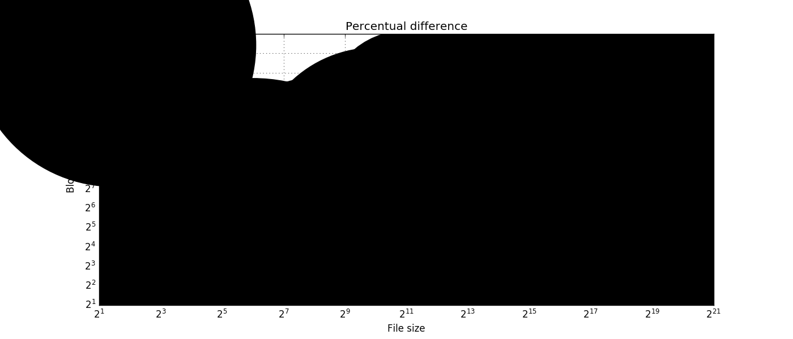
Back on top
Freread
| Freread |
File size [kB] |
4 |
8 |
16 |
32 |
64 |
128 |
256 |
512 |
1024 |
2048 |
4096 |
8192 |
16384 |
32768 |
65536 |
131072 |
262144 |
524288 |
1048576 |
|---|
| baseline | first quartile |
1279.43 |
1574.95 |
2539.59 |
3011.89 |
2824.65 |
3235.44 |
3446.03 |
3635.93 |
3873.55 |
4045.13 |
4160.19 |
3637.55 |
3423.96 |
3528.53 |
3588.43 |
3622.69 |
3642.36 |
3669.72 |
3684.38 |
| median |
1279.43 |
1949.81 |
2641.97 |
3135.27 |
3128.0 |
3621.32 |
3900.87 |
3954.64 |
4096.78 |
4232.81 |
4232.6 |
3872.05 |
3611.73 |
3677.72 |
3733.1 |
3754.11 |
3773.63 |
3789.45 |
3795.91 |
| third quartile |
1279.43 |
1949.81 |
2641.97 |
3466.99 |
3504.33 |
3797.69 |
3974.8 |
4204.35 |
4254.7 |
4289.08 |
4289.96 |
3956.29 |
3697.7 |
3733.06 |
3780.68 |
3794.28 |
3802.8 |
3799.12 |
3819.77 |
| mean val. |
1240.2 |
1921.68 |
2632.71 |
3126.72 |
3094.79 |
3539.06 |
3669.68 |
3880.48 |
4034.85 |
4121.78 |
4150.04 |
3776.49 |
3522.11 |
3547.52 |
3590.54 |
3619.83 |
3633.3 |
3647.5 |
3657.5 |
| standard dev. |
155.55 |
379.48 |
309.62 |
280.89 |
718.4 |
411.94 |
403.97 |
444.9 |
329.99 |
278.56 |
242.13 |
259.23 |
264.84 |
295.34 |
313.58 |
321.9 |
323.26 |
325.44 |
330.19 |
| ci. min. 90% |
1091.9 |
1701.7 |
2491.9 |
3018.12 |
2848.97 |
3411.27 |
3554.21 |
3761.96 |
3952.2 |
4055.74 |
4095.4 |
3720.57 |
3467.28 |
3473.55 |
3512.0 |
3539.2 |
3552.33 |
3565.99 |
3574.79 |
| ci. max. 90% |
1388.5 |
2141.66 |
2773.51 |
3235.33 |
3340.61 |
3666.85 |
3785.14 |
3999.0 |
4117.51 |
4187.83 |
4204.68 |
3832.42 |
3576.93 |
3621.5 |
3669.08 |
3700.45 |
3714.27 |
3729.02 |
3740.2 |
| geom. mean |
1231.6 |
1890.23 |
2616.16 |
3114.44 |
3003.37 |
3515.12 |
3646.64 |
3852.23 |
4020.91 |
4111.97 |
4142.45 |
3767.24 |
3511.78 |
3534.64 |
3576.15 |
3604.76 |
3618.17 |
3632.21 |
3641.78 |
| minimum |
974.91 |
1574.95 |
2198.77 |
2579.87 |
1426.2 |
2719.25 |
2782.8 |
2305.05 |
3105.04 |
3350.34 |
3386.73 |
3159.61 |
2955.32 |
2927.46 |
2954.62 |
2953.06 |
2996.53 |
3000.56 |
3013.14 |
| maximum |
1387.8 |
2558.86 |
3149.91 |
3466.99 |
4173.89 |
4167.44 |
4248.59 |
4463.87 |
4486.82 |
4472.0 |
4377.27 |
4056.97 |
3859.09 |
3878.7 |
3933.59 |
3972.21 |
3962.97 |
3973.7 |
3982.61 |
| set1 | first quartile |
974.91 |
1949.81 |
2539.59 |
3384.06 |
3923.98 |
4167.44 |
4309.72 |
4492.62 |
4719.03 |
4819.83 |
5051.4 |
4774.57 |
4367.98 |
4330.75 |
4326.41 |
4341.94 |
4384.68 |
4415.08 |
4427.21 |
| median |
1279.43 |
1949.81 |
2641.97 |
3466.99 |
4108.47 |
4395.19 |
4706.23 |
4720.07 |
5054.56 |
5194.84 |
5249.76 |
5139.88 |
4648.46 |
4535.79 |
4515.63 |
4530.64 |
4534.58 |
4541.59 |
4542.77 |
| third quartile |
1279.43 |
1949.81 |
2641.97 |
3569.55 |
4173.89 |
4647.71 |
5058.38 |
5046.63 |
5290.46 |
5405.71 |
5401.89 |
5267.73 |
4742.07 |
4609.63 |
4578.32 |
4580.27 |
4572.33 |
4582.93 |
4582.66 |
| mean val. |
1157.62 |
1940.86 |
2673.06 |
3437.56 |
3947.85 |
4289.58 |
4594.55 |
4688.53 |
4968.33 |
5061.55 |
5142.2 |
4956.49 |
4446.47 |
4348.19 |
4340.47 |
4345.55 |
4356.52 |
4359.51 |
4366.78 |
| standard dev. |
166.79 |
283.97 |
269.76 |
382.38 |
365.47 |
538.11 |
500.45 |
512.71 |
493.27 |
484.14 |
389.86 |
433.93 |
465.84 |
447.59 |
452.68 |
453.11 |
453.17 |
456.97 |
456.08 |
| ci. min. 90% |
998.6 |
1776.25 |
2550.38 |
3289.72 |
3822.8 |
4122.65 |
4451.51 |
4551.95 |
4844.78 |
4946.76 |
5054.23 |
4862.88 |
4350.04 |
4236.08 |
4227.09 |
4232.06 |
4243.01 |
4245.05 |
4252.54 |
| ci. max. 90% |
1316.64 |
2105.47 |
2795.74 |
3585.41 |
4072.91 |
4456.51 |
4737.59 |
4825.12 |
5091.88 |
5176.34 |
5230.18 |
5050.11 |
4542.91 |
4460.3 |
4453.85 |
4459.04 |
4470.03 |
4473.97 |
4481.01 |
| geom. mean |
1147.61 |
1922.56 |
2660.85 |
3416.68 |
3930.58 |
4252.11 |
4566.86 |
4659.84 |
4943.03 |
5037.11 |
5126.35 |
4936.41 |
4419.74 |
4323.65 |
4315.36 |
4320.38 |
4331.4 |
4333.96 |
4341.37 |
| minimum |
974.91 |
1502.73 |
2198.77 |
2800.34 |
3284.78 |
2610.92 |
3668.84 |
3473.22 |
3906.02 |
3929.45 |
3972.06 |
4012.34 |
3015.48 |
3420.97 |
3419.18 |
3453.39 |
3468.27 |
3467.77 |
3479.81 |
| maximum |
1279.43 |
2558.86 |
3149.91 |
3995.4 |
4457.8 |
5002.48 |
5195.97 |
5565.61 |
5623.86 |
5649.63 |
5555.73 |
5390.44 |
4959.71 |
4838.1 |
4836.34 |
4840.61 |
4825.53 |
4837.4 |
4831.63 |
| ttest equality |
SAME |
SAME |
SAME |
DIFF |
DIFF |
DIFF |
DIFF |
DIFF |
DIFF |
DIFF |
DIFF |
DIFF |
DIFF |
DIFF |
DIFF |
DIFF |
DIFF |
DIFF |
DIFF |
| baseline set1 difference |
0.0 % |
0.0 % |
0.0 % |
10.58 % |
31.35 % |
21.37 % |
20.65 % |
19.36 % |
23.38 % |
22.73 % |
24.03 % |
32.74 % |
28.7 % |
23.33 % |
20.96 % |
20.68 % |
20.16 % |
19.85 % |
19.68 % |
| ttest p-value |
0.4416 |
0.8996 |
0.7064 |
0.0057 |
0.0 |
0.0 |
0.0 |
0.0 |
0.0 |
0.0 |
0.0 |
0.0 |
0.0 |
0.0 |
0.0 |
0.0 |
0.0 |
0.0 |
0.0 |
| Freread |
Block size [kB] |
4 |
8 |
16 |
32 |
64 |
128 |
256 |
512 |
1024 |
2048 |
4096 |
8192 |
16384 |
|---|
| baseline | first quartile |
2579.87 |
3108.79 |
3260.89 |
3673.47 |
3880.29 |
3851.94 |
3739.73 |
3744.43 |
3743.18 |
3736.64 |
3569.69 |
3094.23 |
2971.64 |
| median |
3105.63 |
3652.76 |
3649.64 |
3896.19 |
3964.2 |
3916.07 |
3789.56 |
3794.32 |
3804.37 |
3782.45 |
3629.67 |
3105.69 |
2999.77 |
| third quartile |
3386.73 |
3933.83 |
3867.23 |
4029.87 |
4068.9 |
4133.55 |
4186.74 |
4275.91 |
4130.32 |
3810.62 |
3677.43 |
3119.12 |
3016.06 |
| mean val. |
2858.56 |
3448.24 |
3551.46 |
3836.42 |
3886.47 |
3969.85 |
3915.78 |
3946.69 |
3922.77 |
3853.99 |
3645.6 |
3114.04 |
2993.95 |
| standard dev. |
681.91 |
705.98 |
455.44 |
273.04 |
441.61 |
191.66 |
238.33 |
282.56 |
269.28 |
228.04 |
139.74 |
54.27 |
26.72 |
| ci. min. 90% |
2717.39 |
3295.93 |
3448.69 |
3771.69 |
3801.53 |
3931.66 |
3866.44 |
3885.73 |
3862.0 |
3799.92 |
3610.6 |
3099.58 |
2986.31 |
| ci. max. 90% |
2999.72 |
3600.54 |
3654.24 |
3901.16 |
3971.41 |
4008.04 |
3965.11 |
4007.65 |
3983.54 |
3908.05 |
3680.6 |
3128.5 |
3001.58 |
| geom. mean |
2751.89 |
3360.93 |
3520.51 |
3826.67 |
3849.92 |
3965.34 |
3908.75 |
3937.02 |
3914.05 |
3847.69 |
3643.06 |
3113.59 |
2993.83 |
| minimum |
974.91 |
1574.95 |
2539.59 |
3208.56 |
1426.2 |
3561.13 |
3534.5 |
3550.77 |
3561.13 |
3539.72 |
3386.29 |
3009.26 |
2927.46 |
| maximum |
3609.86 |
4377.27 |
4277.93 |
4273.78 |
4379.96 |
4415.51 |
4320.0 |
4463.87 |
4486.82 |
4472.0 |
4043.87 |
3311.14 |
3035.51 |
| set1 | first quartile |
2800.34 |
3868.83 |
3933.72 |
4491.96 |
4794.53 |
4719.16 |
4520.33 |
4535.46 |
4555.71 |
4545.41 |
4353.75 |
3608.51 |
3466.0 |
| median |
3788.13 |
4571.88 |
4390.92 |
4745.48 |
4831.66 |
4781.55 |
4594.98 |
4594.61 |
4587.13 |
4570.21 |
4421.22 |
3620.77 |
3477.16 |
| third quartile |
3963.25 |
4809.35 |
4700.5 |
4918.26 |
5049.67 |
5193.56 |
5220.67 |
5332.12 |
5441.49 |
5065.57 |
4452.54 |
3688.66 |
3483.83 |
| mean val. |
3303.33 |
4172.23 |
4273.29 |
4657.74 |
4877.13 |
4910.36 |
4840.24 |
4897.59 |
4900.11 |
4790.94 |
4504.22 |
3667.67 |
3472.26 |
| standard dev. |
935.53 |
938.22 |
645.13 |
448.31 |
284.67 |
322.36 |
365.94 |
436.72 |
449.34 |
375.93 |
263.34 |
179.58 |
23.84 |
| ci. min. 90% |
3109.66 |
3969.82 |
4127.71 |
4551.44 |
4822.37 |
4846.12 |
4764.48 |
4803.37 |
4798.71 |
4701.81 |
4438.26 |
3619.83 |
3465.44 |
| ci. max. 90% |
3497.0 |
4374.64 |
4418.88 |
4764.03 |
4931.88 |
4974.6 |
4915.99 |
4991.81 |
5001.51 |
4880.07 |
4570.18 |
3715.51 |
3479.07 |
| geom. mean |
3118.07 |
4039.1 |
4218.46 |
4634.69 |
4868.63 |
4899.01 |
4826.85 |
4878.99 |
4880.61 |
4777.22 |
4497.2 |
3663.35 |
3472.18 |
| minimum |
974.91 |
1949.81 |
2539.59 |
3466.99 |
3915.44 |
3301.44 |
4454.04 |
4412.24 |
4483.07 |
4492.52 |
4262.29 |
3015.48 |
3389.88 |
| maximum |
4315.34 |
5121.4 |
5301.02 |
5357.73 |
5405.37 |
5405.71 |
5405.71 |
5634.45 |
5649.63 |
5619.36 |
5262.94 |
4081.65 |
3504.23 |
| ttest equality |
DIFF |
DIFF |
DIFF |
DIFF |
DIFF |
DIFF |
DIFF |
DIFF |
DIFF |
DIFF |
DIFF |
DIFF |
DIFF |
| baseline set1 difference |
21.98 % |
25.16 % |
20.31 % |
21.8 % |
21.88 % |
22.1 % |
21.25 % |
21.09 % |
20.58 % |
20.83 % |
21.81 % |
16.58 % |
15.91 % |
| ttest p-value |
0.0024 |
0.0 |
0.0 |
0.0 |
0.0 |
0.0 |
0.0 |
0.0 |
0.0 |
0.0 |
0.0 |
0.0 |
0.0 |
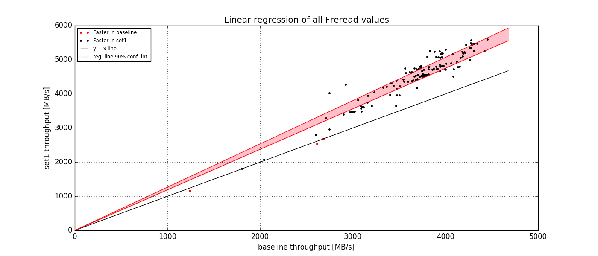
| Regression line |
|---|
| slope | 1.2281 |
| std. error | 0.02393 |
| ci. max 90% | 1.18848 |
| ci. min. 90% | 1.26771 |
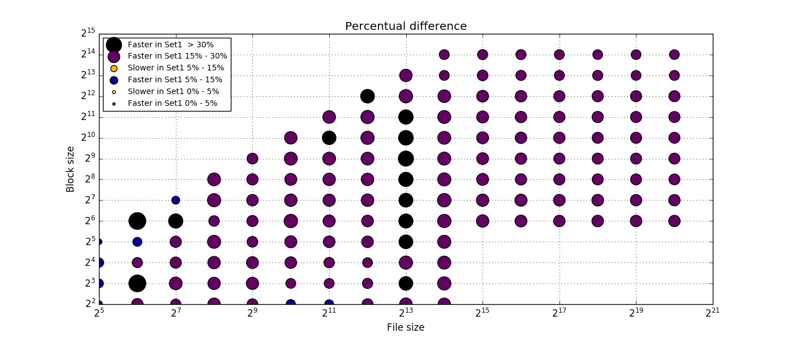
Back on top
ALL
| ALL |
File size [kB] |
4 |
8 |
16 |
32 |
64 |
128 |
256 |
512 |
1024 |
2048 |
4096 |
8192 |
16384 |
32768 |
65536 |
131072 |
262144 |
524288 |
1048576 |
|---|
| baseline | first quartile |
6.24 |
11.59 |
16.19 |
18.36 |
30.53 |
43.21 |
56.24 |
66.0 |
51.74 |
49.8 |
46.17 |
39.64 |
38.53 |
37.87 |
37.59 |
37.42 |
37.33 |
37.29 |
37.27 |
| median |
10.97 |
21.76 |
28.1 |
41.62 |
71.51 |
95.94 |
122.97 |
176.46 |
206.66 |
71.97 |
49.17 |
41.08 |
39.67 |
46.76 |
42.86 |
39.88 |
39.68 |
39.54 |
39.54 |
| third quartile |
21.12 |
39.62 |
81.38 |
123.23 |
262.72 |
399.96 |
530.31 |
724.77 |
870.4 |
769.09 |
286.14 |
319.88 |
338.23 |
364.98 |
382.71 |
121.81 |
110.54 |
108.06 |
107.97 |
| mean val. |
455.64 |
800.32 |
818.45 |
841.33 |
942.71 |
1013.67 |
1070.66 |
1132.75 |
1183.81 |
1121.34 |
1106.07 |
1026.01 |
939.86 |
932.49 |
935.6 |
939.02 |
936.13 |
930.38 |
934.79 |
| standard dev. |
1003.42 |
1811.17 |
1576.49 |
1488.38 |
1633.48 |
1679.86 |
1710.32 |
1763.42 |
1816.36 |
1895.02 |
1902.1 |
1766.51 |
1603.1 |
1586.64 |
1595.58 |
1609.38 |
1615.38 |
1622.55 |
1631.15 |
| ci. min. 90% |
247.92 |
537.14 |
631.87 |
688.96 |
793.25 |
873.42 |
938.5 |
1005.32 |
1060.09 |
998.91 |
988.91 |
921.85 |
849.05 |
824.42 |
826.92 |
829.4 |
826.1 |
819.86 |
823.68 |
| ci. max. 90% |
663.36 |
1063.49 |
1005.04 |
993.71 |
1092.18 |
1153.92 |
1202.81 |
1260.18 |
1307.53 |
1243.78 |
1223.23 |
1130.18 |
1030.67 |
1040.56 |
1044.28 |
1048.64 |
1046.16 |
1040.9 |
1045.89 |
| geom. mean |
29.05 |
49.06 |
70.84 |
88.83 |
132.13 |
165.9 |
210.87 |
242.05 |
257.28 |
160.42 |
134.55 |
123.87 |
121.24 |
141.24 |
137.5 |
134.81 |
132.02 |
129.22 |
129.0 |
| minimum |
3.72 |
3.13 |
2.92 |
2.56 |
2.12 |
1.56 |
1.57 |
1.54 |
1.57 |
1.55 |
1.6 |
1.58 |
1.55 |
25.51 |
24.36 |
24.47 |
24.89 |
24.67 |
23.21 |
| maximum |
3906.25 |
7812.5 |
8395.92 |
5283.95 |
5263.33 |
5472.41 |
5553.73 |
5625.32 |
5654.18 |
5649.63 |
5555.73 |
5311.93 |
4852.83 |
4681.66 |
4649.46 |
4696.92 |
4680.76 |
4704.58 |
4705.45 |
| set1 | first quartile |
382.75 |
648.2 |
1035.29 |
1368.1 |
1693.37 |
2025.89 |
2273.06 |
2459.13 |
2610.34 |
2617.51 |
2635.11 |
2606.01 |
2394.2 |
2444.78 |
2408.27 |
2419.43 |
2420.82 |
2422.18 |
2438.58 |
| median |
484.65 |
878.52 |
1430.74 |
2086.94 |
2736.2 |
3280.78 |
3668.84 |
3863.59 |
3999.12 |
4149.07 |
4218.77 |
4077.43 |
3733.08 |
3686.21 |
3638.87 |
3618.98 |
3612.7 |
3602.21 |
3613.94 |
| third quartile |
1279.43 |
1949.81 |
2641.97 |
3466.99 |
3923.98 |
4422.82 |
4465.72 |
4631.46 |
4811.05 |
4898.3 |
4987.58 |
4851.85 |
4667.53 |
4551.17 |
4521.64 |
4526.48 |
4527.29 |
4535.87 |
4541.74 |
| mean val. |
980.01 |
1702.66 |
2044.02 |
2388.57 |
2838.12 |
3205.06 |
3447.1 |
3587.84 |
3717.22 |
3792.47 |
3813.92 |
3754.67 |
3488.22 |
3508.89 |
3480.6 |
3468.47 |
3470.78 |
3473.97 |
3529.86 |
| standard dev. |
1080.17 |
1812.67 |
1547.19 |
1373.27 |
1430.16 |
1421.86 |
1405.58 |
1398.31 |
1412.52 |
1417.37 |
1406.45 |
1376.56 |
1275.01 |
1150.02 |
1141.63 |
1141.19 |
1145.72 |
1150.65 |
1155.25 |
| ci. min. 90% |
756.39 |
1439.26 |
1860.9 |
2247.98 |
2707.25 |
3086.35 |
3338.5 |
3486.8 |
3621.01 |
3700.89 |
3727.29 |
3673.5 |
3415.99 |
3430.56 |
3402.84 |
3390.74 |
3392.74 |
3395.59 |
3451.17 |
| ci. max. 90% |
1203.62 |
1966.05 |
2227.14 |
2529.16 |
2968.98 |
3323.77 |
3555.71 |
3688.88 |
3813.43 |
3884.04 |
3900.55 |
3835.83 |
3560.44 |
3587.22 |
3558.36 |
3546.2 |
3548.82 |
3552.35 |
3608.55 |
| geom. mean |
628.51 |
1128.45 |
1570.27 |
1987.65 |
2431.6 |
2817.35 |
3081.57 |
3235.99 |
3370.36 |
3448.34 |
3475.12 |
3428.25 |
3196.34 |
3280.66 |
3253.3 |
3239.96 |
3240.33 |
3241.83 |
3305.02 |
| minimum |
126.22 |
236.07 |
283.94 |
354.43 |
386.18 |
482.41 |
590.81 |
703.08 |
707.21 |
712.24 |
738.96 |
734.28 |
731.19 |
1222.41 |
1199.08 |
1221.99 |
1220.16 |
1219.26 |
1236.73 |
| maximum |
3906.25 |
7812.5 |
7442.46 |
6299.81 |
6933.98 |
6255.99 |
5964.4 |
5961.11 |
6290.14 |
6621.86 |
6221.14 |
5907.67 |
5559.6 |
5537.31 |
5326.23 |
4850.67 |
4846.57 |
4848.81 |
7460.08 |
| ttest equality |
DIFF |
DIFF |
DIFF |
DIFF |
DIFF |
DIFF |
DIFF |
DIFF |
DIFF |
DIFF |
DIFF |
DIFF |
DIFF |
DIFF |
DIFF |
DIFF |
DIFF |
DIFF |
DIFF |
| baseline set1 difference |
4316.11 % |
3937.19 % |
4990.78 % |
4913.92 % |
3726.34 % |
3319.66 % |
2883.44 % |
2089.45 % |
1835.14 % |
5665.06 % |
8479.46 % |
9825.69 % |
9311.05 % |
7783.94 % |
8389.3 % |
8974.47 % |
9005.56 % |
9009.37 % |
9040.41 % |
| ttest p-value |
0.0048 |
0.0001 |
0.0 |
0.0 |
0.0 |
0.0 |
0.0 |
0.0 |
0.0 |
0.0 |
0.0 |
0.0 |
0.0 |
0.0 |
0.0 |
0.0 |
0.0 |
0.0 |
0.0 |
| ALL |
Block size [kB] |
4 |
8 |
16 |
32 |
64 |
128 |
256 |
512 |
1024 |
2048 |
4096 |
8192 |
16384 |
|---|
| baseline | first quartile |
15.38 |
25.37 |
38.78 |
39.54 |
37.73 |
39.39 |
39.36 |
39.33 |
38.81 |
38.42 |
37.94 |
37.84 |
37.78 |
| median |
36.79 |
39.76 |
62.25 |
92.99 |
47.52 |
52.52 |
70.98 |
52.75 |
70.65 |
83.01 |
95.34 |
102.94 |
107.36 |
| third quartile |
48.24 |
82.97 |
130.61 |
224.0 |
327.99 |
468.19 |
532.05 |
623.93 |
779.39 |
542.97 |
635.7 |
772.4 |
1122.73 |
| mean val. |
775.07 |
946.44 |
962.6 |
1012.95 |
1050.85 |
1085.83 |
1075.91 |
1080.26 |
1077.92 |
1050.19 |
1008.82 |
864.64 |
835.46 |
| standard dev. |
1432.01 |
1724.39 |
1692.9 |
1722.72 |
1784.24 |
1802.56 |
1773.52 |
1797.06 |
1788.69 |
1770.28 |
1670.55 |
1389.44 |
1320.56 |
| ci. min. 90% |
693.96 |
844.76 |
858.33 |
901.65 |
956.77 |
987.44 |
975.45 |
974.29 |
967.74 |
935.82 |
895.03 |
764.24 |
733.42 |
| ci. max. 90% |
856.19 |
1048.12 |
1066.88 |
1124.25 |
1144.93 |
1184.22 |
1176.38 |
1186.22 |
1188.09 |
1164.57 |
1122.61 |
965.05 |
937.5 |
| geom. mean |
59.25 |
85.59 |
118.69 |
156.42 |
155.98 |
175.52 |
179.81 |
170.59 |
176.58 |
166.85 |
168.05 |
164.8 |
166.66 |
| minimum |
1.54 |
3.06 |
6.04 |
12.07 |
23.21 |
29.2 |
30.82 |
21.35 |
28.7 |
27.2 |
31.85 |
36.28 |
33.04 |
| maximum |
7812.5 |
7812.5 |
8395.92 |
5280.17 |
5428.1 |
5472.41 |
5553.73 |
5625.32 |
5654.18 |
5649.63 |
5346.8 |
4006.11 |
3633.59 |
| set1 | first quartile |
1100.75 |
1614.03 |
1988.11 |
2267.53 |
2452.17 |
2552.28 |
2610.99 |
2637.64 |
2618.69 |
2615.45 |
2582.06 |
2307.73 |
2231.58 |
| median |
1652.67 |
2662.67 |
3128.0 |
3794.88 |
4367.37 |
4553.88 |
4442.61 |
4486.14 |
4506.1 |
4497.23 |
4310.08 |
3586.35 |
3385.17 |
| third quartile |
3721.23 |
4642.09 |
4579.99 |
4770.9 |
4815.48 |
4749.09 |
4544.97 |
4566.25 |
4581.93 |
4566.71 |
4424.21 |
3621.18 |
3477.45 |
| mean val. |
2243.45 |
2981.37 |
3192.46 |
3544.6 |
3805.48 |
3891.45 |
3816.43 |
3836.71 |
3795.07 |
3757.62 |
3605.87 |
2996.87 |
2854.7 |
| standard dev. |
1387.49 |
1637.4 |
1442.48 |
1377.48 |
1355.33 |
1313.68 |
1223.59 |
1214.47 |
1240.25 |
1238.8 |
1147.53 |
822.33 |
736.11 |
| ci. min. 90% |
2164.85 |
2884.82 |
3103.61 |
3455.6 |
3734.02 |
3819.74 |
3747.12 |
3765.1 |
3718.68 |
3677.58 |
3527.71 |
2937.45 |
2797.82 |
| ci. max. 90% |
2322.05 |
3077.92 |
3281.31 |
3633.59 |
3876.94 |
3963.15 |
3885.74 |
3908.32 |
3871.47 |
3837.66 |
3684.04 |
3056.29 |
2911.58 |
| geom. mean |
1745.8 |
2456.36 |
2804.35 |
3213.39 |
3501.77 |
3610.37 |
3567.55 |
3595.15 |
3539.68 |
3499.15 |
3374.3 |
2857.44 |
2737.77 |
| minimum |
126.22 |
301.16 |
412.68 |
577.9 |
726.55 |
1016.25 |
1162.75 |
1255.92 |
1295.18 |
1292.98 |
1308.52 |
1232.94 |
1193.39 |
| maximum |
7812.5 |
7812.5 |
7442.46 |
6299.81 |
7268.09 |
6621.86 |
6221.14 |
7460.08 |
5715.82 |
5715.07 |
5414.09 |
4106.62 |
3538.22 |
| ttest equality |
DIFF |
DIFF |
DIFF |
DIFF |
DIFF |
DIFF |
DIFF |
DIFF |
DIFF |
DIFF |
DIFF |
DIFF |
DIFF |
| baseline set1 difference |
4392.51 % |
6596.49 % |
4925.05 % |
3981.16 % |
9090.31 % |
8570.67 % |
6158.58 % |
8404.46 % |
6278.38 % |
5317.96 % |
4420.66 % |
3383.86 % |
3053.24 % |
| ttest p-value |
0.0 |
0.0 |
0.0 |
0.0 |
0.0 |
0.0 |
0.0 |
0.0 |
0.0 |
0.0 |
0.0 |
0.0 |
0.0 |
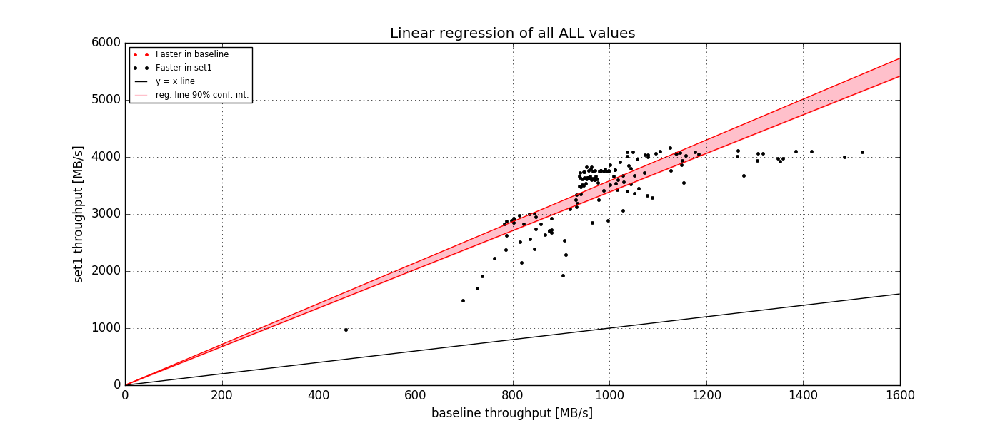
| Regression line |
|---|
| slope | 3.48277 |
| std. error | 0.05907 |
| ci. max 90% | 3.38498 |
| ci. min. 90% | 3.58055 |
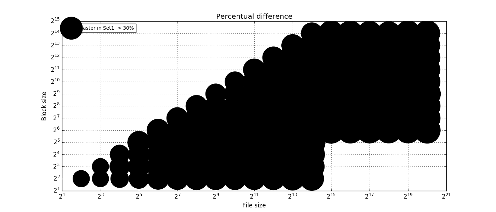
Back on top
Plotted values are median with first and third quartile errorbars.
mean => Arithmetic mean
standar dev. => Sample standard deviation
ci. max 90%, ci.min => confidence interval at confidence level 90% => it means that mean value of the distribution lies with 90% propability in interval ci_min-ci_max
geom. mean => Geometric mean
median => Second quartile = cuts data set in half = 50th percentile
first quartile => cuts off lowest 25% of data = 25th percentile
third quartile => cuts off highest 25% of data, or lowest 75% = 75th percentile
minimum => Lowest value of data set
maximum => Hightest value of data set
baseline set1 difference => Difference of medians of both sets in percennt.
ttest p-value => Student's t-test p-value = probability the both data sets are equal
ttest equality => If p-value is higher than 0.1, data sets are considered being equal with 90% probability. Otherwise the data sets are considered being different.
Linear regression of all results regression line is in y = ax form, b coeficient is zero.
for details about operations performed see Iozone documentation